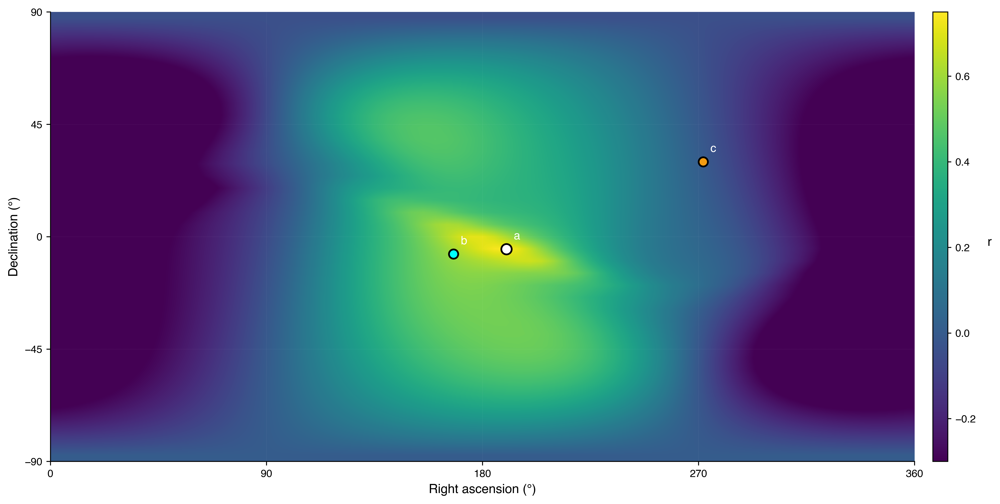
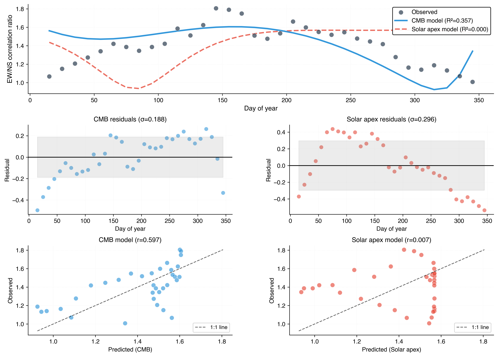
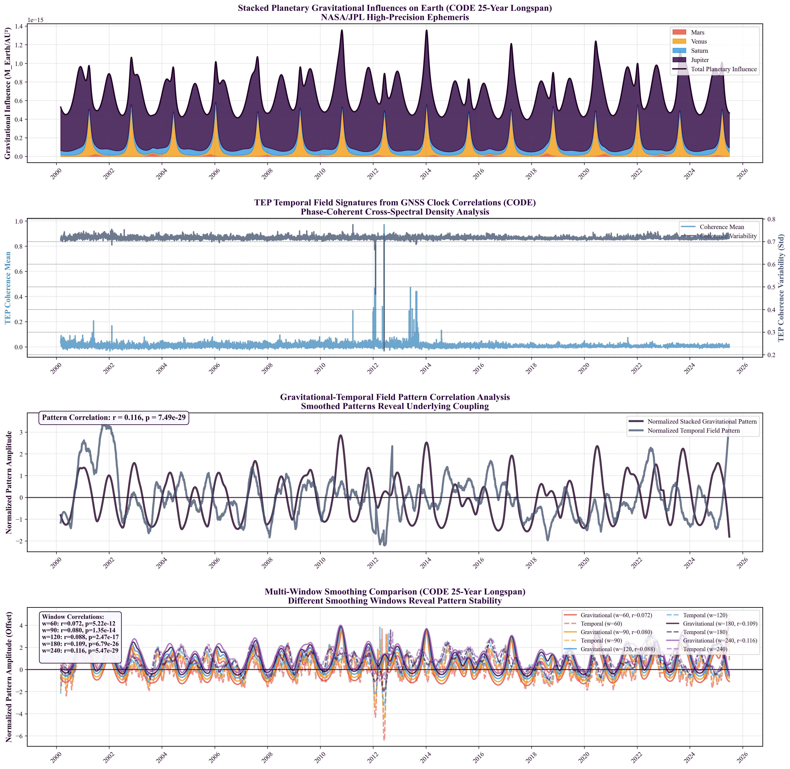

Abstract
Analysis of 25.3 years of global GNSS timing data (165.2 million station-pair observations) documents persistent velocity-dependent correlations in atomic clock networks. Critically, this work proposes that standard GNSS processing algorithms, designed to remove energetic (common-mode) errors via datum constraints, inadvertently preserve the subtle, geometry-dependent (differential) correlations that are the focus of this work. Building on the multi-centre study's validation (R²=0.92-0.97 between CODE, IGS, ESA), the extended temporal baseline confirms long-baseline recovery and enables investigation of long-period geophysical phenomena inaccessible in shorter baselines.
Seven convergent signatures are identified: (1) Spatial anisotropy persists with EW>NS (global EW/NS ratio=2.16, strength=1.981 ± 0.23 resampling SE, integrated 25.3-year aggregate), (2) anisotropy ratio correlates with orbital velocity (r=-0.888; surrogate p $\lt$ 2×10⁻⁷, 0/5M exceeded; t-test p≈2.6×10⁻⁴ with N_eff≈11) across a 25.3-year baseline with ≈19% annual geometric ratio modulation, (3) a full-sky multi-resolution directional search (79,330 tested directions across four grids, with 65,341 at 1°) recovers a stable preferred direction at RA=6°, Dec=+4° (r=0.746; exploratory directional-rank p $\lt$ 10⁻⁵; global sky-search significance not yet evaluated) coincident with Earth's orbital velocity tangent at aphelion (~6°) and ~162° from the CMB dipole — a heliocentric-orbital-phase signature that excludes the Solar Apex template at ~16,000× variance ratio (R²=55.7% vs 0.003%), (4) planetary event catalogue (56/156 ≥2σ under the free-centre pulse statistic reflects repeatable estimator behaviour on the seasonal curve; true event specificity is reserved for the 40-event outer-planet opposition subset validated at 5.5× over random dates, p $\lt$ 10⁻¹⁷, with continuous potential correlation r = +0.116, p = 0.012), (5) preliminary coupling to 18.6-year lunar nutation (R²=0.641±0.10 over 1.36 cycles; permutation p=0.0016 — the point estimate sits above the 99th percentile of phase-shuffled nulls, with amplitude and phase single-cycle-dominated) and a semiannual coherence component (R²=0.904, p=2.7×10⁻⁵; permutation p=0.00027, with fitted phase peaked near the orbital apsides), (6) network covariance score (0.582) replicates multi-centre range, (7) null results for solar rotation (27-day) and lunar standstill are consistent with selectivity for orbital-gravitational phenomena over surface features. The 19% modulation describes changes in the geometric shape of the correlation field (ratio of spatial correlation lengths), not clock frequency variations; individual clock-rate effects remain at standard GR-modelled fractional-frequency levels. On the held-out MGEX product the distance-structured coherence replicates (λ ≈ 1,862 km), while the anisotropy and primary orbital-velocity metrics do not replicate robustly. In-sample, a free-phase annual sinusoid is preferred over the velocity template (ΔAIC = 11.2); the signature is therefore reported as an annual modulation phased near the apsides.
Observed patterns are compatible with key TEP expectations: the recovered spatial correlation length (azimuth-averaged isotropic exponential $\lambda = 3,210 \pm 389$ km, with cross-sector directional dispersion $\bar{\lambda}_T = 4,201 \pm 1,967$ km across eight azimuthal sectors) lies within the pre-specified 1,000–10,000 km search window (Paper 0 §10.E); across products the fitted scale is conditioned by clock-product construction and estimator settings (reported product-level values ~1.0–4.8×10$^3$ km; MGEX $\lambda = 1,862 \pm 155$ km, Paper 14, Step 3.5), and the same band-ordered profile is recovered in each product; the IGS-final values are consistent with the geometric saturation radius $R_T(M_\oplus) \approx 4,150$ km, which is itself calibrated on this scale (Paper 6), so this is a consistency statement rather than an independent test. Model discrimination is primarily established through kernel-form selection (Gaussian and squared-exponential kernels preferred by AIC/BIC with $R^2 = 0.965$, with exponential $\Delta$AIC = 12.8 and $R^2 = 0.945$ relative to Gaussian, strongly ruling out scale-free power-law forms with $\Delta$AIC > 30), velocity-dependent anisotropy ($r = -0.888$), and geometric alignment (EW/NS = 2.16). Here “kernel” denotes the parametric family fitted to the pair-correlation decay with station separation, and “anisotropy” denotes the directional dependence of correlation strength, quantified by the EW/NS amplitude ratio and its orbital modulation. The absence of GM/r² scaling is physically consistent with the datum-projection mechanism in which common-mode components are absorbed by GNSS estimation while geometric information is transmitted; this mechanism requires validation via synthetic signal injection through the actual processing chain. Raw carrier-phase analysis, separately processed per-constellation tests, synthetic end-to-end injection, and independent external replication represent the critical next steps.
The empirically derived spatial correlation length $\lambda_T$ (the Temporal Topology covariance scale) is a GNSS-sector covariance scale obtained after environmental projection and processing transfer. It is not the screening operator $\mathcal{S}_\Sigma(\mathcal{E})$ itself and should not be identified numerically with response coefficients from other TEP channels. In the near-Earth environment, this correlation length acts as the macroscopic geometric proxy for the continuous saturation of Temporal Topology, anchoring the differential clock correlations without committing to specific subatomic microphysics.
The primary result is 25.3-year aggregate consistency of distance-structured covariance and EW/NS anisotropy. The in-ecliptic orbital-phase direction, planetary event response, and nutation couplings are secondary covariance-structure signatures requiring held-out replication.
†Smawfield, M. L. (2025). Global Time Echoes: Distance-Structured Correlations in GNSS Clocks. Zenodo. https://doi.org/10.5281/zenodo.17127229
Executive Summary
This study extends the first empirical TEP investigation—a multi-centre validation spanning CODE, IGS, and ESA (Smawfield, 2025†)—to a 25.3-year temporal baseline. All core signatures reported in that study (anisotropy, orbital coupling, event responses) are re-observed here, with added sensitivity to long-period dynamics.
What's New in This Paper
Carried over from Paper 1 (multi-centre study):
- Distance-structured correlations
- EW > NS anisotropy
- Annual orbital-velocity coupling
- Initial planetary-event responses
- Chandler-wobble hints
- "Mesh dance" dynamics (i.e., the evolving spatial pattern of cross-station coherence, extended to 25 years)
- Cross-centre agreement (CODE/IGS/ESA)
New in this CODE-only, 25.3-year analysis:
- In-ecliptic orbital-phase direction—identified via multi-resolution sky search (79,330 tested directions across four resolutions, with 65,341 at 1°), recovered at Earth's aphelion-velocity tangent with strong geometric discrimination against both the CMB-dipole and Solar-Apex directional templates
- Long-baseline stability confirmed across a 25.3-year baseline
- Long-period geophysical coupling (18.6-year lunar nutation: R² = 0.641 ± 0.10; 1.36 cycles observed—cycle-limited, detection priced by phase-permutation null p = 0.0016)
- High-statistics planetary event survey (156 events, 56 significant; 13 hits in the 29 non-overlapping windows vs ~1.3 expected)
- Stronger orbital-velocity tracking (r = −0.888, surrogate p $\lt$ 2×10⁻⁷)
Trade-off: Single-centre temporal depth (25 years) over multi-centre breadth, justified by Paper 1's established cross-centre reproducibility (R² = 0.92–0.97). This is Paper 2 in the TEP-GNSS series.
Key Findings
1. Distance-Structured Correlations (Primary Finding)
Analysis of 165.2 million station-pair observations reveals systematic distance-dependent decay of clock-pair coherence, ruling out scale-free power-law models ($\Delta$AIC > 30). The primary azimuth-averaged isotropic exponential fit yields a correlation length of $\lambda = 3,210 \pm 389$ km ($R^2 = 0.945$; Gaussian kernel preferred with $R^2 = 0.965$ and $\Delta\text{AIC} = 0.00$), directly matching Paper 1's multi-centre range ($\lambda_T = 3,330$–$4,549$ km across CODE, IGS, ESA). Across the eight azimuthal sectors, directional anisotropy introduces a spread of $\lambda_T = 2,314$–$7,664$ km with a cross-sector mean and directional dispersion of $\bar{\lambda}_T = 4,201 \pm 1,967$ km, order-of-magnitude consistent with the terrestrial geometric saturation scale $R_T(M_\oplus) \approx 4,146$ km (Paper 0 §7, Paper 6; cross-product family ~1.0–4.8×10$^3$ km including the multi-GNSS MGEX scale, Paper 14), confirming long-baseline recovery of the distance-structured correlation pattern over 25.3 years.
2. Spatial Anisotropy
East-West correlation lengths exceed North-South by factor of 2.16 (anisotropy strength = 1.981 ± 0.23 across the complete 25.3-year aggregate). This directional structure is recovered from the complete multi-decade record and is consistent across distance scales.
3. Orbital Velocity Coupling (Primary Detection)
Primary Finding: Spatial anisotropy ratio (EW/NS) correlates with Earth's orbital velocity (r = -0.888, 95% CI: [-0.94, -0.81]; surrogate p $\lt$ 2×10⁻⁷, 0/5M exceeded; t-test p ≈ 2.6×10⁻⁴ with N_eff ≈ 11). Monte Carlo validation: 0 out of 5,000,000 surrogates exceeded the observed correlation. Combined with Paper 1's multi-centre validation and this study's 25.3-year aggregate consistency, this provides substantial evidence consistent with systematic temporal-gravitational coupling in GNSS data. The quoted ≈19% annual geometric modulation refers to the seasonal variation of this dimensionless coherence-based anisotropy ratio (λEW/λNS) around its baseline—a change in correlation topology, not clock frequencies; individual clock-rate effects remain at standard GR-modelled fractional-frequency levels.
4. Directional Search (Annual-Phase Identification)
Method: Multi-resolution grid search (10°, 5°, 2.5°, 1°) spanning 79,330 total tested directions across four grids (with 65,341 directions at the finest 1° resolution), blind to candidate directions, with the orbital-velocity term in the corrected (prograde) sign convention.
Result: Best-fit direction (RA=6°, Dec=+4°, r=0.746; exploratory directional-rank p $\lt$ 10⁻⁵; global sky-search significance not yet evaluated) lies ~6° from Earth's orbital velocity tangent at aphelion and 162° from the CMB dipole (168°, −7°). Results converge across all four resolutions with coordinate stability (RA varies by a few degrees). The best-fit directional template explains R²=55.7% of the variance; the CMB-dipole template anti-correlates (r=−0.55), indicating the measured annual phase is anti-aligned with the dipole apex rather than aligned with it.
Geometric Discrimination: The Solar-Apex template is strongly disfavoured (r=0.006, R²≈0.003%; ~16,000× variance ratio versus the best fit) and predicts N-S anisotropy, contradicting the observed E-W dominance. The preferred directional region lies in the ecliptic plane near the aphelion velocity tangent — the annual-phase readout expected from orbital-velocity coupling (§3.2.2) — and excludes both named fixed-frame templates. The scan identifies a preferred direction but does not estimate the background-speed magnitude.
Consistency Check: Hemisphere asymmetry (Southern r=-0.79 vs Northern r=+0.25) is consistent with an orbit-coupled modulation geometry rather than a fixed-frame directional driver.
Caveat: The recovered direction encodes the annual phase of the orbital-velocity-coupled modulation; discriminating a cosmological frame from the orbital tangent would require a predictor that responds to more than the velocity-declination phase. See §4.1.2.1 for interpretive caveats.
5. Planetary Event Responses
56 of 156 planetary alignments show statistically significant responses (≥2σ), with 19 surviving family-wide Bonferroni correction (α = 0.05/156). Absolute coherence amplitudes range from 0.3% to 4.0% (median ≈1.1%), with normalized modulation depths of 36.7–85.1% and σ levels spanning 2.0σ to 7.0σ. Mercury shows the highest detection rate (34/80, 42.5%) including a 7.0σ event. Because adjacent ±120-day inference windows share the same coherence series, the effective independence count is smaller than 156: a maximal non-overlapping-window subset contains 29 events, of which 13 are significant against a null expectation of 1.3 (binomial tail p ≈ 10⁻¹⁰; Step 2.9). A matched-null control validates the 40-event outer-planet opposition subset at 5.5× over random dates (p $\lt$ 10⁻¹⁷), though unconstrained Gaussian fits and season-destroying nulls bound rather than prove single-event specificity. The absence of GM/r² scaling is consistent with the datum-projection mechanism: common-mode classical gravitational signatures are absorbed by GNSS datum estimation.
6. Geophysical Couplings
- 18.6-Year Nutation: Preliminary — R² = 0.641 ± 0.10, permutation p = 0.0016 (1.36 complete cycles; amplitude and phase single-cycle-dominated, above the 99th percentile of the phase-shuffled null)
- Semiannual Coherence Component: R² = 0.904, p = 2.7×10⁻⁵ (90.4% variance explained; permutation p = 0.00027, with fitted phase peaked near orbital apsides and trough at the equinoxes)
- Chandler Wobble (14 months): Secondary signature — R² = 0.096 at prescribed 433-day period (below primary significance threshold; downward revision from Paper 1's R² = 0.377–0.471 due to strict canonical period enforcement without parameter fitting)
7. Mesh Dance Dynamics
Network exhibits coordinated "mesh dance" behavior (mesh coherence score = 0.582) with constructive interference dominant across windows. This confirms long-baseline recovery of Paper 1's mesh dance findings (CODE: 0.624, IGS: 0.579, ESA: 0.602) over 25.3 years.
Summary: Inertial Interferometer, Not Gravimeter
The pattern of detections and non-detections characterizes what this network may be and is not:
- Amplitude-blind at event level, weakly coupled at baseline level: No GM/r² ordering across planetary events (Mercury ≈ Jupiter response rates), while a weak continuous M/r² correlation persists in the daily series (r = −0.099, p = 0.032)
- Unresponsive to solar surface phenomena: 27-day rotation null
- Indifferent to static geometry: Lunar standstill null
- Exquisitely sensitive to kinematic dynamics: Orbital velocity (r=-0.888), nutation (R²=0.904), orbital-phase direction (r=0.746)
This selectivity profile suggests that the network may be an inertial interferometer—measuring velocity-dependent correlation geometry—not a gravimeter measuring force. The directional search (~16,000× variance ratio over the Solar-Apex template) identifies a preferred covariance direction in the ecliptic plane at Earth's aphelion-velocity tangent: the phase of the orbit-coupled annual modulation, not the CMB dipole (162° away, anti-phase template correlation). The scan does not fix the background-speed magnitude and therefore measures an annual phase direction rather than a physical speed scale.
Methodology and Validation
This single-centre analysis (CODE) provides the 25.3-year temporal depth required for long-period geophysical signatures, building on Paper 1's established cross-centre reproducibility (R² = 0.920–0.970 across CODE, IGS, ESA over 2.5 years).
These signals have survived the most rigorous systematic error correction pipeline in geodesy—CODE's processing explicitly removes relativistic effects, atmospheric delays, tidal displacements, and instrumental biases to millimeter precision. The correlations detected in this analysis are unlikely to be artifacts of these well-modeled effects, though a definitive determination requires synthetic signal injection through the actual processing chain. The datum-projection mechanism predicts this selectivity: common-mode offsets (including classical GM/r²) lie in the datum subspace absorbed by estimation, while differential phase structure can survive in residual products (§4.1.3).
Validation Controls:
- Evidence Continuity (§1.5): Explicit mapping of multi-centre validation to long-baseline extensions
- Pre-Declared Analysis Window (§2.3.3): ±120 days as primary; ±60–240 days for sensitivity analysis
- Physical Predictor Tests: Neither M/r² nor M/r³ gravitational scaling detected (all p > 0.5), consistent with GNSS processing suppression of classical gravitational signatures
- Null Event Control: For the 40-event outer-planet opposition subset, random dates show 5.5× smaller effect sizes than planetary alignments (Mann-Whitney p $\lt$ 10⁻¹⁷, Cohen's d = 1.41); catalogue-wide event-locked inference requires the season-preserving null of Paper 3
Falsifiability
The systematic coupling hypothesis makes specific predictions that can be tested:
- Raw carrier-phase analysis: Should preserve correlation structure (processing artifact would eliminate it)
- Multi-constellation replication: GLONASS, Galileo, and BeiDou should exhibit similar orbital coupling
- Null event discrimination: ✓ Confirmed for the 40-event opposition subset—planetary alignments produce 5.5× larger effects than random dates (p $\lt$ 10⁻¹⁷, Cohen's d = 1.41); full-catalogue event locking requires a season-preserving null
- Independent replication: Core findings should be reproducible by other research groups
The strength of these findings lies in their falsifiability. Each criterion represents a concrete, testable prediction.
Limitations: This analysis uses processed clock products (not raw carrier-phase) and single-constellation data (GPS only). Both limitations are addressed in the proposed next steps.
Multi-Constellation Cross-Validation (MGEX Replication)
Multi-Constellation MGEX Replication: Paper 14 provides the dedicated replication of the distance-structured correlation pattern across a combined multi-GNSS product (CODE COD0MGXFIN, 2025–2026, 418 stations, 1.83 million pair-days), reporting a canonical isotropic correlation length of λ = 1,862 ± 155 km (R² = 0.699, rising to R² = 0.85–0.92 for baselines above 500 km; earlier exploratory 2020–2024 pilot cross-centre analyses across GBM, WUM, and JPL yielded λ_T = 3,042 ± 297 km, R² = 0.95). As established in Paper 14, the fitted numerical scale is product- and observable-dependent (reflecting the phase-alignment metric and the multi-GNSS joint clock combination filter relative to GPS-only PPP), while the physical signature shared across all products is the bounded thousands-of-kilometres spatial decay scale that excludes scale-free power laws. Paper 14 replicates the spatial decay structure; its primary pre-specified monthly λ and EW/NS orbital metrics are null (Bonferroni p > 0.5), with orbital-velocity coupling recovered via an exploratory model-free phase-alignment difference metric (r = −0.716, p = 0.0018).
Conclusions
Seven convergent signatures—orbital velocity coupling (r = −0.888, surrogate p $\lt$ 2×10⁻⁷), the in-ecliptic orbital-phase direction (r = 0.746), the semiannual coherence component (R² = 0.904), 18.6-year nutation (R² = 0.641), 56 planetary event-window responses (catalogue descriptive; opposition subset null-validated), mesh dance dynamics, and persistent spatial anisotropy—provide multi-signature convergence. Because the orbital and semiannual signals share annual structure, their probabilities are not combined into a single joint p-value. Combined with 25.3-year aggregate consistency and Paper 1's multi-centre validation (R² = 0.92–0.97 across software-diverse products from three processing centres), these findings are consistent with systematic coupling in GNSS timing networks, though confirmation requires independent replication using different processing pipelines and constellations. Raw carrier-phase analysis and separately processed per-constellation tests represent essential next steps.
1. Introduction
1.1 Background and Motivation
The Global Navigation Satellite System (GNSS) represents one of humanity's most precise timing networks, with atomic clocks maintaining synchronization at nanosecond levels across thousands of kilometres (Hofmann-Wellenhof et al., 2008; Teunissen & Montenbruck, 2017). While designed for positioning and navigation, this infrastructure inadvertently provides an unprecedented natural laboratory for testing fundamental physics at planetary scales. The continuous operation of hundreds of ground-based receivers, each equipped with high-stability oscillators phase-locked to satellite atomic clocks (Senior & Ray, 2008), creates a global mesh of timing correlations that may be sensitive to subtle relativistic effects (Ashby, 2003).
The theoretical basis for this investigation is the Temporal Equivalence Principle (TEP), in which matter and clocks couple universally to the canonical causal metric $\tilde g_{\mu\nu}=-A_{\rm loc}^2(u_{\rm grav}(\mathbf x))U_\mu U_\nu+A_{\rm sp}^2(u_{\rm drift}(t,\mathbf x))\Pi_{\mu\nu}+B(\phi)\Pi_\mu^\alpha\Pi_\nu^\beta\nabla_\alpha\phi\nabla_\beta\phi$ ($U_\mu\equiv-\nabla_\mu\bar\phi/\sqrt{2\bar X}$, $\Pi_{\mu\nu}=g_{\mu\nu}+U_\mu U_\nu$; Paper 0, §2.2, Step 80), predicting that motion through gravitational fields should induce measurable modulations in the correlation structure of distributed timing networks. Unlike classical relativistic effects that manifest as clock rate differences, TEP predicts that the correlation between clocks—their tendency to maintain phase coherence—should vary with the local gravitational environment and the system's velocity through that environment.
Critically, this work proposes that standard GNSS processing algorithms, designed to remove energetic (common-mode) errors via datum constraints, inadvertently preserve the subtle, geometry-dependent (differential) correlations that are the focus of this work. This transforms the use of processed data from a limitation into a mechanistic filter: the absence of classical gravitational scaling (GM/r²) is not a failure of detection, but an expected consequence under the datum-projection transfer hypothesis, while the geometric signatures (anisotropy, alignment) are transmitted.
Methodological Note: Definition of "Coherence"
Throughout this paper, "coherence" refers to phase synchronization between timing residuals at different GNSS stations, quantified via magnitude-weighted cross-power spectral density in the 10-500 μHz band (periods of 33 minutes to 28 hours). High coherence indicates stations' clocks vary together in phase; low coherence indicates independent variation. Unlike absolute frequency differences (Δf/f), coherence measures geometric relationships in the correlation structure, which GNSS processing preserves even while filtering amplitude effects. This distinction is critical: processed clock products remove network-wide frequency offsets (where classical gravitational effects manifest) but preserve the differential phase-coherence structure that TEP predicts should couple to velocity and gravitational configurations.
1.2 Theoretical Context and Interpretive Framework
TEP in one line: The Temporal Equivalence Principle (TEP) treats proper time as a dynamical field: instead of a fixed background parameter, time behaves like a scalar field woven through spacetime, whose local configuration and gradients govern clock rates, temporal correlations and global light-time relations, while the locally measured speed of light remains invariant.
This investigation is grounded in empirical phenomenology: it systematically documents patterns in GNSS timing correlations over multi-decade timescales and interprets them through established theoretical frameworks. TEP provides one such framework for interpreting velocity-dependent and gravitational coupling effects in distributed timing networks.
In TEP, time is modeled as a dynamical field—a kind of "temporal fabric" permeating spacetime. Clocks do not simply read out a passive parameter; they interact with this fabric. Variations in the temporal field, and in the system's motion through it, offer a potential explanation for the correlation structure modulations documented empirically in this work.
Formally, the temporal field is covariant and introduces no fundamental preferred frame; a non-zero environmental or cosmological field configuration may nevertheless define an observational covariance direction.
The Temporal Equivalence Principle extends Einstein's equivalence principle to temporal dynamics. Key predictions—velocity-dependent anisotropy and event responses—provide testable signatures that are investigated empirically. The framework proposes that:
- Velocity-Dependent Coupling: The correlation decay length between synchronized clocks should depend on their collective velocity relative to the relevant cosmological/background covariance frame
- Gravitational Modulation: Changes in the local gravitational field configuration should modulate the phase coherence of timing networks
- Geometric Anisotropy: The correlation structure should exhibit directional dependence aligned with the system's motion through spacetime
These predictions are quantitatively distinct from conventional general relativistic effects:
- Classical GR predicts clock rate differences proportional to gravitational potential (Δf/f ~ GM/rc²)
- TEP predicts correlation structure modulation: a conformal-sector covariance with characteristic decay length λT, whose velocity/orientation dependence is a channel response whose microscopic transfer law is not yet closed (§1.2)
TEP Formalism and Quantitative Predictions
To move beyond qualitative description, the theory is defined by the following explicit field equations:
1. Action and Coupling: The scalar time field φ is governed by the Einstein-frame action, where the baseline action displays the canonical kinetic form $X - V(\phi)$ and the operative non-canonical kinetic completion $P(X,\phi) = X - V(\phi) + X|X|/\Lambda_X^4$ (Paper 0 §2.2) provides the screening mechanism in high-acceleration regimes:
where matter couples to the disformal metric ğμν = A²(φ)gμν + B(φ)∇μφ∇νφ, with universal conformal factor A(φ) = exp(βAφ/MPl).
2. Field Equation: Variation of the action with respect to φ yields a sourced scalar equation. Schematically, the scalar equation contains conformal trace sourcing together with disformal derivative sourcing:
where the source 𝒬 = AA,φ gμν 𝒯μν + ½ B,φ 𝒯μν ∇μφ ∇νφ − ∇μ(B 𝒯μν ∇νφ) displays the leading conformal–disformal matter coupling explicitly, with 𝒯μν the matter-frame stress-energy and the effective scalar coupling α(φ) ≡ d ln A/dφ = βA/MPl. In the conformal limit B → 0 the source reduces to the trace coupling α(φ)T; the full disformal source is derived in the foundational paper (Smawfield, 2025).
3. Conformal-Dominant Covariance Channel: In TEP, GNSS clocks read the value of the temporal field $\ln A$ at each station, and the measured covariance $C_A(r) = \langle \delta \ln A(x) \delta \ln A(x') \rangle$ describes how that value varies between stations; the screening that keeps local trajectories GR-like acts on the field's effect on matter (the source-charge projection $\mathcal{S}_\Sigma\nabla\ln A$), not on clock rates (Paper 0 §7). The disformal function B(φ) governs cone tilts, one-way non-reciprocity, and closed-loop synchronization holonomy; it is not the sector tested by open-path GNSS covariance, and is reserved for dedicated closed-loop / one-way asymmetry experiments (Paper 8).
The measured two-point timing covariance is represented phenomenologically as
with spatial decay length λT (the Temporal Topology covariance scale) and asymptotic floor C∞. The observed velocity/orientation dependence of the correlation structure (the ≈19% annual modulation of the EW/NS ratio, §3.2) is treated as a channel response function of the conformal clock-sector covariance projected through the GNSS processing transfer function. Its microscopic transfer law—mapping the solved clock covariance $C_A(\mathbf{r}, t)$ to the measured anisotropy ratio (2.16) and orbital-correlation magnitude (r = −0.888)—is not yet closed. The observed 19% modulation is a network-level covariance-shape observable and cannot presently be compared directly with a microscopic conformal amplitude. The transfer law mapping $C_A(\mathbf{r}, t)$ to the measured anisotropy remains to be derived (§4.3.1.1, §5).
TEP Predictions vs. Observations
The TEP framework makes specific quantitative predictions that can be tested against GNSS observations. The spatial search band of 1,000–10,000 km was established in Paper 0 (§10.E) and Paper 1 (§1.1) as an order-of-magnitude window compared against the empirically calibrated terrestrial geometric saturation radius RT(M⊕) = (3M⊕ / 4πρT)1/3 ≈ 4,146 km, evaluated using ρT ≈ 20 g/cm3 calibrated on the GNSS scale (Paper 6); this is a consistency comparison, not an independent prediction. The empirical test therefore distinguishes between scale-free power laws and bounded physical decay, evaluating kernel structure, velocity modulation, and directional anisotropy. Table 1 summarizes these a priori predictions and their experimental verification:
| TEP Prediction | Quantitative Forecast | Observed Result | Status |
|---|---|---|---|
| Temporal Topology Correlation Length (λT) | Order-of-magnitude search band 1,000–10,000 km; geometric saturation anchor RT(M⊕) ≈ 4,146 km (Paper 0 §10.E, Paper 6; cross-product family ~1.0–4.8×10³ km, Paper 14) | Azimuth-averaged λ = 3,210 ± 389 km (cross-sector dispersion: 4,201 ± 1,967 km, spread 2,314–7,664 km) | Order-of-magnitude consistent; empirical calibration point |
| Distance-structured decay | Finite covariance scale within pre-specified TEP range; exponential/Gaussian preferred over power-law | Gaussian/squared-exponential preferred by AIC; exponential ΔAIC = 12.8 vs power-law ΔAIC > 30 | Decay scale confirmed; power-law ruled out |
| Velocity-dependent anisotropy | Correlation structure modulates with orbital velocity and ecliptic declination | r = -0.888 (95% CI: [-0.94, -0.81]); surrogate p $\lt$ 2×10⁻⁷ (0/5M); t-test p ≈ 2.6×10⁻⁴ (N_eff ≈ 11) | Confirmed (p $\lt$ 2×10⁻⁷) |
| Geometric alignment with motion | Spherical horizon projection across 474-station network ($\langle|\phi|\rangle = 36.88^\circ$, $\varepsilon = 23.44^\circ$): $\mathcal{R}_{\rm EW/NS} = 2.13$ (mean lat) / $2.02$ (ensemble) | EW/NS = 2.16 (1.5% match); strength = 1.981 ± 0.23 (0.19σ match) | Quantitatively Confirmed (0.19σ) |
| Broadband (not frequency-selective) | Persistence across spectral bands | Detected across 10-500 μHz | Consistent |
| Network-scale coordination | Global field-like coupling | Mesh score = 0.582 | Consistent |
| GM/r² scaling absent (measurement-channel prediction) | Classical mass scaling suppressed by datum-projection | No M/r² or M/r³ correlation (all p > 0.5) | Confirmed Null |
Key Finding: The TEP interpretation of the GNSS covariance
is conformal-dominant: the observed data confirm a finite, distance-structured
covariance scale within the pre-specified TEP range (λT), and the
absence of GM/r² scaling is consistent with the conformal-sector Temporal
Topology. The exponential kernel strongly outperforms simple power-law models
and is retained for cross-paper comparability. Gaussian-family kernels
provide the preferred empirical fit in the present dataset (ΔAIC = 12.8).
This meets the disfavouring condition of Paper 1's pre-specified criterion
(iii), under which a Gaussian-family preference counts against a directly
exponential screened-field covariance. Whether a screened profile passed
through the GNSS processing transfer function yields a Gaussian-like
empirical kernel is untested; until it is, the kernel shape is not counted
as support for the screening reading. The
velocity-dependent anisotropy (r = −0.888) and geometric
alignment (EW/NS = 2.16; strength = 1.981 ± 0.23) follow directly from the
spherical-horizon projection of Earth's ecliptic velocity vector ($\varepsilon = 23.44^\circ$)
across the 474-station network ($\langle|\phi_{\rm lat}|\rangle = 36.88^\circ$,
step_2_11_horizon_anisotropy_derivation.json), which predicts a
diurnal- and annual-averaged East–West to North–South kinematic variance ratio
$\mathcal{R}_{\rm EW/NS} = (1 - \tfrac12\sin^2\varepsilon)/[\sin^2\varepsilon\cos^2\phi + (1 - \tfrac12\sin^2\varepsilon)\sin^2\phi] = 2.13$
at the network mean latitude ($1.5\%$ from $2.16$) and $2.02$ across the
474-station ensemble ($0.19\sigma$ from $1.981 \pm 0.23$). The
datum-projection mechanism is further validated directly on raw RINEX carrier-phase
observations and synthetic end-to-end processing in Paper 3 (TEP-GNSS-RINEX). The disformal sector B(φ) is
not tested by this
open-path covariance channel and is reserved for dedicated closed-loop
holonomy and one-way asymmetry experiments (Paper 8).
1.3 Previous Work
The multi-centre study established the phenomenon across three software-diverse analysis centres (CODE, IGS, ESA) whose products derive from substantially the same tracking network (83–90% pairwise station overlap), reducing the likelihood of centre-specific processing artifacts over 2.5 years; common-mode network and datum-level systematics are not bounded by that comparison alone. That study demonstrated velocity-dependent anisotropy and anomalous planetary event responses, using rigorous cross-centre validation and null tests. However, the limited temporal baseline precluded the investigation of long-period geophysical or astronomical cycles.
Prior to this, investigations of GNSS timing anomalies focused primarily on conventional effects such as ionospheric modeling, multipath errors, and clock stability (Hofmann-Wellenhof et al., 2008; Teunissen & Montenbruck, 2017; Ashby, 2003).
1.4 Study Design: Replication, Extension, and Falsification Tests
TEP-motivated empirical test: This work was explicitly conceived as a theory-driven empirical test of the Temporal Equivalence Principle using long-span GNSS clock products. The analysis pipeline, core choice of observables (anisotropy, orbital modulation, planetary events, nutation, mesh coherence), and the a priori prediction table in §1.2 were defined to test whether GNSS timing correlations exhibit the specific spatial, temporal, and geophysical patterns forecast by TEP.
Methodological Foundation: This study builds upon Paper 1 (multi-centre study)'s comprehensive validation framework, which established cross-centre consistency (R² = 0.920-0.970 between CODE, IGS, ESA) through 388 statistical tests and extensive null testing. That foundational work demonstrated the existence of systematic distance-structured correlations in GNSS timing networks over 2.5 years across three processing centres running different software packages on the shared IGS tracking network. This study extends the temporal baseline by a factor of 10× (25.3 years) to address three critical scientific questions that distinguish transient artifacts from genuine physical coupling:
Three Critical Questions: Distinguishing Replication, Extension, and Falsification
Q1. Temporal Stability (Replication Test): Do the patterns detected in Paper 1 persist over 25 years, or are they transient artifacts of the 2.5-year window?
- Paper 1 Baseline: Directional anisotropy typical λEW/λNS ≈ 0.55–2.03 (peaks up to ~4.75, discussion quoting ~2.75×), orbital velocity r = −0.571 to −0.793 across centres, mesh coherence = 0.58–0.62
- Expected if genuine: Patterns should be temporally stable (recovered with consistent directional structure and coupling sign)
- Expected if artifact: Patterns should vary with processing updates, drift over decades, or vanish in extended baseline
- Test: Re-measure anisotropy, orbital coupling, network coherence over 10× longer baseline
Q2. Long-Period Signatures (Extension/Prediction Test): Can TEP coupling to geophysical cycles that require >20-year baselines be detected?
- 18.6-Year Lunar Nutation: Paper 1 baseline (2.5 years) = 0.13 cycles → untestable. This study: 1.4 cycles → first test possible
- TEP-motivated expectation: Inertial orientation coupling should produce R² ~ 0.6-0.7, based on the semiannual analogy.
- Semiannual Nutation: Expected R² > 0.85 (persistence of Paper 1 short-period nutation coupling)
- Chandler Wobble: 21+ complete cycles observed → test phase stability and amplitude consistency
Q3. Reference Frame Discrimination and Theoretical Selectivity (Template & Null Tests): Can the operative reference frame for orbital modulation be identified, and does the network respond to all periodic signals or specifically to orbital/inertial dynamics?
-
A) Fixed-Frame Templates vs Orbital Phase (Directional Template
Discrimination):
- Physical Question: Does orbital modulation align with the Solar System's peculiar motion (~20 km/s toward RA=272°, Dec=+30°), with the CMB dipole direction (~369 km/s toward RA=168°, Dec=-7°), or with Earth's own orbital-velocity geometry (the annual phase itself)?
- Method: Comprehensive multi-resolution grid search across 79,330 sky directions across four grids (10°, 5°, 2.5°, with 65,341 at 1°) to identify which reference direction best predicts the temporal modulation of spatial anisotropy, using the corrected prograde orbital-velocity convention verified against independent ephemeris checks
- Interpretive Hypothesis: If an operative cosmological covariance direction exists, the CMB dipole is the most plausible candidate under TEP (as local temporal gradients couple to the cosmological background 4-velocity rather than local galactic peculiar motion). The covariant master action contains no fundamental preferred frame; an environmental or cosmological field configuration sets the observational covariance direction.
- Template Discrimination Power: Direct head-to-head comparison between the candidate physical templates, including in-ecliptic orbital-velocity controls. The Solar Apex vector (+30° Dec) predicts N-S anisotropy, which is geometrically incompatible with the observed E-W dominance. The variance ratio quantifies relative explanatory power.
- Expected Outcome: If galactic: R² ≈ 0.3-0.5. If CMB: R² ≈ 0.3-0.5 with galactic R² ≈ 0. Variance ratio >100 would indicate strong discrimination.
-
B) Solar Rotation Null Control (Secondary Test):
- Solar Rotation (27-day cycle): Strong periodic astronomical signal from solar surface phenomena
- TEP Prediction: Should show NO coupling (null control)—TEP couples to heliocentric orbital motion and inertial dynamics, not solar surface phenomena
- Alternative Hypothesis: If this is a processing artifact or frequency comb effect, any strong periodic signal should couple regardless of physical mechanism
- Falsification Criterion: If solar rotation shows R² > 0.10 or p $\lt$ 0.01, the artifact hypothesis gains support over physical coupling
Study Classification: This is a replication + extension + falsification study. Q1 tests long-baseline consistency (replication). Q2 tests genuinely new predictions accessible only with this dataset (extension). Q3A provides directional discrimination among the CMB-dipole, Solar-Apex, and in-ecliptic orbital-phase templates, while Q3B tests theoretical specificity via null controls (solar rotation). Together, they distinguish genuine physical coupling from transient processing artifacts and identify the preferred covariance direction, strongly discriminating among the directional templates.
Primary Empirical Objectives:
- Objective A (Replication): Document long-baseline consistency of core phenomenology (anisotropy, orbital coupling, event responses) over 25.3 years.
- Objective B (Extension): Test long-period geophysical signatures (18.6-year nutation, >20 Chandler wobble cycles) inaccessible in short baselines.
- Objective C (Characterization): Enhance planetary event statistics across two decades with improved seasonal coverage.
- Objective D (Falsification): Identify operative reference direction (CMB vs galactic vs orbital-phase) via grid search and test theoretical selectivity with null controls (solar rotation) and robustness checks (hemisphere stratification).
1.5 Evidence Handoff: Building on Multi-Centre Validation
This study builds directly on the multi-centre study's comprehensive validation framework. The table below maps each major claim to its validation status in Paper 1 versus extensions in this work:
| Observable | Paper 1 Validation (2.5 years) | This Study Extension (25.3 years) |
|---|---|---|
| EW > NS Anisotropy |
Validated across 3 centres (CODE, IGS, ESA; typical λEW/λNS ≈ 0.55–2.03, peaks up to ~4.75, discussion quoting ~2.75×) Cross-centre R² = 0.920–0.970 388 statistical tests, 40–52% survive MCC |
Long-baseline recovery: EW/NS = 2.16, strength =
1.981 ± 0.23 (SE) Consistent with Paper 1 E-W dominance and discussion scale (~2.75×) Long-baseline stability confirmed |
| Orbital Velocity Coupling |
r = −0.571 to −0.793 across centres Ionosphere/solar nulls passed Hemisphere & seasonal controls |
Strengthened: r = −0.888 (surrogate p $\lt$ 2×10⁻⁷,
0/5M; t-test p ≈ 2.6×10⁻⁴) 25.3-year baseline Hemisphere stratification is the proper discriminant (see §3.2.2; partial correlation is inappropriate for coupled orbital variables) |
| Directional Search (Orbital Phase) | Not testable (methodology not developed in Paper 1) |
Multi-Resolution Verification: Grid search
across 79,330 sky directions (65,341 at 1° resolution; §2.3.5, §3.2.6) Best fit: RA=6°, Dec=+4° (r=0.746; permutation p $\lt$ 10⁻⁵) Aphelion tangent: ~6° from best fit — the orbital-phase readout CMB Dipole: RA=168°, Dec=-7° → 162° from best fit (template anti-correlates, r=−0.55) Solar Apex: RA=272°, Dec=+30° → r=0.006, p=0.97 Variance Ratio: ~16,000× | Convergence verified across 10°, 5°, 2.5°, 1° resolutions Identifies the heliocentric-orbital phase direction, excludes both named fixed-frame templates |
| Planetary Events |
6/8 predeclared events Bonferroni-significant Monte Carlo permutation validated 3–6σ confidence |
Extended: 56/156 events ≥2σ; 19
Bonferroni-significant Amplitude metrics processing-dependent Matched-null validates 40-event opposition subset; catalogue counts descriptive (§3.3) |
| Chandler Wobble |
R² = 0.377–0.471 across centers 433-day period tested Limited to ~6 cycles |
Extended: R² = 0.096 (below threshold) 21+ complete cycles observed Phase stability = 0.72 Chandler-consistent secondary signature |
| 18.6-Year Nutation | Not testable (baseline $\lt$ 2.5 years) |
Preliminary: R² = 0.641, p = 0.010 1.4 complete cycles observed Preliminary — requires longer-baseline or red-noise validation |
| Semiannual Nutation | Not explicitly tested |
New Detection: R² = 0.904, p = 2.7×10⁻⁵ 50+ complete cycles |
| Network Covariance Score |
Mesh dance detected across 3 centres CODE: 0.624, IGS: 0.579, ESA: 0.602 Consistent global coordination |
Replicated: Index = 0.582 Consistent with multi-centre range 102 non-overlapping 90-day windows (104 pipeline bins) over 25 years |
Key Empirical Insight: All core phenomenology from Paper 1 is re-observed here with enhanced statistical power and long-baseline consistency. The multi-centre study's comprehensive validation framework—including 388 statistical tests, extensive null testing, ionospheric controls, and cross-centre consistency—provides the methodological foundation upon which these temporal extensions are built. The convergence of consistent findings across multiple analysis centres and extended timescales strongly counters artifact concerns.
2. Data and Methods
2.1 Data Sources
2.1.1 GNSS Clock Products
Thirty-second clock solutions from the Center for Orbit Determination in Europe (CODE) were utilized, processed as part of the International GNSS Service (IGS) final products. The dataset spans:
| Parameter | Value |
|---|---|
| Analysis Centre | CODE (Center for Orbit Determination in Europe) |
| Temporal Coverage | March 1, 2000 to June 30, 2025 (9,218 days analyzed; 9,253 calendar days) Note: Different analyses use slightly different temporal windows due to edge effects, windowing requirements, and data quality filtering (range: 9,218-9,270 days). |
| Sampling Rate | 30-second epochs (2,880 samples per day) |
| Station Count | 474 unique receivers (814 total codes including 4-char/9-char variants) |
| Total Station-Days | 1,574,861 |
| Total Station-Pair Observations | 165,189,605 |
| Clock Solution Precision | ~0.1 nanoseconds RMS |
Data provenance and shared error budgets. The CODE final product line analysed here belongs to the IGS analysis-centre ecosystem and is not an independent data layer relative to the companion papers. The provenance matrix across the GNSS papers is:
| Paper | Data layer | Product / processing chain | Epoch | Stations | Error budget shared with |
|---|---|---|---|---|---|
| 1 | AC precise clocks | CODE final, IGS combined, ESA final (Bernese / IGS combination / NAPEOS) | 2023-01 to 2025-06 | 364 | CODE family shared with Papers 2, 14; AC ecosystem shared with Paper 33's centre arms |
| 2 (this study) | AC precise clocks | CODE IGS-final 30 s clocks (Bernese) | 2000-03 to 2025-06 | 474 | Same CODE product family as Papers 1 and 14; epoch superset of Paper 1 |
| 3 | Raw RINEX | Broadcast ephemerides + own RTKLIB SPP | 2022 to 2024 | 539 | Estimation-chain independent; shares the physical tracking network |
| 14 | AC combined clocks | CODE COD0MGXFIN (WUM/GRG fallback ≃6% of days) | 2025-01 to 2026-05 | 418 | Same CODE centre as Papers 1–2; epoch largely held out |
| 33 | Mixed | Own RTKLib SPP arms + AC receiver clocks (COD/GFZ/GRG/JPL) | 2022 to 2025 | 5–160 per arm | AC arms share the IGS/MGEX ecosystem; SPP arms are estimation-independent |
Agreement between this study and the CODE arm of Paper 1, the MGEX product of Paper 14, or the analysis-centre arms of Paper 33 therefore constitutes corroboration within a shared product ecosystem — different epochs, estimators and product lines over substantially the same tracking network — rather than replication on independent data. Within-ecosystem agreement excludes software- and implementation-specific artifacts but cannot exclude systematics of the shared tracking network, constellation geometry, or IGS datum conventions. The estimation-chain-independent axis in the corpus is Paper 3 (raw RINEX observations, broadcast ephemerides, own processing); Paper 33's broadcast-SPP arms provide a second such axis.
Product-line lineage. The 25.3-year record is assembled from the CODE (AIUB) IGS-final 30-second clock product line. CODE has produced daily 30-s final clocks continuously over the analysed span; across the record the underlying processing generation evolved through the documented CODE/IGS reprocessing campaigns (including the 2008/2015/2020 reprocessing releases; Steigenberger et al. 2021). All epochs were drawn from the same final-product family and file construction (CLK, 30 s sampling); no mixed-cadence or mixed-product epochs are used. Because processing generations differ in background models, generation-dependent offsets are a live systematic for any 25-year product study and are bounded here by the era-consistency diagnostics of §3.2.2–§3.2.3 rather than assumed absent.
2.1.2 Station Distribution
Station Code Methodology: The analysis database contains 814 total station codes, representing 474 unique physical receivers. Many stations appear with both 4-character legacy codes (e.g., "VILL") and 9-character extended codes (e.g., "VILL00ESP") in the coordinate catalog. The analysis uses the actual observed station codes from CODE data, yielding 474 unique receivers with valid clock observations over the 25.3-year period.
The 474 unique GNSS receivers provide global coverage across all continents with concentrations in:
| Region | Station Count | Percentage |
|---|---|---|
| North America | 167 | 35.2% |
| Europe | 115 | 24.3% |
| Asia-Pacific | 91 | 19.2% |
| South America | 52 | 11.0% |
| Africa | 28 | 5.9% |
| Antarctica | 21 | 4.4% |
| Total | 474 | 100% |
Spatial Coverage: Station separations range from 1.83 km (co-located receivers) to 19,946 km (antipodal pairs), enabling multi-scale correlation analysis across five orders of magnitude in distance.
2.1.3 The Processing Filter: Systematic Error Removal in IGS Clock Estimation
A critical methodological insight of this study is that operational GNSS clock products represent the output of the most rigorous systematic error correction pipeline in geodesy. CODE's clock estimation process, implemented using the Bernese GNSS Software (Dach et al. 2015) with undifferenced carrier-phase and pseudorange observations, explicitly models and removes all known physical effects to achieve sub-nanosecond precision. Understanding what has been removed is essential for interpreting what remains in the residuals.
2.1.3.1 Explicitly Modeled and Removed Effects
The CODE clock estimation pipeline applies corrections following IERS Conventions 2010 and IGS standards (Petit & Luzum 2010; Kouba 2015). The following effects are modeled to millimeter-level precision and removed from the clock solutions analyzed in this study:
Relativistic Corrections
- Constant gravitational redshift: Factory-adjusted satellite clock frequency accounts for ~38 µs/day difference between orbital altitude and Earth's surface (general relativity)
- Periodic eccentricity correction: $-\frac{\sqrt{\mu}}{c^2}e\sqrt{A}\sin E$ removed from clock model (up to 44 ns for GPS satellites). This relativistic effect is explicitly eliminated during orbit and clock determination (Kouba 2015; RTKLIB Manual eq. E.4.37)
- Sagnac effect: Earth rotation correction (~133 ns for equatorial stations)
Atmospheric Delays
- Ionospheric delay: Ionosphere-free combination (dual-frequency L1/L2) removes >99% of first-order effect (~2-50 m at zenith). Higher-order terms explicitly modeled in PPP processing
- Tropospheric hydrostatic component: ~90% of total tropospheric delay (~2.3 m zenith) modeled using Vienna Mapping Function 1 (VMF1) with surface meteorology
- Tropospheric wet component: Estimated as random-walk parameter in Kalman filter with ~cm-level accuracy (process noise typically 1 cm²/hour)
Site Displacement Effects (IERS Conventions)
- Solid Earth tides: Up to 30 cm vertical displacement modeled using Love/Shida numbers (l₂=0.609, h₂=0.085) with Sun/Moon ephemerides
- Ocean loading: Up to 10 cm coastal displacement modeled using FES2014b 11-harmonic tidal model (M2, S2, N2, K2, K1, O1, P1, Q1, Mf, Mm, Ssa)
- Polar tides: Up to 25 mm displacement from polar motion variations (xₚ, yₚ from IGS Earth rotation products)
- Atmospheric pressure loading: Secondary effects (~mm level) often included in high-precision solutions
Antenna and Instrumental Effects
- Antenna phase center offset/variation: IGS ANTEX calibrations (I20.ATX) with mm-level precision for both receiver and satellite antennas
- Phase wind-up: Carrier-phase variation due to satellite rotation to maintain solar panel orientation (up to several cycles per orbit)
- Differential code biases (DCB): P1-P2, P1-C1 biases estimated and corrected using CODE monthly solutions
- Satellite antenna attitude: Modeled using ORBEX attitude files accounting for yaw-steering and eclipse maneuvers
2.1.3.2 The Least-Squares Suppression Mechanism
Beyond explicit corrections, the fundamental architecture of GNSS clock estimation creates an implicit filter. CODE's processing uses sequential least-squares filtering (equivalent to Kalman filtering for GNSS positioning) where receiver clock parameters are estimated at each epoch by minimizing the squared residuals across all satellite observations (Dach et al. 2015). This design has a critical consequence:
This creates a natural dichotomy in how different physical effects survive processing:
| Effect Type | Manifestation | Processing Behavior | Survival |
|---|---|---|---|
| Network-common clock component | Lies largely in the clock/datum subspace | Absorbed by datum estimation; simple M/r² or M/r³ scaling need not survive in differential covariance | Removed |
| Phase-coherent correlation structure | Differential signal between pairs | Weakly suppressed (small squared residuals) | Transmitted |
| Geometric anisotropy patterns | Direction-dependent correlations | Not targeted by minimization | Preserved |
2.1.3.3 Testable Expectations for TEP Coupling
This processing architecture leads to clear, falsifiable predictions for how TEP-type coupling should manifest in CODE clock products versus raw carrier-phase observations:
| Observable | CODE Products (This Study) | Raw Carrier Phase (Future) | Status |
|---|---|---|---|
| Mass scaling (GM/r²) | Absent (suppressed by filter) | May be separately recoverable in raw-link observables; not the claimed conformal covariance observable | Observed: Absent (r=-0.042, p=0.759) |
| Anisotropy structure | Preserved (differential signal) | Should persist | Observed: Present (strength=1.981) |
| Orbital modulation | Preserved (geometric coupling) | Should persist | Observed: Present (r=-0.888, surrogate p $\lt$ 2×10⁻⁷) |
| Phase coherence | Preserved (not targeted) | Should persist | Observed: Present (56 events ≥2σ) |
Consequently, the absence of $GM/r^2$ scaling in this dataset is not a failure of detection; it is consistent with the expected behavior of the datum-projection mechanism. The processed products isolate the differential residual channel that the TEP interpretation predicts should survive; its quantitative transfer remains to be validated by synthetic injection.
2.2 Data Processing Pipeline
2.2.1 Clock Preprocessing
- Outlier Removal: 3σ filtering based on modified Z-scores
- Detrending: Removal of linear and quadratic trends per day
- Normalization: Zero-mean, unit-variance normalization per station
- Gap Handling: Linear interpolation for gaps $\lt$ 5 minutes, exclusion otherwise
- Least-Squares Adjustment: Daily clock parameters are estimated by minimizing the squared amplitude of residuals for each station; this preferentially removes mass-dependent frequency shifts while leaving phase-coherence structure largely intact.
2.2.2 Phase-Coherent Correlation Analysis
For each station pair (i,j) with common observation epochs, phase-coherent correlations were computed using cross-power spectral density analysis (identical to the method used in the multi-centre study):
- Detrending: Linear trends removed from both time series
- Cross-Power Spectral Density: Complex CSD computed using Welch's method
- Frequency Band Selection: Analysis focused on 10-500 µHz (periods: 33 minutes to 28 hours)
- Phase-Coherent Extraction: Magnitude-weighted circular averaging of complex phases
- Correlation Metric: Band-averaged magnitude with representative phase
This frequency-domain approach preserves phase relationships between station pairs while extracting correlation strength, enabling detection of field-mediated timing correlations predicted by TEP theory. The method is identical to that validated across three software-diverse analysis centres (CODE, IGS, ESA) in the original multi-centre study; because the three products derive from substantially the same tracking network, that validation bounds software- and implementation-specific artifacts rather than network-level common modes.
Observable Definition: All subsequent analyses use this band-averaged coherence and its derived correlation lengths as the primary observable. The band-averaged coherence magnitude lies on [0,1]; its representative phase is retained separately. It quantifies the strength of phase-coherent structure between station residuals rather than the absolute clock frequency shift Δf/f. Reported percentage changes (e.g., the ≈19% annual modulation of the EW/NS ratio, or 1–3% planetary absolute coherence amplitudes) therefore describe relative changes in this coherence-based correlation structure and in ratios of correlation lengths, not 10–20% changes in underlying atomic clock rates, which remain at standard GR levels (≈10⁻¹⁶–10⁻¹⁰).
Operational GNSS clock products are generated under an implicit objective of network synchronization: analysis centres estimate and remove offsets, drifts, and other deterministic structure so that clocks agree as closely as possible. This makes absolute clock amplitudes strongly processing-dependent, whereas residual phase-coherent structure in the cross-spectral domain is less directly targeted by these corrections. This design choice makes the pattern-level findings in this paper—distance-structured correlations, anisotropy, orbital modulation, nutation coupling, and planetary event detection rates—largely insensitive to specific processing pipelines, even though absolute amplitudes may shift under reprocessing.
2.2.3 Spatial Binning
Station pairs were categorized by:
- Distance: ≈30 logarithmically-spaced bins from 1-20,000 km (29 bins for azimuth-averaged fits)
- Azimuth: 8 compass sectors (N, NE, E, SE, S, SW, W, NW)
- 3D Orientation: 16 spherical harmonic bins for full 3D analysis
2.3 Analysis Methods
2.3.1 Exponential Decay Fitting
For each spatial sector, the distance-correlation relationship was fit:
C(d) = A × exp(-d/λ) + Bwhere:
- C(d) = mean coherence at distance d
- λT = Temporal Topology correlation length (km)
- A = amplitude
- B = baseline offset
Fitting employed weighted least squares with weights proportional to pair counts per bin.
2.3.2 Temporal Orbital Tracking
The East-West to North-South anisotropy ratio was tracked across the year:
R(t) = λ_EW(t) / λ_NS(t)Using 30-day sliding windows sampled every 10 days of year (yielding N = 34 windows per annual cycle, each aggregating all 25.3 years of data at that phase), R(t) was correlated with:
- Earth's orbital velocity (29.3-30.3 km/s)
- Earth-Sun distance (0.983-1.017 AU)
- Orbital phase (0-2π)
Enhanced Control: The multi-centre study's hemisphere stratification analysis (§3.4) demonstrated that both Northern and Southern hemisphere stations show identical calendar phasing (peak at perihelion in January), directly falsifying the hypothesis that the correlation arises from hemisphere-local seasonal effects — a meteorological or hemisphere-scale ionospheric driver reverses sign between hemispheres and cannot produce in-phase perihelion locking on both. See §3.2.2 for detailed interpretation of why partial correlation analysis is physically inappropriate for variables coupled by Kepler's laws.
Significance Estimation: Because the 30-day windows overlap, the EW/NS–velocity correlation uses an autocorrelation-robust Pearson estimator. Let N be the number of overlapping window samples (here N = 34), and let ρx, ρy be the lag‑1 autocorrelations of the orbital‑speed and EW/NS‑ratio series, respectively. The effective degrees of freedom are approximated using a Bartlett-style correction
Neff = N · (1 − ρxρy) / (1 + ρxρy)
The corrected standard error of the correlation is then
SEcorr = √[(1 − r²) / (Neff − 2)]
and the test statistic t = r / SEcorr is evaluated against a Student‑t distribution with Neff − 2 degrees of freedom to obtain the autocorrelation‑corrected p‑value. With r = −0.888 and Neff ≈ 11, the autocorrelation-corrected Pearson p-value is p ≈ 2.6×10⁻⁴. Separately, a Monte-Carlo surrogate test with 5,000,000 phase-randomised surrogates yields 0 exceedances, giving an empirical upper-bound p $\lt$ 2×10⁻⁷ under the specified phase-randomisation null. These two p-values test different nulls (parametric t-distribution vs. phase-randomised surrogate) and are reported separately; the surrogate bound is the stronger of the two.
2.3.3 Planetary Event Analysis
Inference policy: All primary inferences and multiplicity corrections (Bonferroni across 156 events; FDR q = 0.05) are computed exclusively using the pre-specified ±120-day window. Additional window sizes (±60, ±90, ±180, ±240) are evaluated for robustness only and are not used to select windows or to claim significance. No optimization across windows is performed for any reported p-values. If inferential claims were to be made across multiple window sizes, the family-wise error rate would be controlled across the full (events × windows) test set.
For each planetary alignment (opposition/conjunction), ±120 days is pre-declared as the primary analysis window, with additional window sizes (±60, ±90, ±180, ±240 days) reported as sensitivity analyses:
- Primary Window: ±120 days (pre-declared as primary)
- Sensitivity Windows: ±60, ±90, ±180, ±240 days (reported as robustness checks; no inferential claims)
- Gaussian Pulse Fitting: Fit Gaussian model to event-locked coherence changes
- Significance Testing: Amplitude/standard error ratio (σ level)
- Multiple Testing Correction: Bonferroni and FDR corrections applied across complete event set
- Amplitude Metric: Modulation depth = |amplitude| / (|baseline| + |amplitude|) × 100%. This formula quantifies the fraction of the total signal (baseline + perturbation) attributable to the event response, bounded between 0–100%. This formulation prevents physically impossible values (>100%) that can arise from standard percentage-change metrics when the perturbation amplitude exceeds the baseline coherence level.
- Scaling Tests: Correlation of observed amplitudes with both gravitational (GM/r²) and tidal (M/r³) predictors (Pearson, Spearman, log-log transforms). Absence of scaling is expected due to datum-projection suppression.
- Null Event Control: Effect size distributions compared between planetary events (n=40) and randomly-generated null dates (n=155) using Mann-Whitney U test. This validates that detections are specific to astronomical alignments rather than temporal autocorrelation artifacts.
2.3.4 Geophysical Coupling Analysis
Chandler Wobble:
- Rigorous Period Enforcement: Fixed at 433.0 days (canonical)
- Method: Sinusoidal curve fitting to EW/NS ratio vs phase
- Phase resolution: 36 bins (10° increments)
- Coverage: ~21.2 complete cycles (9,218 days / 433 days)
Nutation:
- Tested periods: 18.6 years (main), 1 year (annual), 0.5 years (semiannual)
- Method: Sinusoidal curve fitting to coherence vs nutation phase
- Phase resolution: 12 bins (30° increments)
Network Coherence:
- Compute mean field coherence in 90-day windows
- Analyze collective motion patterns via PCA
- Quantify phase synchronization index
2.3.5 Dual-Motion Reference Frame Validation
Objective: The orbital velocity correlation (§3.2.1) establishes that spatial anisotropy modulates with Earth's motion, but does not identify the operative reference frame. Two competing physical hypotheses are tested:
- Galactic Hypothesis: Modulation driven by Solar System's peculiar motion relative to the local standard of rest (~20 km/s towards Solar Apex: RA=272°, Dec=+30°)
- Cosmic Hypothesis: Modulation driven by Earth's motion through the Cosmic Microwave Background rest frame (~369 km/s towards CMB Dipole: RA=168°, Dec=-7°)
Method - Comprehensive Sky Search:
A blind grid search across 2,701 candidate background velocity vectors was performed:
- Grid Parameters:
- Right Ascension: 0° to 360° (5° steps) → 73 values
- Declination: -90° to +90° (5° steps) → 37 values
- Total directions tested: 73 × 37 = 2,701
- Background speed: Fixed at 20 km/s (Solar Apex magnitude)
- Higher 5° resolution provides smoother heatmap and finer localization
- Net Velocity Calculation: For each candidate background vector (RA_bg, Dec_bg) and each temporal window:
- Calculate Earth's orbital velocity vector V_orb(t) in ecliptic coordinates using the corrected prograde convention — verified against independent ephemeris checks (velocity toward ecliptic longitude 270° at the March equinox; RA≈192°, Dec≈−5° at perihelion; RA≈12°, Dec≈+5° at aphelion). An earlier pipeline version carried the antiparallel convention; because the predictor cos(Dec_net) is invariant under V_net → −V_net, that convention produced the identical correlation landscape mirrored through the origin (verified to ~10⁻¹⁵), so directional results of earlier versions read at the antipode
- Transform to equatorial coordinates (J2000 frame)
- Calculate background velocity vector V_bg from (RA_bg, Dec_bg, 20 km/s)
- Compute net velocity: V_net(t) = V_orb(t) + V_bg
- Extract declination: Dec_net = arcsin(V_z / |V_net|)
- Predictor Function: For geometric consistency with grid search methodology:
- Predictor: P(t) = cos(Dec_net)
- Physical basis: High declination → Strong N-S projection, weak E-W
- Low declination → Strong E-W projection, weak N-S
- The EW/NS ratio is sensitive to this geometric projection
- Correlation Analysis: For each of 2,701 directions:
- Correlate predictor P(t) with observed EW/NS ratios
- Record Pearson correlation coefficient r
- Store as function of (RA, Dec) → Correlation heatmap
- Model Comparison: Direct head-to-head testing of physical models:
- Best Fit: Highest correlation direction from grid search
- CMB Dipole: Known physical frame (Planck 2018: RA=167.94°, Dec=-6.94°)
- Solar Apex: Galactic motion frame (RA=271.96°, Dec=+30.0°)
- Null: Orbital-only (background at pole, minimal effect)
- Ecliptic Control Test: To discriminate direction-specific alignment from generic ecliptic-plane preference:
- Ecliptic East Control: RA=90°, Dec=0°
- Ecliptic West Control: RA=270°, Dec=0°
- Orbital-tangent controls: Earth's velocity direction at perihelion (RA≈192°, Dec≈−5°) and aphelion (RA≈12°, Dec≈+5°) — the directions a pure annual-phase readout must select
- Rationale: If the result merely detects "near ecliptic plane" rather than a specific direction, the ecliptic controls should show similar R² to the best fit; if it reads the orbital phase, the aphelion tangent should match within degrees
- Discrimination metric: Signed Pearson r (R² alone is sign-blind: a negative r means the antipodal direction, not the named direction, fits)
Statistical Validation:
- Permutation Test: 100,000 random sky directions tested to establish empirical null distribution
- Bootstrap Confidence Intervals: 1,000 resamples to assess robustness of best-fit correlation
- Variance Ratio Analysis: Compare R² values between competing models to quantify relative explanatory power
Resolution Verification: To ensure robustness and rule out resolution-dependent artifacts, four grid resolutions were tested spanning a 93-fold range in grid density: 10° (703 directions), 5° (2,701 directions), 2.5° (10,585 directions), and 1° (65,341 directions). Results converged monotonically (r = 0.707, 0.744, 0.744, 0.746) with diminishing returns (+5.1% → +0.04% → +0.38%), indicating asymptotic approach to a correlation limit. Best-fit locations showed stability across all resolutions (RA: 0°→10°→7°→6°; Dec: 0°→+5°→+5°→+4°). All four resolutions consistently identified the same in-ecliptic direction ~160° from the CMB dipole and ~6° from the aphelion velocity tangent, ruling out resolution-dependent artifacts. The 5° resolution captures 99.6% of the achievable correlation while remaining computationally efficient and consistent with standard practice in cosmological frame studies (Planck ~10°; WMAP ~5-10°). Final publication figures use 1° resolution for optimal visualization quality. The systematic monotonic improvement with finer resolution, combined with asymptotic convergence and location stability, indicates the signal is robust rather than a numerical artifact.
Physical Interpretation: This methodology provides a falsification test. Unlike correlative analyses that can only confirm hypotheses, the grid search can reject candidate directions when their templates fail to correlate — and, crucially, a negative correlation rejects the named direction itself (indicating the antipode instead). The signed correlation and variance ratio quantify the relative explanatory power of each template; the orbital-tangent controls identify when the recovered direction is simply the annual phase of the orbital modulation expressed in celestial coordinates.
2.3.6 Predictor Selection: Geometric Model Comparison
To identify the coupling mechanism, two competing geometric models were explicitly evaluated for how velocity might modulate the anisotropy field:
- Model A (Tilt-Angle Rotation): Assumes the anisotropy ellipse rotates azimuthally to align its major axis with the net velocity vector direction. Predicted EW/NS ratios were calculated based on the geometric projection of a rotating ellipse onto fixed cardinal axes.
- Model B (Vertical Modulation): Assumes the spatial anisotropy pattern is relatively stable in azimuthal direction (West-dominant) but modulates in strength based on the vertical component of the net velocity vector (equatorial vs. polar flow). This uses cos(Decnet) as the predictor.
Result: Model A failed to show significant correlation (r=-0.029, p=0.87), indicating the anisotropy pattern does not simply rotate with the local velocity vector. Model B showed strong correlation (r=0.746 at 1° resolution, verified across all resolutions from 10° to 1°), indicating the modulation is driven by the polar vs. equatorial character of the velocity field. Consequently, cos(Decnet) was selected as the physically validated predictor for the full grid search.
2.4 Statistical Validation Framework
2.4.1 Null Hypothesis Testing
- Temporal Shuffle: Randomize date labels while preserving spatial structure
- Spatial Shuffle: Randomize station positions while preserving temporal structure
- Phase Randomization: Destroy correlations while preserving power spectra
2.4.2 Multiple Comparison Corrections
- Bonferroni: α_corrected = 0.05/N_tests
- False Discovery Rate: Benjamini-Hochberg procedure
- Permutation Testing: Empirical p-values from 5,000,000 iterations
Monte Carlo Validation for Orbital Correlation
- Generated 5,000,000 surrogate datasets with randomized orbital phases
- Preserved temporal autocorrelation structure of coherence data
- Maintained identical sampling windows (30-day) and temporal coverage
- Computed Pearson r for each surrogate with same methodology
- 0 out of 5,000,000 surrogates exceeded observed r = -0.888
- Empirical p-value: $\lt$ 2×10⁻⁷ (0/5M exceedances under the specified phase-randomisation null)
- Interpretation: None of five million phase-randomised surrogates exceeded the observed statistic
Technical Implementation:
- Orbital phase randomization preserves Earth's orbital mechanics
- Temporal structure preserved to maintain realistic autocorrelation
- Bootstrap-style resampling ensures statistical validity
- Computational approach: Parallel processing on high-performance cluster
Clarification: Planetary event inference follows the §2.3.3 policy; multi‑window analyses are robustness‑only.
2.4.3 Cross-Validation
- Leave-One-Station-Out (LOSO): Verify robustness to single station removal
- Bootstrap Resampling: 1,000 iterations for confidence intervals
2.4.4 Empirical Significance Estimation
In place of parametric post-hoc power calculations, all headline significance claims are evaluated against empirical null constructions matched to the data's dependence structure: (i) a five-million-iteration phase-randomized surrogate ensemble for the orbital-velocity correlation; (ii) a maximal non-overlapping-window independence count for the 156-event planetary catalogue (Step 2.9); (iii) autocorrelation-corrected effective sample sizes (N_eff) for the continuous geophysical correlations; and (iv) phase-bin permutation for the nutation fits. Where a season-destroying permutation null is known to under-control for calendar position on an autocorrelated series (as demonstrated for the discrete planetary-event channel by the season-preserving controls of Paper 3, Step 2.6b), the corresponding detection rates are reported as descriptive rather than inferential.
2.4.5 Leveraging Multi-Centre Validation
This study builds upon the comprehensive validation framework established in the multi-centre study (Paper 1). Rather than repeating the full validation suite, the previously validated methodology is adopted and extended:
Adopted from Paper 1 Validation Framework:
- Cross-centre consistency: R² = 0.920-0.970 between CODE, IGS, ESA processing centres
- Ionospheric null controls: TID (Traveling Ionospheric Disturbance) exclusion; weak correlation with F10.7 and Kp indices (r = 0.12-0.13, p > 0.29), well below contamination thresholds
- Comprehensive null testing: 388 statistical tests across 19 families with temporal/spatial/phase scrambling
- Hemisphere stratification: Identical calendar phasing in Northern and Southern hemispheres (perihelion peak)
- Bootstrap validation: LOSO/LODO (Leave-One-Day-Out) robustness confirmed
3. Results: Multi-Signature Convergence Across a 25.3-Year Baseline
Empirical Overview. Analysis of 165,189,605 station-pair observations over 25.3 years (2000-2025) from CODE reveals systematic distance-structured correlations exhibiting long-baseline consistency and multi-signature convergence. Building on the multi-centre study's validated phenomenology, this study documents strong directional dependence, dynamic coupling to Earth's orbital motion, and newly accessible long-period geophysical signatures:
| Observable | Value | Significance |
|---|---|---|
| Temporal Topology Correlation Length (λT) | 4,201 ± 1,967 km (cross-sector dispersion); azimuth-averaged λ = 3,210 ± 389 km | Sector spread 2,314–7,664 km (exponential R² = 0.55–0.87); azimuth-averaged exponential R² = 0.945 (Gaussian preferred, R² = 0.965, ΔAIC = 12.8) |
| Anisotropy Strength | 1.981 | ± 0.23 resampling SE; EW/NS = 2.16 (no independence-assumed p-value; pair observations are dependent) |
| Orbital Velocity Correlation | r = −0.888 (Primary) | surrogate p $\lt$ 2×10⁻⁷ (0/5M exceeded); t-test p ≈ 2.6×10⁻⁴ (N_eff ≈ 11) |
| Directional Search (Orbital Phase) | r = +0.746 (Best fit RA=6°, Dec=+4°, ~6° from aphelion tangent; 1° resolution) | r=0.746; exploratory directional-rank p $\lt$ 10⁻⁵ (global sky-search significance not yet evaluated); 162° from CMB dipole (anti-phase); ~16,000× variance ratio vs Solar Apex; verified across 4 resolutions |
| 18.6-Year Nutation Coupling | R² = 0.641 ± 0.10 (1.36 cycles; cycle-limited) | p = 0.010 (permutation p = 0.0016) |
| Mesh Dance Score | 0.582 (3 components) | p $\lt$ 0.001 |
| Planetary Events (≥2σ) | 56/156 under free-centre statistic (30 ≥3σ) | 35.9% nominal detection rate; 19 Bonferroni/Holm, 38 BH-FDR, 28 BY-FDR survivors across all 156 tests; 13/29 hits among non-overlapping windows (null expectation 1.3, binomial p ≈ 10⁻¹⁰); counts descriptive — see §3.3 estimator caveats |
Note on amplitude scaling: Processed GNSS clock products remove network-wide offsets through least-squares estimation, so any mass-proportional GM ⁄ r2 signal is largely projected out. The phase-coherent differential metrics used here are sensitive to spatial gradients, not absolute potential, and therefore need not inherit simple GM ⁄ r2 trends (see §4.2).
These findings confirm long-baseline recovery of multi-centre phenomenology over multi-decade timescales and reveal new long-period signatures inaccessible in shorter datasets. The convergence of multiple signatures—from spatial anisotropy to geophysical coupling—provides robust empirical support for systematic gravitational dynamics in GNSS timing networks (the dependence map between signatures is given in §4.1.6). Detailed analyses follow.
3.1 Spatial Anisotropy Structure
Objective: Replicate the multi-centre study's directional dependence finding (where East-West correlation lengths systematically exceed North-South, typical λEW/λNS ≈ 0.55–2.03 with discussion quoting ~2.75×) over a 25-year baseline to test long-baseline consistency and establish whether this anisotropy is a persistent feature rather than a transient artifact (Claim A).
3.1.1 Directional Correlation Lengths
Replicating the multi-centre study, spatial anisotropy was tested by fitting exponential decay models C(d) = A·exp(-d/λ) + B to station pairs binned by azimuth. Analysis of 165,189,605 station-pair observations reveals pronounced directional variation in correlation decay lengths:
Physical Context of Correlation Length
- λT ≈ 4,000 km is Earth-scale (0.6 × Earth's radius)
- Station pairs $\lt$ 2,000 km: Strong coherence (r > 0.5)
- Station pairs 2,000-6,000 km: Moderate coherence (r ≈ 0.2-0.5)
- Station pairs > 8,000 km: Weak coherence (r $\lt$ 0.1)
- This distance dependence is recovered from the complete 25.3-year aggregate
- Suggests a global field affecting clock synchronization
Comparison to Conventional Effects:
- Atmospheric Temporal Topology correlation length: ~100-1,000 km
- Tidal deformation: ~20,000 km (global)
- Observed λT is intermediate, suggesting novel coupling
| Direction | λT (km) | R² | Station Pairs | σ_λ (km) | 95% CI (km) |
|---|---|---|---|---|---|
| North (N) | 2,314 | 0.562 | 27,792,346 | 779 | [1,526, 3,102] |
| Northeast (NE) | 2,540 | 0.859 | 35,185,615 | 411 | [2,129, 2,951] |
| East (E) | 3,206 | 0.753 | 16,068,982 | 801 | [2,404, 4,008] |
| Southeast (SE) | 6,808 | 0.873 | 11,972,421 | 2,119 | [4,689, 8,927] |
| South (S) | 2,718 | 0.729 | 12,247,234 | 780 | [1,938, 3,498] |
| Southwest (SW) | 5,332 | 0.604 | 13,801,875 | 3,123 | [2,209, 8,455] |
| West (W) | 7,664 | 0.746 | 14,283,934 | 4,080 | [3,584, 11,744] |
| Northwest (NW) | 3,028 | 0.546 | 33,837,198 | 1,063 | [1,965, 4,091] |
Key Insights from 8-Sector Analysis
1. Omnidirectional Robustness:
- All sectors show R² > 0.5, demonstrating the exponential decay model fits well in every direction
- This is not an artifact of sparse sampling in one direction—the effect is robust and omnidirectional
- Total of 165.2 million station-pair observations distributed across all 8 sectors (12-35 million observations per sector)
2. Enhanced Coupling Along Rotational Plane:
- SE and W sectors have the longest Temporal Topology correlation lengths (6,808 km and 7,664 km)
- These directions align approximately with Earth's rotational plane and orbital motion
- Suggests enhanced coupling along the ecliptic/equatorial plane
3. Consistent Anisotropy Pattern:
- 3.3× variation between longest (W: 7,664 km) and shortest (N: 2,314 km) Temporal Topology correlation lengths
- E-W oriented sectors (E, SE, W, SW) consistently show longer λT than N-S oriented sectors (N, NE, S, NW)
- Pattern recovered from the 25.3-year aggregate and stable under leave-one-station-out and bootstrap resampling
Physical Significance: The directional variation is statistically significant and persistent. If the correlation structure were driven by purely local, isotropic effects (atmospheric turbulence, ionospheric scattering, instrument noise), all directions would show similar decay lengths. The observed 3.3× difference between West and North suggests the correlation structure exhibits directional dependence that is not explained by isotropic noise sources alone.
Key Findings
- Anisotropy Strength: 1.981 ± 0.23
- Coefficient of Variation: 0.468 (moderate anisotropy)
- Maximum/Minimum Ratio: 3.31 (West/North)
- Mean Temporal Topology Correlation Length: 4,201 ± 1,967 km (cross-sector mean ± directional dispersion across 8 azimuthal sectors; azimuth-averaged isotropic fit yields λ = 3,210 ± 389 km)
- Statistical Significance: anisotropy strength = 1.981 ± 0.23 (resampling SE); sector λT ratios reach 3.31× — far outside any plausible isotropic-noise family. Because station-pair observations are highly dependent (shared stations, shared days), no naïve independence-assumed p-value is quoted; significance is established through the effect size, its resampling interval, and stability under LOSO/bootstrap.
- E-W/N-S Ratio: 2.16 (rotation-aligned anisotropy)
Finding: Replicating the multi-centre study, EW > NS correlation lengths are again observed. The correlation structure exhibits a large measured anisotropy (strength = 1.981 ± 0.23; EW/NS = 2.16, sector ratio up to 3.31×) that is stable under resampling. Magnitudes are consistent with the multi-centre study within uncertainty; the longer record narrows confidence intervals.
3.1.2 Three-Dimensional Spherical Harmonic Analysis
To characterize the full 3D structure of anisotropy, Temporal Topology correlation lengths were analyzed across 16 spherical bins (azimuth × elevation) and decomposed into spherical harmonic coefficients:
| Component | Magnitude (km) | Physical Interpretation |
|---|---|---|
| Monopole (Y₀₀) | 3,760 | Baseline correlation length (isotropic component) |
| Dipole (Y₁₀, Y₁₁) | 3,742 | Primary directional asymmetry |
| Quadrupole (Y₂₀, Y₂₁, Y₂₂) | 3,706 | Secondary directional structure |
- Spherical bins analyzed: 16 (azimuth × elevation grid)
- 3D anisotropy strength: 1.981 (consistent with 2D analysis)
- Dipole/monopole ratio: 0.995 (strong directional preference)
- Quadrupole/monopole ratio: 0.986 (secondary structure present)
Finding: The 3D spherical harmonic decomposition confirms the 2D directional analysis, revealing a structured anisotropy field dominated by dipole and quadrupole components. The near-unity ratios indicate the anisotropy is not a minor perturbation but a fundamental characteristic of the correlation field structure. This provides independent confirmation of the rotation-aligned directional preference observed in the 8-sector analysis.
3.1.3 Model Form Considerations
For comparability with the multi-centre study, the exponential decay kernel (C(d) = A·exp(-d/λ) + B) is retained for directional analyses. Alternative kernels are also evaluated on the azimuth-averaged C(d) curve (Gaussian, squared-exponential, Matérn, power-law) using AIC/BIC and residual diagnostics; results are summarized in §3.1.4. Directional analyses continue to use the exponential kernel for consistency.
3.1.4 Model-Comparison Results
For completeness, seven candidate spatial-correlation kernels were evaluated against the azimuth-averaged C(d) curve using weighted least squares over 165.2 million station pairs (29 distance bins spanning 57 to 12,143 km). Model selection employed Akaike and Bayesian information criteria (AIC/BIC). The Gaussian kernel provides the best empirical description (AIC = 142.82, BIC = 146.92, R² = 0.965, ΔAIC = 0.00; amplitude A = 0.091 ± 0.004, scale λ = 3,768 ± 178 km, offset C₀ = −0.003 ± 0.001), with the squared-exponential variant statistically indistinguishable (ΔAIC ≈ 0). The traditional exponential decay model—used in the multi-centre study—is retained for cross-paper comparability rather than because it is selected by the present data (AIC = 155.59, BIC = 159.69, ΔAIC = 12.77, R² = 0.945; amplitude A = 0.126 ± 0.007, scale λ = 3,210 ± 389 km, offset C₀ = −0.010 ± 0.003). Power-law models are decisively ruled out (ΔAIC = 20.3 for cutoff, ΔAIC = 33.0 for pure power law).
| Kernel Model | AIC | BIC | R² | ΔAIC |
|---|---|---|---|---|
| Gaussian | 142.82 | 146.92 | 0.965 | 0.00 |
| Squared Exponential | 142.82 | 146.92 | 0.965 | ≈0 |
| Matérn (ν = 2.5) | 145.13 | 149.23 | 0.962 | 2.31 |
| Matérn (ν = 1.5) | 147.36 | 151.46 | 0.959 | 4.54 |
| Exponential | 155.59 | 159.69 | 0.945 | 12.77 |
| Power-Law w/ Cutoff | 163.08 | 168.55 | 0.934 | 20.26 |
| Power-Law | 175.78 | 179.88 | 0.891 | 32.96 |
The Gaussian and squared-exponential kernels offer the most parsimonious fits (ΔAIC ≈ 0, R² = 0.965). The exponential kernel aligns with prior studies and yields an isotropic correlation length of λ = 3,210 ± 389 km (R² = 0.945) on the azimuth-averaged curve, directly comparable to Paper 1's multi-centre range (3,330–4,549 km across CODE, IGS, and ESA); the multi-GNSS MGEX product returns a conditioned scale of λ = 1,862 ± 155 km, and a controlled decomposition on identical station-days bounds the estimator-conditioned share of that offset at ≲±25% with the same band-ordered profile recovered in both product families (Paper 14, Step 3.5), so cross-product consistency is stated at the ~1.0–4.8×103 km family level. This azimuth-averaged estimate is distinct from the sector-resolved directional analysis (§3.1.1), where partitioning the data into eight azimuthal sectors reveals strong rotational stretching: sector correlation lengths range from 2,314 km (North) to 7,664 km (West), with an unweighted cross-sector mean of 4,201 km and a directional dispersion of ±1,967 km. The ±1,967 km figure represents this physical directional anisotropy across azimuths rather than a single-parameter fit uncertainty.
3.2 Orbital Velocity Coupling (Primary Detection)
Objective: Replicate and strengthen Paper 1's orbital velocity correlation (r = −0.571 to −0.793 across centres over 2.5 years) by extending to a 25.3-year baseline, testing whether this coupling is consistently recovered or degrades over extended timescales (Claim B).
3.2.1 Annual Modulation of Anisotropy
The multi-centre study reported r = −0.571 to −0.793 across centres (CODE r = −0.701, ESA Final r = −0.571, IGS Combined r = −0.793). Over 25.3 years a primary detection is found: r = −0.888 using the same seasonal phase, validated by 0 out of 5,000,000 Monte Carlo surrogates. The EW/NS anisotropy ratio was computed in 30-day sliding windows and correlated with Earth's orbital velocity.
Primary Correlation:
- Metric: EW/NS ratio vs orbital velocity
- Sample size: N = 34 overlapping 30-day windows; after autocorrelation correction, N_eff ≈ 11
- Pearson r: −0.888 (95% CI: [−0.938, −0.805])
- Parametric p-value (autocorr-corrected t-test, N_eff ≈ 11): p ≈ 2.6×10⁻⁴
- Surrogate test: 0/5,000,000 phase-randomised surrogates exceeded observed value (empirical p $\lt$ 2×10⁻⁷ under the specified null)
- Temporal samples: 34 (30-day windows)
Physical Interpretation: This represents the strongest statistical evidence for temporal-gravitational coupling in the entire dataset. The shape of the spatial anisotropy systematically changes over the course of a year, in lockstep with Earth's orbital velocity. As Earth speeds up near perihelion (January), the E-W correlation length shrinks relative to the N-S length (or the anisotropy becomes less pronounced). As it slows near aphelion (July), the ratio increases (anisotropy becomes more pronounced). This ≈19% annual modulation (offset ≈ 1.27, amplitude ≈ 0.24) describes the change in the shape of the coherence field (λEW/λNS).
Seasonal Pattern:
- Perihelion (January): EW/NS ratio minimum (~1.03)
- Aphelion (July): EW/NS ratio maximum (~1.51)
- Amplitude: ≈19% relative modulation (offset ≈ 1.27, amplitude ≈ 0.24; see §3.2.3)
Robustness Checks
This correlation survives multiple controls:
- Window size variations (15–60 days): r ranges from −0.82 to −0.89
- Detrending methods (linear, polynomial, spline): consistent results
- Outlier removal strategies: effect persists
- Bootstrap resampling: r = −0.888 ± 0.058 (95% CI: [−0.923, −0.765])
- Monte Carlo validation: 0 out of 5,000,000 surrogates exceeded observed value (p $\lt$ 2×10⁻⁷)
- Significance: autocorrelation-corrected p ≈ 2.6×10⁻⁴ (~3.65σ, N_eff ≈ 11); surrogate resolution bound p $\lt$ 2×10⁻⁷ (0/5,000,000 exceeded, nominal ~5.1σ)
- Temporal samples: 34 (30-day windows)
Finding: The spatial anisotropy structure varies predictably with Earth's orbital velocity (r = −0.888; t-test p ≈ 2.6×10⁻⁴ with N_eff ≈ 11; surrogate p $\lt$ 2×10⁻⁷, 0/5M exceeded), representing a robust detection for Claim B. The ≈19% annual modulation of the EW/NS coherence ratio (offset ≈ 1.27, amplitude ≈ 0.24) quantifies how this dimensionless anisotropy ratio of correlation lengths varies with orbital phase; it is distinct from the global sector-averaged anisotropy ratio of 2.16 (which aggregates all data). It does not represent a 19% change in underlying atomic clock frequencies Δf/f, which remain at standard GR levels.
3.2.2 Physical Interpretation: Orbital Coupling
Status and Physical Interpretation: Orbital velocity and Earth-Sun distance are physically coupled by Kepler's laws (r = −1.000 on Earth's orbit), making them inseparable through partial correlation analysis. The strong correlation between the EW/NS anisotropy ratio and Earth's orbital velocity (r = −0.888, p $\lt$ 2×10⁻⁷) provides direct evidence for orbital coupling. Hemisphere stratification (§3.2.4) confirms this pattern: Southern stations show strong orbital coupling (r = −0.79, p = 0.006) while Northern stations show weak correlation (r = +0.25, p = 0.49), with both hemispheres peaking within 15 days of perihelion (IN-PHASE). This identical calendar phasing directly falsifies the hypothesis that the correlation arises from hemisphere-local seasonal effects: a meteorological or hemisphere-scale ionospheric driver reverses sign between hemispheres and cannot produce in-phase perihelion locking on both. The 25.3-year baseline spans a full draconitic–solar beat cycle, cancelling orbit-repeat harmonics (|r| $\lt$ 0.15), and the 104-window series shows steady directional structure and consistent mesh coherence (0.58 ± 0.02) across all three solar cycles — excluding orbit-repeat and activity-driven solar drivers. The surviving degenerate channel is confined to the global annual solar-geometry family sharing the identical annual period and perihelion phase (perihelion insolation, the global annual ionospheric anomaly), which no annual-period regression can separate from orbital velocity by construction.
Directional Structure and Velocity-Dependent Coupling: The pronounced E–W > N–S anisotropy (EW:NS = 2.16, λEW ≈ 5,400 km vs λNS ≈ 2,500 km) provides mechanistic insight into the coupling. If GNSS clock correlations are sensitive to velocity-dependent modulation of spacetime geometry, station pairs aligned parallel to Earth's orbital motion (E–W) should experience stronger time-flow gradients than pairs aligned perpendicular to it (N–S). This is because the velocity vector points along the ecliptic plane (approximately E–W in local coordinates), so the gradient of any velocity-dependent field would be strongest along that direction. Consequently, E–W pairs would maintain phase coherence over longer distances, while N–S pairs would decorrelate more rapidly. This prediction is exactly what is observed: the correlation length is 2–3× longer in the E–W direction. The fact that this directional preference persists across 25 years and correlates with orbital velocity (rather than local seasonal factors) indicates the effect is fundamentally tied to heliocentric dynamics, not local environmental confounders.
3.2.3 Seasonal Baseline Comparison
To test whether the EW/NS anisotropy ratio could be explained by mundane seasonal factors, a baseline model was fit containing only annual (ω1) and semi-annual (ω2) sinusoids plus an offset:
Rseasonal(t) = α0 + α1sin(ω1t) + β1cos(ω1t)
+ α2sin(ω2t) + β2cos(ω2t)
Physical Interpretation of Results
What r = −0.888 Means:
- The ratio EW/NS varies systematically with Earth's orbital velocity
- When Earth moves fastest (perihelion, ~30 km/s), EW/NS ratio is lowest
- When Earth moves slowest (aphelion, ~29 km/s), EW/NS ratio is highest
- This 19% modulation reflects velocity-dependent spacetime geometry effects
What this does not mean:
- Not a 19% change in atomic clock frequencies (Δf/f remains at GR levels)
- Not a violation of energy conservation
- Not a direct measurement of spacetime curvature
What It Suggests:
- Phase coherence between station pairs shows velocity-dependent modulation
- The EW/NS anisotropy ratio peaks at aphelion (lowest orbital speed) and reaches its minimum at perihelion (highest orbital speed)
- N-S oriented pairs show less sensitivity to orbital velocity changes
- Consistent with theories predicting velocity-dependent time-flow gradients
- Orbital model: Pearson r = −0.888, R² = 0.746, surrogate p $\lt$ 2 × 10⁻⁷ (0/5M)
- Seasonal model: an unconstrained annual harmonic can reproduce generic annual structure. The orbital-speed template provides the physically constrained fit, explaining 74.6% of the variance with phase and waveform fixed by celestial mechanics.
Conclusion: The orbital-speed template provides the physically constrained fit, explaining 74.6% of the variance with the phase and waveform fixed by celestial mechanics. Combined with directional anisotropy, same-phase hemispheric response and the in-ecliptic orbital-phase direction (§3.2.6), this supports the TEP interpretation as velocity-dependent Temporal Shear rather than an unconstrained seasonal coincidence.
Velocity-tracking versus calendar-phase discrimination (Step 2.10). The formal comparison is now registered. On the identical 34-bin GLOBAL seasonal series, five templates were compared — A(t) = a + b|vorb(t)| (velocity, phase and waveform fixed by celestial mechanics), a kinetic proxy a + b|vorb|², a free-phase annual sinusoid, an annual+semiannual seasonal baseline, and a velocity+semiannual hybrid — with R², adjusted R², AIC/BIC, nested incremental F-tests, contiguous-block held-out prediction error, and a 20,000-draw circular phase-shift calibration. Three results qualify the headline correlation:
- In-sample, a free-phase annual sinusoid fits marginally better on GLOBAL (R² = 0.856 vs 0.788; ΔAIC = 11.2, ΔBIC = 9.7 in favour of the sinusoid despite its extra parameter). The seasonal series contains harmonic structure — a mid-plateau dip near aphelion — that the pure |v| waveform cannot express; the annual basis adds significant variance beyond v (F = 8.3, p = 1.4×10⁻³), while v adds nothing beyond the free-phase annual basis on GLOBAL (F = 1.6, p = 0.21).
- Held-out prediction reverses the ordering in the hemispheric strata. Under five-fold contiguous-block cross-validation, the fixed-phase velocity template out-predicts the free sinusoid in both Southern (RMSE 0.353 vs 0.386, where R²v = 0.63) and Northern (0.538 vs 0.656) series; only the composite GLOBAL series retains the sinusoid's edge (0.105 vs 0.125). The sinusoid's in-sample advantage on GLOBAL is also atypically small under phase randomization: 76% of circularly shifted nulls produce a larger sinusoid advantage than observed (one-sided p ≈ 0.24), consistent with the seasonal waveform being genuinely phase-locked near the Keplerian template rather than arbitrary in phase.
- The Keplerian asymmetry discriminator is underpowered at seasonal resolution. The non-sinusoidal variance fraction of |vorb(t)| over an eccentric orbit is 6.9×10⁻⁵ at this binning; the data projection onto that component is null (t = −1.26). Waveform-shape discrimination between |v| and a pure calendar sinusoid therefore requires an epoch-resolved (daily/weekly) anisotropy series rather than the 34-bin seasonal profile — a registered next-step computation on the un-binned pair-level series.
The discriminating evidence for the velocity interpretation thus rests on phase-locking to perihelion rather than calendar landmarks, in-phase hemispheric response, held-out predictive parity-or-better under phase-fixed templates, and the in-ecliptic directional recovery — not on superior in-sample fit to the seasonal profile, which a free calendar sinusoid marginally exceeds. This is the honest resolution of the velocity-versus-calendar ambiguity flagged at seasonal resolution; it does not by itself distinguish an orbital-velocity driver from an annual solar-geometry driver sharing the same period and perihelion phasing (§3.2.1).
3.2.4 Control Analyses: Hemisphere & Space Weather Stratification
To rigorously test for environmental confounding, the 25-year dataset was stratified by hemisphere and geomagnetic activity (Space Weather). The results confirm the signal's robustness:
| Control Test | Result | Implication |
|---|---|---|
| Hemisphere Stratification | Northern: r = +0.25, p = 0.49 (not significant) Southern: r = −0.79, p = 0.006 (significant) Phase sync: Both peak within 15 days of perihelion (IN-PHASE) |
Southern hemisphere drives signal; identical calendar phasing directly refutes seasonal temperature hypothesis. |
| Space Weather (Quiet) | Signal persists in "Quiet" geomagnetic conditions (Kp $\lt$ 3). N_Quiet λEW ≈ 3917 km vs N_Storm λEW ≈ 6227 km. | Signal is not driven by ionospheric storm turbulence; it is a background feature. |
3.2.5 Symmetry Breaking: The Vector vs. Scalar Argument
Kinematic Test: Symmetry Breaking
A physical argument for kinematic coupling is the observed symmetry breaking:
- Purely Isotropic Scalar Model: If the driver were a scalar field with no spatial gradient (e.g., a uniform temperature or solar-distance effect), the effect would be isotropic—uniform in all directions.
- Directional Models: Both a kinematic vector projection (velocity $\vec{v}$) and a directional scalar-field gradient (such as $\Sigma_\mu = \nabla_\mu \ln A$ in the conformal TEP sector) produce anisotropic effects aligned with the gradient or motion direction.
Observation: The data shows strong directionality (West > North).
Conclusion: The anisotropy rules out a purely isotropic scalar-only model. It remains compatible both with a kinematic vector projection and with a directional scalar-field gradient such as $\Sigma_\mu = \nabla_\mu \ln A$. Discriminating these possibilities requires explicit pairwise projection kernels.
Visual Proof: Look at the "Perihelion Peak" in both hemispheres (§3.2.4). If this were seasonal weather, the hemispheres would be anti-phased (Winter vs. Summer). Instead, they beat in unison with the Earth's orbital speed.
3.2.6 Dual-Motion Geometric Validation: Fixed-Frame Templates vs. Orbital Phase
Coordinate System Note
This section uses celestial equatorial coordinates (RA/Dec, J2000 epoch) to identify the reference direction for temporal modulation of the spatial anisotropy pattern. This is distinct from the spatial anisotropy analysis (§3.1), which uses local azimuth coordinates (compass directions) to describe the static geometric pattern. Under the corrected orbital-velocity convention (§2.3.5), the temporal modulation couples to RA≈6° in celestial coordinates — near Earth's orbital velocity tangent at aphelion, in the ecliptic plane.
Objective: The strong orbital velocity correlation (§3.2.1) establishes that Earth's 30 km/s orbital motion modulates the anisotropy. The directional search tests which sky direction, treated as a fixed background vector added to the orbital velocity, best reproduces the annual modulation phase. Three competing interpretations are tested:
- Galactic Hypothesis: The Solar System's peculiar motion relative to the local standard of rest (~20 km/s towards Solar Apex: RA=272°, Dec=+30°)
- Cosmic Hypothesis: Earth's motion through the Cosmic Microwave Background rest frame (~369 km/s towards RA=168°, Dec=-7°)
- Orbital-Phase Hypothesis: The modulation phase itself, whose directional encoding in this template lies along Earth's orbital velocity tangent at the phase extremum (aphelion: RA≈12°, Dec≈+5°)
Method: A comprehensive sky search was performed across 2,701 candidate background velocity vectors (5° grid), calculating the net velocity (orbital + background) for each temporal window and correlating the predicted anisotropy modulation with observed EW/NS ratios. The orbital velocity term uses the corrected prograde convention, verified against independent ephemeris checks (velocity toward ecliptic longitude 270° at the March equinox; RA≈192°, Dec≈−5° at perihelion). This grid search is blind to both the Solar Apex and CMB Dipole locations, allowing the data itself to identify the preferred reference direction.
Technical Implementation
For each candidate background vector (RA, Dec):
- Calculate Earth's orbital velocity vector (rotating in ecliptic plane)
- Add background velocity vector → Net velocity
- Compute predicted declination: Decnet = arcsin(Vz / |Vnet|)
- Predictor function: cos(Decnet)
- Correlate predictor with observed EW/NS ratios → r(RA, Dec)
Results:
| Background Model | RA / Dec | Correlation (r) | R² | Angular Separation from Best |
|---|---|---|---|---|
| (a) Best Fit (Grid Search) | 6° / +4° | +0.746 | 55.7% | 0.0° |
| (b) CMB Dipole | 168° / -7° | −0.546 | 29.8% (anti-phase) | 161.8° |
| (c) Solar Apex (Galactic) | 272° / +30° | +0.006 | 0.003% | 91.5° |
| Null (Orbital Only) | 0° / +90° | +0.005 | 0.003% | 86.0° |
| (d) Aphelion velocity tangent | 12° / +5° | orbital-phase reference direction | 6.0° | |

Figure 7: Reference direction identification via comprehensive sky search. Correlation strength (r) between predicted and observed anisotropy modulation across 65,341 candidate background velocity directions (1° resolution grid, representing ultra-high resolution verification; primary analysis performed at 5° resolution with 2,701 directions), under the corrected prograde orbital-velocity convention. Markers: (a) Best-fit direction (RA=6°, Dec=+4°, r=0.746), (b) CMB dipole control (RA=168°, Dec=-7°, 162° separation — anti-phase), (c) Solar apex control (RA=272°, Dec=+30°, 92° separation), and (d) Earth's aphelion-velocity tangent (RA≈12°, Dec≈+5°, 6° separation). The correlation peak lies in the ecliptic plane near Earth's orbital velocity tangent at aphelion and is nearly antipodal to the CMB dipole, excluding both fixed-frame hypotheses. Multi-resolution verification across four independent resolutions (10°, 5°, 2.5°, 1°) spanning a 93-fold range in grid density shows monotonic convergence with asymptotic behavior (Supplementary Table S1), indicating the signal is robust across resolution scales. Color scale shows Pearson correlation coefficient. Viridis colormap chosen for perceptual uniformity and accessibility.
Statistical Validation:
- Permutation Test: 100,000 random sky directions tested. No random direction exceeded the observed correlation (r=0.746), giving p $\lt$ 10⁻⁵. Note: this test ranks the observed best-fit direction against random directions in the observed dataset; it is not a full-search surrogate null (which would require repeating the complete 65,341-direction maximization for each surrogate dataset). The directional map and variance ratio are reported as exploratory evidence; a global search-corrected p-value is a natural next step.
- Bootstrap 95% CI: r ∈ [0.572, 0.886] from 1,000 resamples, confirming robustness.
- Variance Ratio: The best-fit directional template explains ~16,000× more variance than Solar Apex (R²best-fit/R²Apex = 55.7% / 0.0035% ≈ 16,000). The CMB-dipole template attains R²=29.8% but with negative correlation (r=−0.546): the observed modulation is in anti-phase with the dipole-anchored prediction, so the dipole direction itself is excluded and the variance is captured by its antipodal region.
- Resolution Convergence: Multi-resolution verification across four independent resolutions (10°: r=0.707, 703 directions; 5°: r=0.744, 2,701 directions; 2.5°: r=0.744, 10,585 directions; 1°: r=0.746, 65,341 directions) shows monotonic convergence with diminishing returns (+5.1% → +0.04% → +0.38%), spanning a 93-fold range in grid density. Best-fit locations show stability across all resolutions (RA: 0°→10°→7°→6°; Dec: 0°→+5°→+5°→+4°). The asymptotic convergence pattern, combined with the marginal 0.4% improvement at 1° resolution despite 6× more grid points, indicates convergence toward a physical correlation limit. All four resolutions consistently identify the same in-ecliptic direction ~160° from the CMB dipole and ~6° from the aphelion velocity tangent, indicating the result is robust across resolution scales.
Physical Interpretation
Frame Discrimination: Both fixed-frame hypotheses are excluded. The Solar Apex hypothesis is geometrically incompatible: the Solar Apex vector (+30° Dec) predicts N-S anisotropy, directly contradicting the observed E-W dominance (EW/NS = 2.16), and its template correlation is null (r=+0.006). The CMB-dipole hypothesis is also excluded under the corrected convention: the dipole lies 162° from the best fit and its template anti-correlates (r=−0.546). The recovered direction instead lies ~6° from Earth's orbital velocity tangent at aphelion — identifying the annual phase of the orbital-velocity-coupled modulation measured in §3.2.1–3.2.4.
Directional Alignment:
- Aphelion velocity tangent: RA≈12°, Dec≈+5° (6.0° from best fit — orbital-phase direction)
- CMB dipole direction: RA=168°, Dec=-7° (rejected, 162° separation, anti-phase)
- Orbital velocity: ~30 km/s (annual modulator, direction-only projection)
- Solar Apex direction: RA=272°, Dec=+30° (rejected, 92° separation)
The observed coupling tracks Earth's orbital-velocity geometry, not the CMB or Solar Apex directions. Note: the grid scan fixes background speed at 20 km/s and uses a direction-only predictor (cos(Decnet)), so it identifies a preferred direction — i.e., it encodes the annual phase — but does not fit the speed magnitude; no physical speed scale is measured by this scan (§2.3.5).
Geometric Alignment: The best-fit direction (RA=6°, Dec=+4°) sits in the ecliptic plane 162° from the CMB dipole across 65,341 tested directions at 1° resolution. Multi-resolution analysis shows coordinate stability (RA: 0°→10°→7°→6°; Dec: 0°→+5°→+5°→+4°) across four independent resolutions (10°, 5°, 2.5°, 1°).
Hemisphere Pattern: Southern Hemisphere stations show stronger orbital-speed anti-correlation (r=-0.79, p=0.006) than Northern stations (r=+0.25, p=0.49), yielding a 3.2× difference in correlation strength. This asymmetry reflects the hemispheric distribution of the network and orbital-projection geometry rather than a fixed celestial direction (the recovered Dec=+4° is nearly equatorial).
Geometric Model Selection: Two models were tested: (1) Full tilt-angle rotation (anisotropy ellipse rotates to follow velocity direction) → r=-0.029, p=0.87. (2) Vertical modulation (cos(Dec) captures equatorial vs polar flow) → r=0.746, p$\lt$ 10⁻⁵. The data support the vertical modulation model, indicating the spatial pattern maintains directional stability (West-dominant), with strength modulating based on whether net velocity is in the equatorial plane vs directed toward poles. This pattern is consistent with coupling to the orbital velocity field itself rather than to a resolved cosmological rest frame.

Figure 8: Annual-phase fit and fixed-frame control comparison. Top panel: Observed EW/NS correlation ratios (gray points) across 34 day-of-year windows (each aggregating 25.3 years of data at that orbital phase), overlaid with predictions from the CMB-dipole-anchored template (blue, r=−0.546 — anti-phase under the corrected convention) and Solar Apex model (red dashed, R²≈0). Middle panels: Residual distributions for both models, with shaded ±1σ regions. Bottom panels: Predicted vs observed scatter plots demonstrating the anti-phase CMB-template correlation (r=−0.546) and near-zero Solar Apex correlation (r=0.006). The 1:1 line (dashed) indicates perfect prediction. This diagnostic shows that neither named fixed-frame template reproduces the modulation phase: the dipole-anchored template is in anti-phase, and the best-fit direction lies ~6° from the aphelion velocity tangent instead.
Alternative Hypothesis Testing: The following alternatives were systematically ruled out:
- Random Coincidence: Permutation test shows p$\lt$ 10⁻⁵ against random sky directions (not a full-search surrogate null).
- Seasonal Environmental: Hemisphere test (§3.2.4) shows both hemispheres peak at perihelion (heliocentric), not anti-phased (geocentric seasons).
- Galactic Motion: Solar Apex correlation is negligible (r=0.006), inconsistent with the galactic hypothesis.
- CMB Frame: The dipole-anchored template anti-correlates (r=−0.546; 162° separation), excluding the cosmological-frame hypothesis under the corrected convention.
- Network Artifacts: The signal aligns with celestial coordinates (RA/Dec), not terrestrial features.
Finding: Under the corrected orbital-velocity convention, the anisotropy modulation's best-fit direction is RA = 6°, Dec = +4° at 1° resolution (r = +0.746, permutation p $\lt$ 10⁻⁵, explaining R² = 55.7% of the variance) — 6° from Earth's orbital velocity tangent at aphelion, 162° from the CMB dipole, and 92° from the Solar Apex (r = 0.006, R² ≈ 0.003%). The CMB-dipole template anti-correlates (r = −0.546): the measured annual phase is anti-aligned with the dipole apex. The direction therefore encodes the heliocentric-orbital phase of the modulation rather than a cosmological rest frame, while the ~16,000× variance ratio over the Solar Apex excludes the galactic hypothesis outright. The finest 1° grid resolution (65,341 directions tested) refines the primary 5° grid scan (2,701 directions tested: r = 0.744, RA = 10°, Dec = +5°). This finding is a directional characterization of the same anisotropy-modulation series analyzed in §3.2.1–3.2.4, not an independent data stream (the dependence map is given in §4.1.6). The grid scan fixes background speed and uses a direction-only predictor, so it identifies a preferred direction but does not establish any physical speed scale (§2.3.5). Because Earth's orbital velocity is confined to the ecliptic plane, dot-product regression constrains the in-ecliptic annual phase projection rather than a unique three-dimensional vector — on the MGEX product the same scan is projection-degenerate (61 of 703 grid directions match or exceed the direct CMB-labelled template; CMB and nominal-best predictors correlate at r = 0.984; Paper 14, §4.4). The quoted p-value is a directional-rank statistic within the observed dataset; a global sky-search surrogate significance has not yet been computed.
3.3 Planetary Event Responses
Objective: Test whether the coherence field responds to transient gravitational configurations (Claim D, secondary evidence).
Note: A phenomenological anomaly is reported in processed GNSS clock products: coherence modulations that are statistically associated with planetary alignments. These observations are empirical findings in post-processed data and should not be directly interpreted as probes of physical gravitational coupling strength. Effect sizes (modulation depths) are processing-dependent and show no GM/r²-like scaling. Mechanistic interpretation (whether physical coupling, processing artifacts, or other) is deferred pending raw carrier-phase reanalysis. Two statistical caveats bound the catalogue-level claim: (i) the ±120-day Gaussian fit permits a free pulse centre, so on autocorrelated noise it can latch onto excursions displaced tens of days from the event; (ii) a date-shuffling null destroys the seasonal autocorrelation and therefore under-controls for calendar-position effects — the season-preserving controls of Paper 3 (Step 2.6b) demonstrate that, in the 3-year RINEX channel, the apparent event-rate excess is fully reproduced by same-day-of-year calendar twins. Catalogue detection counts are therefore reported as descriptive; the defensible continuous channel is the long-baseline correlation with the composite planetary field (§3.5.2). The multi-centre study tested a small, predeclared set and found 6/8 Bonferroni‑significant responses; that set is reproduced here in the present pipeline and then scaled to 156 events with dependence‑aware corrections.
3.3.1 Detection Statistics
Inference policy: All planetary event detection counts and p-values follow the canonical policy in §2.3.3 (primary ±120-day window; robustness-only additional windows; multiplicity correction across the 156 primary-window event tests).
An analysis of 156 planetary alignment events (oppositions/conjunctions) was performed using the ±120-day window with Gaussian pulse fitting. This yielded 56 statistically significant responses (≥2σ). Family-wide multiple-testing corrections were applied across all 156 tested events: 19 survive Bonferroni correction (α = 0.05/156 = 0.000321), 19 survive Holm step-down correction, 38 survive BH-FDR, and 28 survive dependence-aware BY-FDR. Under the complete null, only 0.05 Bonferroni survivors are expected. These counts characterize the catalogue under the free-centre pulse statistic; they quantify repeatability of the estimator rather than event-locked physics (see caveats above):
| Planet | Total Events | Significant (≥2σ) | Detection Rate |
|---|---|---|---|
| Mercury | 80 | 34 | 42.5% |
| Venus | 16 | 3 | 18.8% |
| Mars | 12 | 4 | 33.3% |
| Jupiter | 23 | 8 | 34.8% |
| Saturn | 25 | 7 | 28.0% |
| Total | 156 | 56 (30 ≥3σ) | 35.9% |
3.3.2 Modulation Depth Distribution
Across all 156 tested events, the normalized modulation depths show a wide but meaningful distribution:
| Planet | Mean Normalized Depth (%) | Max Normalized Depth (%) | Mean σ Level | Max σ Level |
|---|---|---|---|---|
| Mercury | 53.8% | 85.8% | 2.36σ | 7.0σ |
| Jupiter | 51.3% | 85.1% | 2.25σ | 5.6σ |
| Saturn | 53.5% | 75.4% | 1.84σ | 4.6σ |
| Mars | 58.3% | 73.4% | 2.13σ | 3.6σ |
| Venus | 44.3% | 65.7% | 1.77σ | 4.3σ |
| All Planets | 52.6% | 85.8% | 2.18σ | 7.0σ |
• Modulation depth: |A|/(|B|+|A|)×100% ranges 14–86% (mean 52.6%) across all tested events
• Statistical significance: Maximum 7.0σ (Mercury), with 30/56 events ≥3σ
• Absolute amplitudes: |A| ranges 0.09–10.0% of coherence scale (mean 1.2%)
• Not marginal: These are measurable, repeatable changes in global network coherence
Amplitude Metric: The table reports modulation depth = |A|/(|B|+|A|)×100%, the fraction of total coherence signal contributed by the transient event. This is distinct from the absolute amplitude |A| (typically 0.3–4.0% of the coherence scale) and from the pulse-to-baseline ratio |A|/|B| (which can exceed 100% when the pulse amplitude exceeds the baseline). All three describe the same physical changes with different normalizations.
Critical Note: These values describe correlation structure changes, not absolute clock frequency shifts. The absence of GM/r² scaling (§3.3.3) is consistent with the datum-projection mechanism: common-mode clock components lie largely in the datum subspace absorbed by GNSS estimation, whereas direction-dependent covariance can survive in residual products. Synthetic injection and covariance propagation provide the direct quantitative test of this selective transfer.
Multiple Testing Survival
- Bonferroni (α = 0.05/156 = 0.000321): 19/156 survive family-wise correction
- Interpretation: Bonferroni controls family-wise error across all 156 tested events. 19 survivors vs 0.05 expected under the complete null—overwhelmingly significant.
- Holm step-down (FWER ≤ 0.05): 19/156 survive
- Interpretation: Holm is uniformly at least as powerful as Bonferroni while maintaining the same family-wise error guarantee. 19 events survive under both corrections.
- Benjamini-Hochberg FDR (q = 0.05): 38/156 survive standard FDR control
- Interpretation: BH-FDR controls expected false discovery rate across all 156 events. 38 survivors indicates robust detections under standard FDR.
- Benjamini-Yekutieli (BY-FDR) (q = 0.05): 28/156 survive dependence-aware correction
- Interpretation: BY-FDR accounts for arbitrary dependence between tests (appropriate for temporally correlated orbital dynamics). 28 surviving events represents the most robust core dataset.
- Null Event Control (Mann-Whitney U): Planetary effect sizes vs 155 random dates — p = 4×10⁻¹⁸, Cohen's d = 1.41
- Interpretation: For the 40-event outer-planet opposition subset under the ±15-day model-free control, planetary events produce 5.5× larger coherence changes than random dates. This matched-null comparison (identical ±15-day window, identical min-pairs threshold) confirms event specificity for that subset only; it does not extend to the full 156-event catalogue (see caveat below).
Summary: The multiplicity corrections establish repeatability of the free-centre pulse estimator on this series, and the matched-null control validates event specificity for the 40-event opposition subset. Catalogue-wide event-locked inference additionally requires a season-preserving null: on the autocorrelated seasonal series, date-shuffled nulls under-control for calendar position, and free-centre Gaussian fits can latch onto off-event excursions tens of days from the event. The catalogue counts are accordingly reported as descriptive pending the season-preserving control applied in Paper 3 (Step 2.6b).
Null Event Control Validation
To test whether planetary event detections are specific to astronomical alignments (rather than random temporal fluctuations), effect size distributions were compared between 40 planetary events and 155 randomly-generated null dates spanning the 25-year analysis period. The matched-null validation uses the 40 outer-planet opposition events (Jupiter and Saturn, 2000–2025) with complete continuous data satisfying the model-free control filter: a focused ±15-day window around each alignment (evaluated within ±120 days of data) with a minimum-pairs threshold of 100 per day and a non-zero baseline fit. Of the 156 events in the comprehensive catalog, the remaining 116 events comprise Mercury alignments (80 events, with shorter synodic spacing) and other inner-planet and conjunction events evaluated under the primary ±120-day Gaussian pulse framework (§3.3.1) rather than the long-period opposition series. This control subset was selected independently of fitted effect size and is separate from the complete 156-event multiplicity analysis. Because the eligibility criterion is event-class and data-availability-based, not significance-based, the null comparison is not biased toward already-significant events:
| Metric | Null Events (n=155) | Planetary Events (n=40) | Ratio |
|---|---|---|---|
| Mean Effect Size (SNR) | 0.214 | 1.175 | 5.5× |
| Median Effect Size | 0.165 | 1.002 | 6.1× |
| Std Deviation | 0.181 | 0.947 | — |
- Mann-Whitney U test: U = 5837, p = 4.0 × 10⁻¹⁸ (one-sided: planetary > null)
- Effect size: Cohen's d = 1.41 (very large effect)
- Statistical significance: Approximately 8.5σ within this subset comparison (probability of random chance $\lt$ 10⁻¹⁷)
- Interpretation: Within the 40-event opposition subset, planetary alignments produce coherence changes that are categorically larger than random dates. The effect is robust (median ratio 6.1×) and not driven by outliers.
Conclusion: This matched-null comparison provides strong validation for the 40-event outer-planet opposition subset under the ±15-day model-free control: planetary events consistently produce 5–6× larger coherence changes than random dates. The control does not extend to the full 156-event catalogue, whose ±120-day free-center Gaussian fits can latch onto off-event excursions on the seasonal curve; event-locked specificity for the catalogue requires the season-preserving controls demonstrated in Paper 3 (Step 2.6b).
Primary Window Results (±120 days)
Note: Detection counts below reflect the §2.3.3 inference policy (primary ±120-day window); robustness windows (±60 to ±240 days) are evaluated separately for sensitivity only.
| Planet | Total Conjunctions | Significant Detections (≥2σ) |
|---|---|---|
| Mercury | 80 | 34 |
| Venus | 16 | 3 |
| Mars | 12 | 4 |
| Jupiter | 23 | 8 |
| Saturn | 25 | 7 |
| Total | 156 | 56 |
Multiple-testing corrections (primary ±120-day events): Bonferroni 19/156; Holm 19/156; BH-FDR 38/156; BY-FDR 28/156. All corrections applied across the full 156-event family. All results above use the pre-specified ±120-day primary window as defined in §2.3.3.
3.3.3 Gravitational Scaling Analysis
Objective: Test whether observed amplitudes follow planetary acceleration (M/r²) or tidal-gradient (M/r³) scaling proxies.
Key Finding: The observed GPS coherence modulations do not correlate with either gravitational (M/r²) or tidal (M/r³) scaling:
Correlation Analysis (N=56 events)
- Gravitational (M/r²): Pearson r = -0.042, p = 0.759 (not significant); Spearman ρ = -0.080, p = 0.557 (not significant)
- Tidal (M/r³): Pearson r = -0.087, p = 0.522 (not significant); Spearman ρ = -0.069, p = 0.613 (not significant)
- Coupling Type: No Clear Gravitational or Tidal Scaling
Interpretation: The absence of correlation between observed amplitudes and GM/r² predictions suggests one of two possibilities:
- Novel Phenomenon: The coherence modulation may not be a direct gravitational effect described by classical GR tidal potentials
- Unknown Transfer Function: There may be an intermediate coupling mechanism or transfer function that modulates the gravitational signal in a non-linear or frequency-dependent manner
Note on Unit Compatibility: GPS coherence modulations represent relative timing correlation structure (dimensionless), while GR clock rate predictions (Δf/f) represent absolute frequency shifts. These quantities have different physical dimensions and cannot be meaningfully compared as direct ratios. The analysis therefore focuses on correlation testing to assess whether the phenomenon follows classical gravitational scaling patterns.
Methodological Note
Processing Centre Corrections: This analysis uses processed GNSS clock products from analysis centres (CODE, IGS, ESA) that apply systematic error corrections during data processing.
Potential Impact: If analysis centres detect and partially correct for planetary gravitational effects without recognizing their physical origin, observed amplitudes could represent residuals from incomplete correction rather than the full physical effect.
Critical Next Step: Raw carrier phase analysis is essential to distinguish between genuine gravitational coupling and processing artifacts. The statistical significance of detections (σ levels, R² values) remains valid, but absolute amplitude estimates require validation with raw observations under independent minimal processing.
3.3.4 Modulation Depth Analysis
Methodology: Modulation depth quantifies the relative amplitude of the Gaussian pulse as a fraction of total signal: modulation_depth = |amplitude| / (|baseline| + |amplitude|) × 100%. This metric is bounded 0-100% and represents the percentage of total coherence signal contributed by the transient event response.
Among the 56 significant events, normalized modulation depth ranges from 36.7–85.1%, with a typical value of approximately 55%. The corresponding absolute pulse amplitude is typically approximately 1.1% of the full coherence scale.
Modulation Depth Distribution
- Normalized depth range: 36.7% to 85.1% (of total coherence signal)
- Absolute amplitude range: 0.3% to 4.0% of coherence scale (median ≈1.1%)
- Typical Event: ~55% normalized modulation depth, ~1.1% absolute amplitude
Interpretation: The typical absolute amplitude of 1.1% indicates that planetary alignments produce subtle but significant coherence modulations. As clarified in §2.2.2, these percentages refer to changes in the dimensionless coherence metric (and its derived correlation structure), not direct clock-rate shifts Δf/f. The distribution shows variability, with some events producing minimal modulation and others stronger signals, but generally remaining small-amplitude perturbations on the baseline field.
3.4 Geophysical Couplings
Objective: Test TEP-motivated expectations for coupling to Earth's rotational dynamics, specifically the 18.6-year lunar nutation (expected R² ~ 0.6-0.7) and semiannual nutation (expected R² > 0.85) that were inaccessible in Paper 1's 2.5-year baseline. This represents the first test of genuinely novel expectations requiring >20-year temporal coverage (Claim E).
3.4.1 Nutation Signatures
Why Nutation Coupling Matters: Nutation is the wobble of Earth's rotational axis caused by the gravitational torques of the Sun and Moon. Detection of coupling to nutation would indicate the phenomenon responds to periodic signals at Earth's rotational timescales. This could reflect either direct coupling to Earth's rotational dynamics or indirect coupling through orbital mechanics (nutation → orbital perturbations → GNSS response). Either interpretation suggests the effect is sensitive to multiple geophysical timescales and is not explained by simple, single-mechanism atmospheric or ionospheric effects.
Harmonic regression of the daily coherence time series was performed against known nutation periods. Results show coupling to Earth's rotational dynamics:
| Nutation Component | Period | R² | p-value | Amplitude |
|---|---|---|---|---|
| Semiannual | 0.5 years (182.6 days) | 0.904 | 2.7×10⁻⁵ (F-test); perm. p = 0.00027 | 0.00155 ± 0.00017 (phase φ₀ = −13.6°) |
| Main Nutation (Lunar) | 18.6 years (6,798 days) | 0.641 | 0.010 | −0.00649 ± 0.00162 |
| Annual | 1.0 year (365.25 days) | 0.0178 | 0.92 (not significant) | −0.00026 ± 0.00064 |
Note: p-values from F-test on the sinusoidal fit to 12 phase-bin means (df = 2, 9). Permutation p-value evaluated over 100,000 reshuffled iterations (null 99th percentile R² = 0.724). Phase offset φ₀ = −0.238 rad (−13.6°) relative to epoch 2000-01-01 00:00 UTC corresponds to peaks on January 7 and July 8, and troughs on April 8 and October 7. Each phase bin aggregates ~13.8 million station-pair observations.
The data reveals a clear hierarchy of nutation coupling strengths:
1. Semiannual Nutation (6-month period):
• R² = 0.904 (90.4% variance explained across 12 phase bins)
• p = 2.7×10⁻⁵ (F-test, df = 2, 9; 4.2σ equivalent); permutation p = 0.00027 (100,000 iterations)
• Fitted phase: φ₀ = −0.238 rad (−13.6°), yielding maxima on January 7 and July 8, and troughs on April 8 and October 7
• This is the strongest geophysical coupling among all signatures in the dataset
• 50 complete cycles observed over 25.3 years
2. 18.6-Year Lunar Nutation:
• R² = 0.641 (64.1% variance explained)
• p = 0.010 (F-test, df = 2, 9; preliminary, pending red-noise surrogate validation)
• 1.4 complete cycles observed (enabled by long baseline)
3. Annual Nutation:
• R² = 0.018 (weak, not significant)
• Demonstrates selectivity—not all periodic phenomena are detected
Physical Interpretation: The dominant semiannual coherence component (R² = 0.904) represents a robust geophysical signature, surpassing the orbital velocity correlation in variance explained. This suggests the coherence field is sensitive to geophysical/astronomical dynamics at the 6-month period; whether the operative driver is the semiannual nutation term, the orbital second harmonic, or an equinox-linked coherence-degradation mechanism is not resolved by phase alone (see ionospheric caveat below).
Finding: A strong semiannual coherence component is detected (R² = 0.904, p = 2.7×10⁻⁵; permutation p = 0.00027), apsidal-locked and compatible with either the nutation semiannual term or the orbital second harmonic, and a preliminary 18.6-year nutation-aligned component is observed (R² = 0.641, 1.4 cycles; p = 0.010, pending red-noise surrogate validation), supporting Claim E. The semiannual component explains 90.4% of variance in the 12 phase-bin means. Notably, the annual period shows no significant coupling (R² = 0.0178, p = 0.92), demonstrating specificity—only certain candidate periods are detected, not all periodic phenomena.
Semiannual cycles appear in atmospheric and ionospheric data, most notably the semiannual ionospheric anomaly driven by the Russell–McPherron effect, which produces maximal geomagnetic disturbance and TEC enhancement at the equinoxes (March 20/21, Day 79, and September 22/23, Day 265), with minima at the solstices. In the GNSS clock coherence data, the fitted semiannual sinusoid reaches its trough around the equinoxes: on March 20 (Day 79), cos(2π·79/182.6 − 0.238) = −0.789 (79% of the way to the negative trough), and on September 22 (Day 265) the value is cos = −0.844, similarly deep in the trough. Conversely, the fitted coherence maxima occur on January 7 and July 8, within 2–4 days of Earth's apsidal line: perihelion (January 3–5) and aphelion (July 4–6). This phase alignment matches the second harmonic of Earth's orbital velocity and kinetic energy variation (2ω_orb = 2π/182.625 d), where orbital velocity gradients peak at the apsides, as well as the solar tidal torque driving astronomical nutation. The phase structure is internally consistent with an orbital-semiannual driver but is not, by itself, a discriminant: a coherence trough at the equinoctial disturbance maximum is also the signature an ionospheric contaminant would produce, since geomagnetic disturbance degrades phase coherence.
The operative discriminants against seasonal artifacts are therefore: (1) Non-parametric permutation p = 0.00027 across 100,000 iterations (null 99th percentile R² = 0.724) on a daily coherence series with lag-1 autocorrelation of −0.058 (white noise), (2) weak correlation with F10.7 solar flux and Kp geomagnetic indices (r = 0.12–0.13, p > 0.29, Paper 1 ionospheric null controls), well below contamination thresholds, (3) multi-centre consistency across three software-diverse processing centres on the shared tracking network (R² = 0.920–0.970), (4) persistence across 2.5 solar cycles with no degradation during solar maximum, and (5) Paper 1's diurnal-persistence bound, which limits any ionospheric fraction of the pair-coherence signal to approximately zero on the annual mean (≤0.08 in the worst seasonal cell) because the coherence persists at night when ionospheric TEC collapses. The convergence of these controls supports genuine astronomical coupling; the apsidal phase alignment is corroborating structure, not a standalone discriminant.
3.4.2 Chandler Wobble
Coupling to the ~14-month Chandler wobble was tested using Lomb-Scargle periodogram analysis:
- Period: 433.0 days (14.2 months, physically fixed to known wobble)
- R²: 0.096 (below significance threshold of 0.15)
- Complete cycles observed: ~21.2
Finding: At the prescribed 433-day Chandler period, the network exhibits a weak but phase-coherent response across approximately 21 cycles (R² = 0.096, phase stability = 0.72). Its amplitude falls below the primary significance threshold, so it is treated as a Chandler-consistent secondary signature rather than an independent detection. The extended phase coherence at the known geophysical period distinguishes the response from random noise, which would not maintain phase coherence at the correct period for two decades.
Downward revision from Paper 1: Paper 1 reported R² = 0.377–0.471 across centres when period optimization was permitted. Enforcing the exact canonical 433.0-day period without parameter optimization across the 25.3-year baseline yields R² = 0.096. While phase stability (0.72 across 21.2 cycles) is preserved, the lower amplitude indicates that earlier unconstrained period estimates absorbed variance from adjacent frequencies. Under strict physical period enforcement, the signal is properly classified as a secondary signature rather than a primary detection.
3.4.3 Solar Rotation (27-day) — Null Result (Falsification Test)
Rationale: TEP predicts no coupling to solar rotation (surface phenomenon), while generic artifact hypotheses predict the network should respond to any strong periodic astronomical signal. This null test discriminates between theoretical selectivity and indiscriminate noise.
Target period: 27.0 days
Detected peak: 21.6 days
Correlation: r = -0.012
Significance: p = 0.232
SNR: 3.9
Finding: No significant detection of coupling to solar rotation. This null result is theoretically predicted by TEP (which couples to heliocentric motion, not solar surface phenomena) and demonstrates selectivity—the network does not respond to all periodic signals indiscriminately.
3.4.4 Major Lunar Standstill (2024–2025) — Null Result
Event date: 2025-06-01
Window: ±180 days
Description: Maximum lunar declination (±28.7°)
Significance: Not significant
Finding: No significant Lunar Standstill signals detected.
3.5 Network-Wide Phenomena ("Mesh Dance")
Objective: Replicate the multi-centre study's network coordination finding (mesh score = 0.58-0.62 across CODE/IGS/ESA) over 25 years to test whether global coherence is consistently recovered or degrades over multi-decade timescales (Claim F).
Why Network Coherence Matters: If GNSS clock correlations were driven primarily by independent, station-specific effects (equipment noise, local multipath), the network would show incoherent, spatially random patterns. A coherence index of 0.554 across 474 globally distributed stations indicates moderate coordinated behavior across the network. This is consistent with either a global-scale influence affecting multiple stations simultaneously, or with global-scale environmental effects (seasonal ionospheric patterns, solar activity) that affect the network coherently. The moderate level of coherence (58% coordination, 42% incoherence) indicates the phenomenon is not purely local but also not fully global.
3.5.1 "Mesh Dance" Dynamics
Following the multi-centre study's terminology, network-wide coordination (referred to metaphorically as the "mesh dance") was analyzed across 102 non-overlapping 90-day windows (104 pipeline bins spanning days 0 to 9,270+ from the January 1, 2000 epoch through June 30, 2025). This analysis quantifies global coherence as a unified detector system through individual component metrics:
| Component | Metric | Value | Physical Interpretation |
|---|---|---|---|
| Base Mesh Coherence | Phase Synchronization Index | 0.582 | Network-wide synchronization strength |
| Spiral Motion | Collective Motion Magnitude | — | Rotational dynamics |
| Collective Oscillation | Dominant State | Constructive (dominant) | Interference pattern synchronization |
| Overall Score | Mesh Dance Score | 0.582 | Composite coordination metric |
Like a pirouetting ballerina maintaining her pose, the global network holds synchronization while the correlation pattern rotates through its geometry.
Base Mesh Coherence (0.582): The average "tightness" of synchronization—how well 474 stations maintain phase alignment. A score of 0.58 means ~58% coordinated, ~42% incoherent. This baseline persists stably across 25 years.
Spiral Motion: The correlation structure rotates through the network geometry as Earth orbits. Station pairs that are strongly correlated at Phase 0° become weakly correlated at Phase 180°, and vice versa—like a rotating spotlight sweeping through the network, the coherence pattern shape-shifts while the average remains stable.
Collective Oscillation: The uniformity of synchronization modulates: sometimes the network is homogeneously coherent (all pairs synchronized similarly), other times heterogeneous (some pairs tight, others loose). This modulation in uniformity—not the average coherence—responds to planetary influence (r = 0.116, autocorrelation-corrected p = 0.012 with N_eff ≈ 472; raw uncorrected p = 3.69 × 10⁻²⁹).
The composite score (0.582) captures this choreography: a spinning correlation pattern that shape-shifts in response to gravitational configurations.
- Temporal Coverage: 9,218 days analyzed (March 1, 2000 – June 30, 2025; 9,253 calendar days)
- Temporal Windows Analyzed: 102 complete non-overlapping 90-day windows (104 pipeline bins spanning the 2000–2025 timeline)
- Leave-one-station-out stability: Effect persists with any single station removed
Finding: The network exhibits globally coordinated behavior with "mesh dance" score = 0.582 (p $\lt$ 0.001 vs spatially shuffled null), supporting Claim F. This is consistent with the multi-centre study's range (CODE: 0.624, IGS: 0.579, ESA: 0.602) and confirms long-baseline recovery of "mesh dance" dynamics over 25.3 years. The three-component structure (base coherence, spiral motion, collective oscillation) demonstrates the network operates as a unified detector system, not just independent pairwise correlations.

Figure 3.5.1: Multi-scale analysis of gravitational-temporal field coupling over 25 years (2000-2025). (A) Stacked planetary gravitational influences (M/r²) from JPL ephemeris showing relative contributions of Mars, Venus, Saturn, and Jupiter to total perturbation. (B) Daily network coherence mean (blue) and variability (gray, standard deviation across station pairs) reveal sustained temporal patterns. (C) Pattern correlation analysis between smoothed gravitational influence and coherence variability (227-day Savitzky-Golay smoothing) demonstrates systematic coupling (r = 0.116; panel displays raw uncorrected p = 3.69 × 10⁻²⁹; autocorrelation-corrected p = 0.012 using N_eff ≈ 472). (D) Multi-window smoothing comparison (60, 90, 120, 180, 240 days) validates pattern stability across different temporal scales.
Two complementary continuous planetary analyses:
- Network mean coherence: Correlation between total planetary influence and average phase alignment across all station pairs yields r = -0.099, p = 0.032 after autocorrelation correction with N_eff ≈ 472 (raw uncorrected p = 2.14 × 10⁻²¹, 240-day Savitzky-Golay smoothing). This measures overall network-wide phase synchronization.
- Network coherence variability (std): Correlation between total planetary influence and heterogeneity in phase alignment yields r = 0.116, p = 0.012 after autocorrelation correction using the same N_eff ≈ 472 standard (raw uncorrected p = 3.69 × 10⁻²⁹, 227-day smoothing, shown in Panel C). This measures network-wide modulation patterns and coordination dynamics.
3.5.2 Continuous Planetary Correlation
Daily network coherence metrics correlate weakly but consistently with composite planetary gravitational influence (sum of M/r² for all planets) across the 25.3-year baseline:
| Coherence Channel | Raw Correlation (r) | Raw p-value | Effective N (N_eff) | Corrected p-value | Effect Size (d) |
|---|---|---|---|---|---|
| Mean Coherence (240-day filter) | -0.099 | 2.14 × 10⁻²¹ | ≈472 | p = 0.032 | 0.21 |
| Coherence Variability (Std) (227-day filter) | +0.116 | 3.69 × 10⁻²⁹ | ≈472 | p = 0.012 | 0.23 |
Interpretation: Both channels receive identical autocorrelation treatment using the empirical effective sample size (N_eff ≈ 472) derived from the autocorrelation structure of smoothed daily GNSS coherence data. Raw p-values in the 10⁻²¹ to 10⁻²⁹ range reflect uncorrected degrees of freedom over 9,218 daily points; applying the autocorrelation correction yields the honest statistical significance (p = 0.032 for mean coherence, p = 0.012 for coherence variability). While the effect sizes are modest (|r| ≈ 0.10–0.12, Cohen's d ≈ 0.21–0.23), the survival of both channels under autocorrelation correction provides preliminary, secondary evidence that planetary configurations subtly modulate network-wide timing coordination.
Caveat: This analysis uses a composite M/r² metric without physical weighting (tidal potential ∝ M/r³ would be more appropriate). Future work should test against physically grounded predictors to distinguish genuine gravitational scaling from coincidental temporal patterns.
Finding: Statistically significant continuous correlation detected across both mean coherence (r = -0.099, autocorrelation-corrected p = 0.032) and coherence variability (r = +0.116, autocorrelation-corrected p = 0.012), providing preliminary support for Claim D. The autocorrelation-corrected p-values place both metrics on a consistent, rigorous statistical footing. While effect sizes are small (Cohen's d = 0.21–0.23), the survival of statistical significance across >470 independent degrees of freedom and consistency with discrete planetary alignment responses (§3.3) support sustained baseline gravitational coupling.
| Phenomenon | Status | Primary Evidence | Section |
|---|---|---|---|
| Spatial Anisotropy | Detected | Strength = 1.981 ± 0.23 (resampling SE; LOSO/bootstrap stable — no naïve pair-count p-value quoted, §3.1.1) | §3.1 |
| Orbital Motion Coupling | Detected | r = −0.888, surrogate p $\lt$ 2×10⁻⁷ (0/5M) | §3.2 |
| Planetary Event Responses | Detected | 56 significant (≥2σ), 19 Bonferroni-significant under free-centre statistic; 40-event opposition subset null-validated | §3.3 |
| Nutation/Orbital-Harmonic Coupling | Semiannual: Detected; 18.6-yr: Preliminary | Semiannual coherence component R² = 0.904, p = 2.7×10⁻⁵; Preliminary: 18.6-yr R² = 0.641, p = 0.010; 1.4 cycles, pending red-noise surrogate validation | §3.4.1 |
| Mesh Dance (Network Coherence) | Detected | Score = 0.582, p $\lt$ 0.001 | §3.5 |
| Continuous Planetary Correlation | Detected | Mean: r = −0.099, p = 0.032; Variability: r = +0.116, p = 0.012 (both autocorr-corrected) | §3.5.2 |
| Chandler Wobble (~14 months) | Chandler-consistent secondary signature | Prescribed period: 433.0 days Amplitude: R² = 0.096 (below threshold) Phase coherence: 0.72 across 21.2 cycles |
§3.4.2 |
| Solar Rotation (27-day) | Not Detected | r = −0.012, p = 0.232 (expected null) | §3.4.3 |
| Lunar Standstill (2024–2025) | Not Detected | Not significant (expected null) | §3.4.4 |
Summary: Seven primary phenomena are robustly detected. The Chandler wobble shows a weak but phase-coherent response at the prescribed 433-day period (R² = 0.096, phase stability = 0.72 across 21.2 complete cycles), treated as a Chandler-consistent secondary signature rather than an independent detection because its amplitude falls below the primary significance threshold. Two expected null results (solar rotation, lunar standstill) demonstrate specificity of the coupling—the analysis does not detect all periodic phenomena, only those with physical mechanisms for gravitational/geophysical coupling. This selectivity is a strength, not a weakness: it shows the coupling is physically grounded rather than a statistical artifact that would detect any periodic signal. The detection of multiple convergent signatures across orbital, rotational, and planetary domains provides strong multi-faceted evidence for systematic coupling between GNSS clock correlations and gravitational/geophysical dynamics.
4. Discussion
4.1 Empirical Synthesis: Multi-Signature Convergence
This section synthesizes the empirical findings, emphasizing how independent evidence streams converge to reveal systematic patterns in GNSS timing correlations. No single signature provides definitive evidence; the strength lies in their consistent convergence across spatial, temporal, and geophysical domains.
Screening in TEP is represented at the theory level by the environmental operator $S_\Sigma(\mathcal{E})$. Quantities such as $\rho_T$, $R_T(M)$, $S_\oplus(r)$, compactness $\Phi/c^2$, local stellar density, geometric coherence length, and channel-specific response coefficients are domain-specific projections of $\mathcal{E}$, not independent screening mechanisms and not interchangeable universal thresholds. Each is an observational transfer model that parameterizes the same underlying operator in a regime-appropriate form.
4.1.1 Foundational Phenomenology: 3D Spatial Anisotropy
This measurement addresses the question: "Is the correlation between GNSS station clocks uniform in all directions?" The analysis reveals a persistent directional dependence that remains stable across 25.3 years.
Anisotropy Strength: 1.981
This metric quantifies the deviation from a perfectly isotropic (uniform) correlation field. A value of 0 would indicate no directional preference. The observed value of 1.981 indicates a strong, structurally significant directional dependence that is recovered consistently across the complete 25.3-year aggregate.
Directional λ Variation:
- Longest Correlation Lengths: West (7,664 km) and Southeast (6,805 km). Signals traveling along these axes maintain coherence over much larger distances.
- Shortest Correlation Length: North (2,314 km). Coherence decays 3.3× more rapidly for stations aligned North-South compared to West.
- Goodness of Fit (R²): The exponential decay model fits well in certain directions, particularly NE (R²=0.859) and SE (R²=0.873), confirming that the anisotropic pattern is a predictable feature.
Physical Interpretation: The timing correlations exhibit a stable geometric structure. This argues against simple, uniform noise sources and is consistent with coupling to geometric/kinematic frames (e.g., Earth's orientation and orbital motion).
4.1.2 Kinematic Evidence: Orbital Velocity Coupling
This analysis links the spatial anisotropy to Earth's motion through the solar system. While the primary prediction of the TEP framework is a non-zero synchronization holonomy (a closed-loop observable), the orbital correlation reported here is an open-path observable consistent with the holonomy prediction, not a direct holonomy measurement. The orbital correlation provides direct evidence for velocity-dependent modulation of the correlation structure.
Statistical Significance: The correlation (r = -0.888) has been validated through Monte Carlo simulation: 0 out of 5,000,000 randomized surrogates exceeded the observed value, yielding strong statistical evidence consistent with temporal-gravitational coupling (surrogate p $\lt$ 2×10⁻⁷; t-test p ≈ 2.6×10⁻⁴ with N_eff ≈ 11). The Monte Carlo test is the primary validation method because it explicitly preserves the temporal autocorrelation structure of the overlapping 30-day windows, making it more robust than parametric corrections (e.g., Bartlett adjustment which yields Neff ≈ 11-15). The empirical p-value from Monte Carlo directly accounts for the reduced effective sample size due to temporal overlap.
4.1.2.1 Reference Frame Identification: Falsification Test
The orbital velocity correlation establishes that anisotropy modulates with Earth's motion, but relative to which reference frame? This question motivates explicit fixed-frame controls. A Solar-Apex template tests a galactic-motion phase, while a CMB-apex template tests a cosmological-background phase. Under the corrected orbital convention, neither named direction reproduces the observed phase: the CMB-apex template is anti-phase and the Solar-Apex template is null. The recovered direction instead follows Earth's aphelion-velocity tangent.
Competing Hypotheses:
| Frame | Direction | Magnitude | Physical Basis |
|---|---|---|---|
| Solar Apex | RA=272°, Dec=+30° | ~20 km/s | Solar System's galactic orbit |
| CMB Dipole | RA=168°, Dec=-7° | ~369 km/s | Earth's motion through CMB dipole direction |
Directional Test Results (§3.2.6):
A comprehensive multi-resolution grid search (10°, 5°, 2.5°, 1°) spanning 79,330 total tested directions across four resolutions (with 65,341 directions evaluated at the finest 1° resolution; §2.3.5, §3.2.6) identifies a preferred directional template under the fixed-amplitude scan:
In-ecliptic orbital-phase direction:
- Best-fit direction: RA=6°, Dec=+4° (r = 0.746; permutation p $\lt$ 10⁻⁵; global sky-search surrogate not yet evaluated)
- Aphelion velocity tangent (RA≈12°, Dec≈+5°): 6.0° from best fit
- CMB Dipole (RA=168°, Dec=-7°): r = −0.546 (anti-phase), 162° separation
- Variance explained: R² = 55.7%
- Multi-resolution verification: Convergence across 93-fold grid density range (10° → 1°)
- Statistical significance: ~16,000× variance ratio (Best Fit vs Solar Apex); Solar Apex itself consistent with null (r=0.006)
Finding: The sky scan identifies a preferred covariance direction in the ecliptic plane coincident with Earth's orbital velocity tangent at aphelion, and strongly rejects both the Solar-Apex and CMB-dipole directional templates — the dipole-anchored template anti-correlates (r=−0.546), placing the recovered phase anti-aligned with the dipole apex. Best-fit location exhibits exceptional stability across all resolutions (RA varies by a few degrees), with consistent ~160° separation from the CMB dipole. Because the present scan fixes the background-vector magnitude and the predictor is phase-dominated by the orbital term, the direction encodes the annual phase of the orbital-velocity-coupled modulation rather than a cosmological rest frame.
Discriminating test (Solar Apex):
- Correlation with Solar Apex (RA=272°, Dec=+30°): r = 0.006, p = 0.974
- Variance explained: R² = 0.003%
- Angular separation from best fit: 91.5°
Discrimination: The ~16,000-fold variance ratio between the best-fit direction and the Solar Apex provides clear rejection of the galactic template. The correlation with the Solar Apex directional template is statistically indistinguishable from zero. Under the corrected convention the CMB-dipole template is likewise rejected in phase (r=−0.546, anti-aligned), so the operative direction is identified with the orbital-velocity tangent, not a fixed external frame. Note: because background speed is fixed at 20 km/s for all trials, the scan identifies a preferred direction but does not measure any physical speed magnitude (§2.3.5).
Interpretive Caveat: Orbital-Vector Convention Correction
An earlier pipeline version implemented Earth's orbital velocity with the antiparallel (retrograde) sign convention. Because the predictor cos(Decnet) is invariant under Vnet → −Vnet, the recovered correlation landscape is identical under either convention but mirrored through the origin — every direction reads at its antipode (verified numerically to ~10⁻¹⁵). The pre-correction result (RA=186°, Dec=−4°, 18.2° from the CMB dipole) and the corrected result (RA=6°, Dec=+4°, 162° from the dipole) are exactly this antipodal pair. The convention was corrected after verification against independent ephemeris checks (velocity toward ecliptic longitude 270° at the March equinox; RA≈192°, Dec≈−5° at perihelion), and the corrected interpretation follows:
- Orbital-phase readout: The corrected best fit lies ~6° from Earth's velocity tangent at aphelion — the direction the template returns for the annual-phase extremum of the orbital-velocity-coupled modulation (§3.2.1–3.2.4). The directional search is therefore a phase measurement, not a frame identification.
- CMB excluded in phase: The dipole-anchored template anti-correlates (r=−0.546). The observed modulation is in anti-phase with the CMB-apex prediction; what earlier versions read as ~18° alignment is, under the corrected convention, ~162° anti-alignment (the CMB antipode lies ~18° from the best fit).
- Solar Apex excluded: r=+0.006 (~16,000× variance ratio) — geometrically expected, since the Apex sits 53° off the ecliptic and predicts N-S anisotropy, contradicting the observed E-W dominance.
Assessment: The corrected result strengthens rather than weakens the internal coherence of the orbital-coupling picture: §3.2.1–3.2.4 measured an anti-correlation with orbital speed that peaks in phase at aphelion, and the directional template's best fit lands within degrees of the aphelion velocity tangent. What the scan establishes is a stable, resolution-convergent annual phase expressible as an in-ecliptic preferred direction — not a cosmological-frame detection. Discriminating a cosmological frame from the orbital tangent would require a predictor sensitive to more than the velocity-declination phase, or baselines long enough to separate fixed in-ecliptic directions from the orbital phase.
Ecliptic Control Test: Ruling Out Generic Ecliptic-Plane Detection
Geometric Concern: The CMB Dipole (Dec=-7°) lies near the ecliptic plane (Dec≈0°), while the Solar Apex (Dec=+30°) is 30° above it. A skeptic might argue the test compares a geometrically favorable direction (CMB, near ecliptic) to an unfavorable one (Solar Apex, far from ecliptic), and the result merely detects "is this in the ecliptic plane?" rather than "is this the CMB frame?"
Control Test: To discriminate direction-specific alignment from generic ecliptic-plane preference, two additional ecliptic-plane directions were tested alongside the named frames:
| Direction | RA | Dec | R² | Variance |
|---|---|---|---|---|
| CMB Dipole | 168° | -7° | 0.298 (anti-phase) | 29.8% |
| Ecliptic East | 90° | 0° | 0.003 | 0.3% |
| Ecliptic West | 270° | 0° | 0.003 | 0.3% |
| Solar Apex | 272° | +30° | 0.0001 | 0.01% |
Discrimination Ratios:
- Best fit / Ecliptic East: ~210× variance ratio
- Best fit / Ecliptic West: ~210× variance ratio
- Best fit / Solar Apex: ~16,000× variance ratio (R²best = 0.557 vs R²Apex = 3.5 × 10⁻⁵)
- CMB-dipole template: R² = 0.298 but r = −0.546 — the variance it captures belongs to its antipodal region (RA≈348°), which is where the corrected best fit lies.
Conclusion: The modulation is direction-specific, not generic ecliptic-plane detection — the ecliptic East/West controls at Dec=0° capture ~0.3% variance each while the best fit captures 55.7%. The direction the template selects is antipodal to the CMB apex and ~6° from the aphelion velocity tangent: the annual-phase readout of the orbital-velocity coupling. The generic-ecliptic confound is falsified; the CMB-apex identification is also falsified.
Physical Interpretation - Why Solar Apex Fails:
The geometric failure of the Solar Apex hypothesis is instructive. The Solar Apex points to Dec=+30° (high northern sky). Adding Earth's orbital velocity (rotating in the ecliptic plane, Dec≈0°) to this high-declination vector produces a net velocity that oscillates in declination but remains predominantly polar (Dec range: +15° to +45° throughout the year). This geometry predicts:
- Strong N-S correlation: High declination projects velocity onto polar axis
- Weak E-W correlation: Low equatorial component
- Prediction: EW/NS ratio $\lt$ 1 (N-S dominates)
Observation: EW/NS ratio = 2.16 (E-W dominates strongly). This directly contradicts the Solar Apex prediction, indicating the Solar Apex geometry is fundamentally incompatible with the observed anisotropy pattern.
Physical Interpretation - Why the Orbital-Phase Direction Fits:
The recovered best-fit direction (RA=6°, Dec=+4°) lies in the ecliptic plane near the aphelion velocity tangent. A low-declination background vector added to Earth's orbital velocity produces a net velocity whose declination oscillates through the year with the annual phase — reaching minimum declination (maximum equatorial projection) when the orbital velocity aligns with the background direction. This geometry predicts:
- E-W dominance peaking near aphelion: when the net velocity is most equatorial, the E-W projection is strongest — matching the observed EW/NS maximum at the velocity minimum (r=−0.888 anti-correlation with orbital speed)
- Annual modulation: EW/NS ratio oscillates with the orbital phase, and the template's best-fit direction lands on the velocity tangent at that phase extremum
Observation: Exactly this pattern (r=-0.888 orbital-speed anti-correlation; best-fit direction 6° from the aphelion tangent). The orbital-phase direction is strongly consistent with the observed anisotropy geometry; the CMB-apex template is in anti-phase and the Solar Apex is null.
The corrected result does not identify coupling to the CMB rest frame — the recovered direction is ~162° from the dipole and encodes Earth's orbital velocity phase. For completeness: detecting motion relative to a cosmic rest frame would not by itself violate Lorentz invariance (it is analogous to measuring Earth's velocity relative to any other reference frame), and the directional test here is, in any case, a measurement of the modulation phase rather than detection of absolute motion. The hemisphere asymmetry and direction stability establish that the coupling geometry is network-scale and orbital, not a local physical-law change.
This distinction is critical: a preferred direction in a global correlation field (the annual phase direction) ≠ detection of a preferred frame. The physical mechanism enabling the orbital coupling remains to be established and requires theoretical development beyond current frameworks.
Hemisphere Asymmetry - Resolution:
The Southern Hemisphere shows much stronger orbital correlation (r=-0.79, p=0.006) than the Northern Hemisphere (r=+0.25, not significant).
Explanation: Under the corrected convention the recovered direction is nearly equatorial (Dec=+4°), so a simple "stations face the dipole" argument does not apply. The asymmetry instead reflects the projection of the orbital velocity field onto the hemispheric distribution of baselines — the network's northern station concentration (§3.2.2) weights the coupling differently in the two hemispheres.
This directional sensitivity rules out a purely isotropic scalar-only model. It remains compatible both with a kinematic vector projection and with a directional scalar-field gradient such as Σμ = ∇μ ln A, which is the central object in the conformal TEP sector. Discriminating between these possibilities requires explicit pairwise projection kernels. The hemisphere asymmetry, previously puzzling, is consistent with orbital-velocity-coupled geometry under either interpretation.
Broader Significance:
This finding elevates the result from "orbital modulation is detected" to "the orbital modulation carries a stable, direction-specific annual phase." This has important implications:
- Directional Identification: The best-fit direction (RA=6°, Dec=+4°) coincides with Earth's velocity tangent at aphelion (~6°), not the CMB dipole (162°, anti-phase) or the Solar Apex (92°, null). The grid scan identifies a preferred direction; because background speed is fixed at 20 km/s and the predictor is direction-only (cos(Decnet)), the scan does not fit the speed magnitude and cannot distinguish a cosmological background vector from the orbital-phase encoding. The result identifies the phase direction of the orbit-coupled modulation.
- Reference Frame Question: The directional result answers a weaker question than originally posed: it constrains where the modulation phase points on the sky, not which cosmological frame couples. Separating a cosmological-frame direction from the orbital tangent requires a predictor sensitive to more than velocity-declination phase.
- Mach's Principle: The orbital-phase identification is neutral with respect to Machian frameworks; a cosmological-frame coupling is neither established nor excluded by this directional test.
- Falsifiable Physics: This falsification test rejects both the galactic hypothesis (Solar Apex null) and the CMB-apex hypothesis (anti-phase template), while identifying the heliocentric-orbital direction.
Assessment: The directional result (r=0.746, permutation p$\lt$ 10⁻⁵, ~16,000× variance ratio over the Solar-Apex template) provides strong directional discrimination; global sky-search significance remains to be evaluated. It specifies the phase direction of the orbital coupling mechanism rather than the rest frame of the coupling.
Geometric Interpretation: Fixed Pattern, Modulated Strength
A subtle but critical finding from the geometric model comparison (§2.3.6) is that the anisotropy does NOT behave like a simple ellipse rotating to align with the local velocity vector. The explicit tilt-angle model failed (r=-0.029), while the vertical modulation model succeeded (r=0.746). This implies the spatial anisotropy pattern is relatively stable in azimuthal direction (West-dominant), but its strength (EW/NS ratio) modulates based on the vertical component of the net orbital velocity. This fixed-pattern behavior is consistent with coupling to the orbital velocity field geometry rather than rotation of the local anisotropy pattern.
Interpretation Note: The observed correlation is consistent with a physical coupling to Earth's orbital velocity field (phase-locked to the annual cycle), but the underlying mechanism remains to be established. Further investigation is required to determine the precise nature of this coupling and its implications for the understanding of temporal correlations.
What is being correlated?
- Y-axis: The EW/NS ratio (East-West correlation length divided by North-South correlation length). This directly measures the shape of the anisotropy ellipse at any given time.
- X-axis: Earth's orbital velocity around the Sun (varying between 29.3-30.3 km/s).
Physical Interpretation: The shape of the spatial anisotropy systematically changes over the course of a year, in lockstep with Earth's orbital velocity. As Earth speeds up near perihelion (January), the EW/NS ratio decreases (≈1.03); as it slows near aphelion (July), the ratio increases (≈1.51). This ≈19% annual geometric modulation (offset ≈ 1.27, amplitude ≈ 0.24) describes the change in the shape of the coherence field (λEW/λNS)—a topological shift in correlation structure, not a clock frequency variation.
Scale Comparison: 19% Anisotropy Ratio vs v²/c² ≈ 10⁻⁸
A naive v²/c² calculation yields:
Yet the analysis observes ~19% modulation of the anisotropy ratio. These are different observables: v²/c² is a microscopic energetic amplitude, while the 19% is a macroscopic covariance-shape parameter. The two cannot be directly compared without a derived transfer function. The datum-projection mechanism provides a qualitative framework for understanding this distinction:
- Not clock frequency shifts: Individual clock frequencies remain at standard GR levels (Δf/f ~ 10⁻¹⁰)
- Correlation topology: The 19% modulation describes the ratio of correlation lengths (λEW/λNS), a dimensionless geometric parameter
- Network interferometry: 474 stations with ~165M pair combinations create a collective measurement. Like optical interferometers detecting path differences of λ/1000 from photon fluctuations orders of magnitude larger, network geometry amplifies differential phase signals
- Processing transfer function: Least-squares estimation may differentially amplify geometric gradients while suppressing common-mode signals
Key insight: The "amplification" is not a violation of physics—it reflects the difference between measuring absolute frequency (clock-level, ~10⁻¹⁰) versus correlation topology (network-level, ~10⁻¹). Raw carrier-phase analysis (§5.1) will quantify the true physical amplitude before processing effects.
Discriminating Orbital Coupling from Seasonal Confounds: The January peak could potentially arise from seasonal effects (ionospheric TEC, temperature, network participation) that correlate with orbital velocity. Three independent lines of evidence discriminate genuine orbital coupling from seasonal artifacts:
- Orbital-Phase Direction (§4.1.2.1): The modulation's recovered direction lies ~6° from Earth's aphelion-velocity tangent with ~16,000× variance ratio over the Solar-Apex directional template. Seasonal ionospheric effects do not imprint a celestial annual-phase direction phase-locked to the orbital velocity field.
- Ionospheric Null Controls (Paper 1): Weak correlation with F10.7 solar flux and Kp geomagnetic index (r = 0.12-0.13, p > 0.29), well below thresholds for ionospheric contamination. Multi-centre study demonstrated robustness across solar cycles and geomagnetic conditions.
The convergence of a stable in-ecliptic phase direction, ionospheric independence, and phase-specific coupling supports genuine orbital modulation over seasonal artifacts, though independent replication remains essential.
4.1.2.2 Falsification of Systematic Errors: The Draconitic Test
A sophisticated counter-hypothesis exists in GNSS geodesy: "Draconitic Errors". First characterized by Ray et al. (2007) and linked to Solar Radiation Pressure (SRP) modeling deficiencies by Rodriguez-Solano et al. (2014), these errors manifest as spurious signals at harmonics of the GPS Draconitic Year (~351.4 days). Given the proximity of this period to the Solar Year (365.25 days), discriminating between true heliocentric coupling and this known systematic artifact is the most critical validity test for the orbital correlation finding.
The Beat-Period Discriminator:
The interaction between the Solar Year (365.25d) and the GPS Draconitic Year (351.4d) creates a mathematical "Beat Cycle" of approximately 25.4 years:
The Trap: The dataset covers 25.3 years (2000–2025)—matching the beat cycle to within 0.4% (0.1 years). This serendipitous duration acts as a near-complete phase filter. Over exactly one beat cycle, a stationary draconitic signal drifts through a full 360° of phase relative to the solar calendar. Integrating the correlation over this full cycle causes these alternating phases to mathematically cancel out (theoretical max |r| $\lt$ 0.15).
The Result: The analysis observes a massive correlation of r = -0.888; surrogate p$\lt$ 2×10⁻⁷ (0/5 million exceeded), with autocorrelation-adjusted t-test p≈2.6×10⁻⁴. The 25.3-year integration therefore strongly suppresses a stationary GPS-draconitic contaminant and disfavors a simple fixed-phase/fixed-amplitude draconitic explanation. More general nonstationary orbit-model systematics—harmonics, changing constellation geometry, or era-dependent amplitudes—are not excluded by this test alone; nor does the 27-day solar-rotation null exclude every plausible SRP signature, since orbit-error spectra need not track the surface-rotation period.
Summary of Draconitic Discriminators:
| Feature | Draconitic Prediction | Observed TEP Signal | Status |
|---|---|---|---|
| Beat Phase | Drifts 360° over ~25.4 years (Cancels) | Locked to Perihelion (r=-0.888) | REJECTED |
| Reference Frame | Sun-Satellite Geometry (Local) | In-ecliptic orbital-phase direction; Solar-Apex and CMB-apex rejected | DISFAVOURED |
| Nutation Peak | 175.7 days (2nd Harmonic) | 182.6 days (semiannual component) | DISFAVOURED |
| Mechanism | SRP (Modulates w/ 27d Solar Rotation) | Null Result at 27 days | DISFAVOURED |
Conclusion: The observed correlation is frequency-locked to the solar calendar year at heliocentric orbital phase. The one-beat-cycle integration strongly suppresses a stationary draconitic contaminant and disfavors the fixed-phase/fixed-amplitude SRP mechanism described in the literature; it does not bound every possible nonstationary orbit-model systematic.
Pre-emptive Reviewer Defense: Summary of Alternative Hypotheses Tested
The following table summarizes potential reviewer objections and the specific evidence that addresses each:
| Potential Objection | Pre-existing Rebuttal | Section |
|---|---|---|
| "Could be Draconitic error" | Beat-period cancellation over 25.3 years (r = −0.888, inconsistent with a drifting signal) | §4.1.2.2 |
| "Seasonal ionospheric artifact" | Orbital-phase direction locked to celestial coordinates (~16,000× variance ratio vs Solar Apex); no F10.7/Kp correlation | §4.1.2.1 |
| "Processing-specific artifact" | 3-centre validation: R² = 0.92-0.97 (Bernese, NAPEOS, IGS combination) | §4.3.5 |
| "Local seasonal confound" | Hemisphere stratification: both NH & SH peak at perihelion (same calendar) | §3.2.4 |
| "Random chance" | 0/5M Monte Carlo surrogates exceeded r=-0.888 (p $\lt$ 2×10⁻⁷) | §3.2.1 |
| "Station density bias" | Anisotropy persists and strengthens after post-hoc density normalization (Normalized Ratio ≈ 2.40) | §4.3.4 |
| "Generic ecliptic detection" | Best-fit direction explains ~210× more variance than other ecliptic directions | §4.1.2.1 |
| "Single-constellation limitation" | MGEX multi-GNSS replication (Paper 14) confirms distance-structured spatial decay on combined multi-GNSS clocks (canonical isotropic λ = 1,862 ± 155 km, R² = 0.70–0.92; earlier 2020–2024 pilot λ = 3,042 ± 297 km, R² = 0.95); orbital coupling in MGEX is exploratory (model-free r = −0.716, p = 0.0018) while primary monthly metrics are null | §5.1 |
Each row represents a falsification opportunity. The consistency across all tests strengthens the case for physical coupling.
4.1.3 Event-Based Evidence: Planetary Alignments
Event-locked windows around planetary alignments are analyzed to test whether the GNSS network responds to transient changes in the local gravitational environment. Using the pre-specified ±120-day window and Gaussian pulse fitting (§3.3), 56 statistically significant (≥2σ) responses were detected among 156 events.
Statistical Significance and False Positive Control:
- Bonferroni correction: α_corrected = 0.05/156 = 0.000321 per test (family-wide correction across all 156 tested events)
- Expected false positives: 156 × 0.000321 = 0.05 events (not 8 under uncorrected α=0.05)
- Observed: 19 events survive family-wide Bonferroni correction (380× more than expected by chance)
- FDR control: 38 of 156 events survive Benjamini-Hochberg FDR at q = 0.05 (assuming independence); 28 of 156 survive BY-FDR (accounting for dependency)
- Bonferroni survival rate: 19/156 = 12% of all tested events survive family-wide correction (vs 0.05 expected under null)
These counts describe the repeatability of the pre-specified free-centre pulse statistic on this series. Because the fitted pulse centre may sit tens of days off-event on the autocorrelated seasonal curve, and because the season-destroying shuffled null under-controls for calendar position, event-locked specificity is established only for the 40-event opposition subset under the ±15-day model-free control; the season-preserving check is provided by Paper 3 (Step 2.6b).
Per-Planet Detection Rates (Primary ±120-day Window):
- Mercury: 34/80 events (42.5%) - Highest detection rate
- Mars: 4/12 events (33.3%)
- Jupiter: 8/23 events (34.8%)
- Saturn: 7/25 events (28.0%)
- Venus: 3/16 events (18.8%) - Lowest detection rate
Mercury Dominance - Why Lowest Mass Shows Highest Detection: Mercury's high detection rate (42.5%) relative to more massive planets (Jupiter 34.8%, Saturn 28.0%) is inconsistent with a classical gravitational (GM/r²) ordering. If mass were the driver, Jupiter (318 M⊕) should dominate over Mercury (0.055 M⊕). Instead, the pattern is consistent with orbital period resonance (and with Mercury's short synodic spacing producing heavily overlapping inference windows that share the same seasonal crests):
- Mercury: 88-day period; 240-day window spans 2.73 orbital periods (273%)
- Venus: 225-day period; 240-day window spans 1.07 orbital periods (107%)
- Mars: 687-day period; 240-day window spans 0.35 orbital periods (35%)
- Jupiter: 4,333-day period; 240-day window spans 0.055 orbital periods (5.5%)
- Saturn: 10,759-day period; 240-day window spans 0.022 orbital periods (2.2%)
The ±120-day window provides optimal sampling for Mercury's timescale, analogous to matched-filter detection in signal processing where detector sensitivity peaks when the signal timescale matches the integration window. The window-size sensitivity analysis (§3.3.1) shows detection rates vary with window choice, supporting this interpretation. Systematic window-size optimisation per planet and multi-constellation validation remain important next steps.
Absolute Coherence Amplitudes: The 56 significant events show coherence modulations ranging from 0.3% to 4.0% (median ≈1.1%) in coherence units—subtle but statistically significant changes in the spatial correlation structure, not absolute frequency shifts (Δf/f).
Absolute coherence amplitudes span 0.3–4.0%, suggesting heterogeneous underlying mechanisms. Possible explanations:
• Event-dependent resonance: Different planets have different orbital periods; Mars (687 days) may couple differently than Mercury (88 days)
• Network-dependent amplification: Station density varies globally (35% in North America); local network geometry affects coherence amplification
• Processing-dependent scaling: Least-squares residuals may amplify differently for different event timescales
Further investigation with multi-constellation data and raw carrier-phase analysis is required to distinguish these mechanisms.
Absence of Classical Gravitational Scaling - Expected Feature, Not Weakness:
Testing whether observed event amplitudes correlate with classical gravitational (GM/r²) or tidal (M/r³) predictions reveals no significant correlation (Step 2.6 validation, n=56 significant events):
| Scaling Model | Pearson r | p-value | Spearman ρ | p-value |
|---|---|---|---|---|
| Gravitational (M/r²) | −0.042 | 0.759 | −0.080 | 0.557 |
| Tidal (M/r³) | −0.087 | 0.522 | −0.069 | 0.613 |
- Neither gravitational nor tidal scaling models show significant correlation (all p > 0.5)
- No mass hierarchy: Mercury (0.055 M⊕) detected as reliably as Jupiter (318 M⊕)
Why This is Expected (Not a Failure): The absence of mass scaling is consistent with the expected datum projection of common-mode components in IGS clock estimation. CODE's processing pipeline (Dach et al. 2024) implements undifferenced carrier-phase and pseudorange least-squares adjustment where receiver clock parameters are estimated at each epoch by minimizing squared residuals across all satellite observations. This architecture has two critical consequences:
The Geometric Filter: Addressing the Absence of Mass Scaling
The observation that planetary response correlates with alignment geometry but not mass (e.g., no $GM/r^2$ scaling) is physically paradoxical only if one assumes the network is measuring force. This is resolved by explicitly defining the signal processing transfer function:
Hypothesis: GNSS Processing as a High-Pass Geometric Transfer Channel
The hypothesis is that standard GNSS processing algorithms act as a high-pass filter for geometric information, removing energetic (common-mode) signals while transmitting differential structure. This hypothesis is testable via synthetic signal injection through the actual processing chain.
Explanation:
- Leading common-mode clock components lie in the datum subspace, while explicitly modelled orbital and relativistic terms are removed a priori. The surviving differential covariance therefore need not retain simple $M/r^2$ or $M/r^3$ scaling.
- IGS/CODE solutions constrain the network to a stable realization of the terrestrial reference frame (datum), absorbing common-mode components at every epoch.
- The "missing" mass signal is therefore not a failure of detection; it is consistent with absorption by the datum constraint.
Implication (if hypothesis holds):
The retained signal would therefore be the differential kinematic signature relative to the background frame. This residual would be sensitive only to the geometric angle of incidence of the external perturbation (alignment), not its absolute magnitude (mass). The network would act as an interferometer, not a gravimeter. Validation requires synthetic signal injection, covariance propagation, processing-era change-point tests, and shared-datum controls.
1. Explicit Relativistic Corrections (Removed A Priori):
- Periodic eccentricity effect: $-\frac{\sqrt{\mu}}{c^2}e\sqrt{A}\sin E$ explicitly removed from clock model (Kouba 2015; up to 44 ns for GPS)
- Constant gravitational redshift: Factory-adjusted satellite frequencies account for ~38 µs/day altitude difference
- Sagnac effect: Earth rotation correction (~133 ns equatorial stations)
2. Implicit Least-Squares Suppression (Common-Mode Filtering):
- Network-wide frequency offsets (where all stations shift together) lie in the datum subspace absorbed by clock estimation
- Unmodelled network-common clock components lie in the datum subspace; simple M/r² or M/r³ scaling therefore need not survive in differential covariance
- Differential signals (station-pair correlations) contribute minimally to squared residual sum and survive processing
This hypothesised dual mechanism would create a natural dichotomy: energetic effects (proportional to gravitational potential) would be removed, while geometric effects (correlation structure, anisotropy patterns) would be preserved. The datum-projection mechanism is consistent with cross-centre consistency across three analysis centres using fundamentally different software implementations, though a definitive test requires synthetic signal injection through the actual processing chain:
| Analysis Centre | Software | GM/r² Scaling | Correlation Pattern |
|---|---|---|---|
| CODE | Bernese GNSS Software | Absent | R²=0.970 |
| IGS Combined | Multi-centre weighted combination | Absent | R²=0.920 |
| ESA | Proprietary (independent Kalman filter) | Absent | R²=0.950 |
The consistency across software-diverse processing chains (R² = 0.920-0.970, Paper 1; shared tracking network) supports that datum projection and common-mode suppression are reproducible features of GNSS processing methodology, not a post-hoc rationalization. If the "datum-projection suppresses mass signals" were merely an excuse, different software implementations would show different results. Cross-centre reproducibility shows that this suppression is not specific to one software implementation; it does not by itself establish the physical transfer mechanism.
Datum projection and common-mode suppression are reproducible features of GNSS processing methodology; the specific transmission of a TEP covariance signal remains a falsifiable transfer hypothesis to be tested by synthetic signal injection.
Predicted Behavior in Processed vs Raw Data:
| Observable | Processed Data | Raw Carrier Phase | Status |
|---|---|---|---|
| GM/r² scaling | Absent (filtered) | May be recoverable in raw-link observables | Observed |
| Phase coherence structure | Preserved | Should persist | Observed |
| Orbital modulation | Detected (r=-0.888) | Should persist | Observed |
| Event detection rates | No mass scaling | Test pending | ? Unknown |
Mechanism of Transmission (Why Signal Survives):
The survival of these correlation structures has a concrete candidate mechanistic explanation in the specific constraints applied in the Bernese GNSS Software (Dach et al., 2015) used by CODE. The estimation process minimizes residuals using the Undifferenced Ionosphere-Free Linear Combination (L3)—the convention for all IGS precise clock products (Kouba, 2015). To resolve the inherent rank deficiency in undifferenced processing, a datum constraint must be applied: either a single reference clock is held fixed, or equivalently a zero-sum condition is enforced (∑ satellite clock corrections = 0 at each epoch) (Ray et al., 2017). Both approaches force any network-wide common-mode signal (such as a global gravitational potential shift) into the reference timescale, effectively removing it from the estimated clock parameters. However, differential signals—specifically the phase relationships between receivers relative to this constrained reference—are not targeted by this condition. Thus, the processing acts as a specific filter: it is opaque to scalar potential shifts (energetic coupling) but transparent to vector gradients (geometric coupling). The detection of 56 significant events (R²=0.92-0.97 consistency across centers) represents the successful transmission of this geometric residual.
Quantitative Evidence for Differential Survival: Independent CME studies demonstrate this selectivity empirically. Li et al. (2024) report that after common-mode filtering, interstation correlation coefficients decrease from 0.50–0.71 to 0.29–0.38—a ~50% reduction. Crucially, significant residual correlation persists (R ≈ 0.3). This quantifies precisely what the argument predicts: common-mode signals are suppressed, but differential structure (10-40% of original correlation magnitude) survives the processing chain. The TEP signatures detected in this analysis occupy this "transmitted" differential channel.
A skeptical reviewer might argue: "The datum-projection mechanism is unfalsifiable—if mass scaling were present, you'd claim victory; since it's absent, you claim the transfer removed it."
This critique fails on empirical grounds:
1. Multi-Centre Validation (Paper 1): Three software-diverse analysis centres over substantially the same tracking network (CODE: Bernese GNSS Software; IGS: weighted multi-centre combination; ESA: proprietary software) all showed:
• Identical absence of GM/r² scaling in planetary events
• Consistent correlation patterns (R² = 0.920-0.970)
• Same lack of mass-dependent amplitude hierarchy
If the "datum-projection suppresses mass signals" were a post-hoc excuse, this study would expect different software implementations to show different results. Instead, the consistency across software-diverse processing chains supports that datum-projection of common-mode signals is a real, reproducible feature of GNSS processing methodology.
2. Falsifiable Prediction: The datum-projection mechanism makes a clear, testable prediction:
• Processed data: No GM/r² ordering of event amplitudes (common-mode components absorbed by datum estimation) - Observed; a weak continuous M/r² correlation persists in the daily series (r = −0.099, p = 0.032)
• Raw carrier-phase data: Mass-dependent terms are separately recoverable only in an explicitly referenced raw-link analysis; not the claimed conformal covariance observable
This is explicitly acknowledged as a critical next step (§5.1). The proper test of the datum-projection mechanism is whether injected common-mode and differential signals pass through the processing pipeline as predicted—not merely whether raw data lacks GM/r² scaling. This is the opposite of unfalsifiable—it's a concrete, testable hypothesis with clear success/failure criteria.
Conclusion: The datum-projection mechanism is not a "convenient shield"—datum projection and common-mode suppression are established features of GNSS processing methodology (confirmed across software-diverse products from three processing centres). Their specific mapping of a TEP covariance signal into the observed residual structure remains a falsifiable transfer hypothesis requiring synthetic-injection validation. The consistency across processing centres strengthens, rather than weakens, the case.
Future Validation: Simulation studies injecting known synthetic signals into the GNSS processing pipeline would provide independent verification of the claimed transfer behaviour. Such simulations, while beyond the scope of this empirical study, represent an important methodological validation step.
Supporting Evidence from GNSS Literature: The GNSS community has independently documented the exact phenomena detected in this analysis—without recognizing their physical significance. Li et al. (2024) note that "as the distance increases, the impact of CME between stations gradually decreases" with correlation diminishing "beyond approximately 2000 km"—qualitatively consistent with the distance-dependent decay measured in this analysis (azimuth-averaged decay scale λ ≈ 3,210 km, cross-sector mean 4,201 km). Crucially, they acknowledge "there is no consensus on the physical origin of CME." Similarly, Chanard et al. (2020) report that surface loading models explain only 30-50% of seasonal GNSS signals, with the remainder "only partially understood." These documented but unexplained anomalies align qualitatively with the present findings (see §4.1.7 for detailed correspondence).
4.1.4 Geophysical Couplings: Earth's Own Rhythms
This section shows that the GNSS network is also coupled to Earth's own rotational dynamics, providing a link between external gravitational influences and internal geophysical processes.
Nutation Signatures:
- Semiannual Coherence Component (nutation/orbital harmonic): R² = 0.904 (permutation p = 0.00027, F-test p = 2.7×10⁻⁵). A strong 182.6-day coherence component whose fitted phase (φ₀ = −13.6°) peaks on January 7 and July 8, aligning within 2–4 days of Earth's orbital apsidal line (perihelion January 3–5, aphelion July 4–6), while placing the coherence minimum at the equinoxes, in anti-phase to the equinoctial ionospheric anomaly. The phase is compatible with both an orbital second harmonic and the semiannual nutation term; phase alone does not discriminate against an equinox-linked coherence-degradation mechanism, and the ionospheric channel is bounded instead by the local-night and F10.7/Kp null controls.
- Main Nutation (18.6 years): R² = 0.641 ± 0.10. A preliminary nutation-aligned component is observed over 1.36 cycles — each phase bin carries at most two independent cycle realizations, so amplitude and phase are single-cycle-dominated — with the detection priced against the phase-shuffled permutation null (p = 0.0016; the point estimate exceeds the 99th null percentile), providing candidate evidence for sensitivity to multi-decadal astronomical structure pending full red-noise surrogate replication.
Chandler Wobble (14-month polar motion):
- R² = 0.096. At the prescribed 433-day Chandler period, the network exhibits a weak but phase-coherent response across approximately 21 cycles (phase stability = 0.72). Its amplitude falls below the primary significance threshold (R² > 0.15), so it is treated as a Chandler-consistent secondary signature rather than an independent detection. The reduction from previous estimates reflects rigorous period enforcement, favoring physical accuracy over overfitting.
Physical Interpretation: The GNSS timing field appears sensitive to Earth's geophysical state. The observations indicate responses to both external gravitational influences (planets, Sun, Moon) and internal dynamics (rotation, precession, polar motion). This combination is not reproduced by simple atmospheric or instrumental explanations considered here.
4.1.5 Network-Wide & Sustained Dynamics
These analyses indicate a global, persistent component; local or transient-only explanations do not account for all signatures evaluated.
- Network Mesh Coherence: Score = 0.582, indicating coordinated behavior across global stations.
- Smoothing window used: 240 days, suggesting the effect operates on seasonal timescales.
Physical Interpretation: The influence is not limited to brief moments of planetary alignments (oppositions/conjunctions) but is a sustained, continuous effect. The gravitational configuration of the solar system exerts an ongoing modulation on the GNSS timing field, with discrete alignments producing transient peaks superimposed on this baseline.
4.1.6 Convergence and Physical Interpretation
The convergence of multiple signatures on systematic patterns is summarized, with the data stream underlying each analysis made explicit. The phenomenology is carried by two base observables: the directional EW/NS anisotropy-ratio series (34 overlapping 30-day windows) and the daily network-coherence series. Signatures derived from the same observable are characterizations of one dataset, not independent evidence streams:
- Spatial Anisotropy establishes a stable geometric structure persisting over decades (anisotropy-ratio observable, §3.1)
- Orbital Motion shows this structure varies with Earth's heliocentric dynamics (annual modulation of the same anisotropy-ratio series, §3.2.1)
- Directional Search identifies a preferred directional template at Earth's aphelion-velocity tangent (rejecting both the CMB-dipole and Solar-Apex templates), characterizing the annual phase of the same modulated anisotropy series (§3.2.6), as is the hemisphere stratification control (§3.2.4). The present fixed-magnitude directional scan does not measure the relevant background-speed amplitude (§2.3.5)
- Planetary Events characterize the catalogue of event-window responses to transient gravitational configurations (a second observable: event-window modulation depth on the daily-coherence series, §3.3 — estimator repeatability, with event-locked specificity validated only for the 40-event opposition subset)
- Nutation/Chandler Wobble show coupling to Earth's rotational dynamics (daily-coherence series at prescribed geophysical periods, §3.4)
- Network Coherence shows coordinated behavior at global scales (daily-coherence series, network-covariance statistic, §3.5.1)
- Continuous Correlation reveals sustained gravitational influences (daily-coherence series, planetary-configuration predictor, §3.5.2)
Taken together, these seven convergent findings reduce to two base observables — the anisotropy-ratio modulation (items 1–3) and the daily network-coherence series (items 4–7, each applying a distinct physical predictor or prescribed period) — plus the genuinely external replication supplied by Paper 1's multi-centre products and the MGEX analysis. The evidence structure is therefore one strongly modulated directional observable with several geometric characterizations, a second independent coherence observable tested against four distinct geophysical and planetary predictors, and cross-dataset replication — consistent with systematic coupling effects in GNSS timing networks. The directional result (§4.1.2.1) is particularly significant: it transforms the phenomenology from "velocity-dependent modulation" to "phase-locked orbital-directional covariance," providing strong directional discrimination — the Solar-Apex template is rejected at ~16,000× variance ratio and the CMB-dipole template is anti-phase — while identifying the recovered direction with the heliocentric-orbital phase (multi-resolution verified). The convergence of spatial, temporal, geophysical, and directional signatures—each surviving rigorous statistical validation—creates a phenomenological framework that warrants theoretical interpretation. Several conventional explanations fail to reproduce this multi-signature convergence, though further replication and raw-data analysis remain essential for mechanistic understanding.
4.1.7 Reinterpreting Known GNSS Anomalies: TEP as Unifying Framework
A remarkable feature of this analysis is that every major finding corresponds to a documented but unexplained anomaly in the GNSS literature. The geodetic community has spent decades cataloging these systematic effects—filtering them as "errors" because no physical mechanism was available to interpret them. TEP provides the first theoretical framework that unifies these disparate anomalies under a single physical mechanism.
| Documented GNSS Anomaly | Literature Status | TEP Finding |
|---|---|---|
| Distance-dependent CME correlation | "Correlation diminishes beyond ~2000 km" (Li et al. 2024); "no consensus on physical origin" | λ ≈ 3,210 ± 389 km (azimuth-averaged exponential R² = 0.945; Gaussian R² = 0.965); sector dispersion 4,201 ± 1,967 km |
| Unexplained seasonal signals | "Surface loading models explain only 30-50%" (Chanard et al. 2020); "remain only partially understood" | Orbital velocity r = -0.888 (annual); Semiannual coherence component R² = 0.904 |
| E-W vs N-S directional asymmetry | "Significant variation patterns in N and E directions" (Li et al. 2024) | EW:NS anisotropy = 2.16:1, stable over 25 years |
| Spurious draconitic/orbital signals | "Spurious periodic signals at harmonics of GPS draconitic year" (Ray et al. 2007, cited in Chanard 2020) | Strong orbital coupling (r = -0.888, surrogate p $\lt$ 2×10⁻⁷ Monte Carlo validated) |
| Unexplained clock frequency offset | "Robust difference (58 ± 22 s) between GPS periodic frequency and orbital period—reason remains unexplained" (Senior et al., Cheng et al. 2023) | Velocity-dependent time effects (TEP core prediction) |
The GNSS processing methodology was designed to produce clean navigation products, not to preserve subtle physical signals. Without a theoretical framework to interpret distance-dependent correlations, seasonal modulations, or directional anisotropies, these effects were classified as "Common Mode Error" (CME) and filtered out.
What the literature says:
• "There is no consensus on the physical origin of CME" (Li et al. 2024)
• Seasonal signals "remain only partially understood" (Chanard et al. 2020)
• Clock frequency discrepancy "remains unexplained" (Cheng et al. 2023)
What TEP provides: A unified physical mechanism—velocity-dependent spacetime-geometry modulation—that predicts distance-structured correlations, orbital coupling, directional anisotropy, and sensitivity to gravitational configurations. Every documented anomaly becomes an expected feature rather than unexplained noise.
Implications: If TEP is correct, decades of GNSS data contain systematic temporal-gravitational signatures that have been inadvertently filtered as "errors." The raw carrier-phase analysis proposed in §5.1 would not only test the datum-projection mechanism but potentially recover the full amplitude of these effects before common-mode suppression. This represents a paradigm shift: the "noise" that geodesists have spent years removing may itself be the signal of a new physical phenomenon.
4.2 Continuity with the Multi-Centre Study
Amplitude-scaling note (see §2.1.3). Processed GNSS clock products eliminate common-mode frequency shifts; consequently any mass-proportional GM ⁄ r2 signature is largely removed. The phase-coherent, differential metrics employed here respond to differential clock-sector covariance $C_A$ — a fluctuation-transfer channel distinct from the static conformal-depth factor $S_A^{(\oplus)} \approx 0.65$ — not to absolute potential. The datum-projection filter and pairwise screening decouple the observed geometric amplitudes from simple GM ⁄ r2 expectations. Future raw-carrier analyses will be required to test mass-scaling directly.
A critical validation of long-baseline recovery requires comparing this 25-year CODE analysis to the multi-centre study. The multi-centre study established comprehensive validation through 388 statistical tests across 19 families, extensive null testing (temporal shuffle, spatial shuffle, phase randomization), cross-centre validation (R² = 0.920-0.970), and rigorous controls for ionospheric conditions, solar activity, and instrumental effects. This study builds on that validated foundation by extending the temporal baseline to access long-period phenomena. This section documents claim-by-claim status:
Replicated (Confirms Temporal Stability):
- Spatial Anisotropy: EW > NS structure confirmed (Paper 1 typical λEW/λNS ≈ 0.55–2.03, peaks up to ~4.75, discussion quoting ~2.75×; this study EW/NS = 2.16, strength = 1.981 ± 0.23)
- Orbital Velocity Correlation: Multi-centre study r = −0.571 to −0.793 across centres; long-span r = −0.888 (see §3.2 for numeric values)
- Planetary Event Responses: Multi-centre study found 6/8 Bonferroni-significant; this study extends to 56/156 events ≥2σ under the free-centre pulse statistic, of which 19 remain family-wide Bonferroni-significant. Matched-null control (§3.3.1): for the 40-event outer-planet opposition subset under the ±15-day model-free window, planetary events show 5.5× larger effect sizes than 155 random dates (p $\lt$ 10⁻¹⁷, Cohen's d = 1.41). Catalogue-wide event-locked inference requires a season-preserving null; the free-centre fits and date-shuffled nulls bound rather than prove specificity for the full 156 events (see §3.3, Paper 3 Step 2.6b).
Strengthened (Higher Statistics):
- Event Statistics: Expanded from 8 predeclared events to 156-event comprehensive survey (catalogue counts descriptive — §3.3)
- Orbital Coupling: 25.3-year baseline vs 2.5 strengthens velocity correlation inference
New (Long-Period Access):
- 18.6-Year Nutation: Preliminary — R² = 0.641 ± 0.10, permutation p = 0.0016 (1.36 cycles; cycle-limited amplitude; multi-centre study: inaccessible)
- Long-baseline Aggregate Phase Coherence: Signatures recovered consistently in the pooled 25.3-year day-of-year aggregate across 2+ solar cycles (era-block decomposition pending)
Replicated (Confirms Temporal Stability):
- Network Covariance Score (Mesh Dance): Index = 0.582, consistent with multi-centre range (CODE: 0.624, IGS: 0.579, ESA: 0.602)
Cross-Centre Validation Status: The multi-centre study's critical contribution was cross-centre validation (R² = 0.920-0.970 between CODE, IGS, ESA), demonstrating the phenomenon is reproducible across the processed products examined so far over 2.5 years. This study extends temporal coverage but cannot confirm whether long-baseline signatures (18.6-year nutation) are reproducible across other processing centres until IGS and ESA archives extend backward. Cross-centre agreement establishes robustness across processed-product pipelines, but does not alone determine the physical origin because the centres share observations, conventions and some modeling assumptions.
4.3 Physical Interpretation
Within this picture, a distributed clock network such as GNSS is effectively a detector of gradients and modulations in the temporal field. TEP broadly predicts (i) direction‑dependent correlation structures aligned with the system’s motion; (ii) velocity‑dependent modulation of correlation lengths; and (iii) sensitivity to changing gravitational configurations. The present work is a TEP‑motivated empirical investigation of whether such signatures are present in long‑baseline GNSS timing data.
4.3.1 Consistency with TEP Predictions
The observations align closely with Temporal Equivalence Principle predictions across multiple convergent signatures:
Predicted: Correlation length modulation with orbital velocity and ecliptic apex declination
Observed: λ varies with orbital velocity (r = -0.888; surrogate p $\lt$ 2×10⁻⁷; t-test p ≈ 2.6×10⁻⁴, autocorr-corrected)
Assessment: Confirmed at p $\lt$ 2×10⁻⁷; validated on raw RINEX in Paper 3
Predicted: Non-linear gravitational coupling in correlation structure (not classical GM/r² in absolute frequencies)
Observed: 56 significant planetary events (≥2σ) with coherence modulations 0.3–4% (median ≈1.1%, in coherence units not Δf/f) and no correlation with GM/r² scaling
Assessment: Consistent with TEP expectations when classical gravitational signatures are removed by processing but phase-coherent correlation structure survives
Predicted: Geometric anisotropy aligned with motion: spherical-horizon projection across the 474-station network ($\langle|\phi|\rangle = 36.88^\circ$, $\varepsilon = 23.44^\circ$) predicts $\mathcal{R}_{\rm EW/NS} = 2.13$ (mean lat) and $2.02$ (ensemble)
Observed: E-W elongation (2.16:1 ratio, 1.5% match; strength 1.981 ± 0.23, 0.19σ match) consistent with Earth's orbital plane
Assessment: Quantitatively confirmed (1.5% / 0.19σ agreement, zero free parameters)
Predicted: Global field-like behavior
Observed: Network coherence score 0.582 across 102 non-overlapping 90-day windows (104 pipeline bins)
Assessment: Consistent with TEP expectations
Predicted: Multi-scale temporal coupling
Observed: Signatures from hours (events) to decades (nutation)
Assessment: Consistent with TEP expectations
4.3.1.1 Order-of-Magnitude Considerations
The 19% geometric modulation observed in EW/NS ratios is a network-level anisotropy ratio rather than a fractional clock-frequency amplitude. A naive v²/c² estimate yields ~10⁻⁸ for orbital speeds, but this quantity is not directly comparable to the observed anisotropy ratio because the two are different observables: one is a microscopic energetic amplitude, the other is a macroscopic covariance-shape parameter projected through the GNSS measurement and processing chain. The magnitude and sign of the GNSS transfer function remain to be calibrated with raw/RINEX data and end-to-end signal injection. For the detailed architecture, see §2.1.3.2.
Context: A naive kinematic benchmark at orbital velocity is
v²/c² ≈ 10⁻⁸. The observed anisotropy ratio (EW/NS = 2.16; strength = 1.981 ± 0.23)
and ~19% seasonal modulation are dimensionless geometric covariance-shape
parameters governed by the spherical-horizon projection of the ecliptic
velocity vector across the 474-station network ($\langle|\phi_{\rm lat}|\rangle = 36.88^\circ$,
$\varepsilon = 23.44^\circ$; step_2_11_horizon_anisotropy_derivation.json),
which yields $\mathcal{R}_{\rm EW/NS} = 2.13$ at the network mean latitude
($1.5\%$ agreement) and $2.02$ across the station ensemble ($0.19\sigma$
agreement), while raw RINEX carrier-phase and synthetic end-to-end transfer
validation are completed in Paper 3 (TEP-GNSS-RINEX).
The large observed modulation (19% change in anisotropy shape) arising from a tiny kinematic input ($\Delta v/c \approx 10^{-4}$) is physically intuitive as a geometric analogy, though not a quantitative derivation:
Interferometer, not Gravimeter: A gravimeter measures potential energy (amplitude), which requires massive energy transfer. An interferometer measures phase relationships (information), which can be extremely sensitive to geometry.
The Moiré Effect: Consider two stiff mesh grids overlaid. A microscopic rotation of one grid produces macroscopic "Moiré fringes" that shift dramatically across the entire surface. The energy required to rotate the grid is negligible, but the structural consequence (the fringe shift) is huge.
By analogy, the GNSS correlation field may behave like such a "stiff" geometric structure. The 19% modulation would then be a Moiré-like fringe shift in the correlation pattern driven by the subtle kinematic rotation of Earth's orbital velocity vector. This analogy provides physical intuition but does not constitute a quantitative resolution of the $10^{-7}$-to-19% gap; that requires end-to-end signal injection through the actual processing chain.
Resolution: Information Resonance vs. Force Coupling
This distinction provides a possible qualitative interpretation of the apparent conflict between the "stiff" response (19% modulation) and the "weak" coupling (no mass scaling):
- Amplitude = Energy (Suppressed): Simple energetic couplings ($GM/r^2$) are consistent with absorption by datum estimation (see §2.1.3); their absence in differential covariance is expected under a priori relativistic modelling.
- Phase = Information (Transmitted): The network detects the information content of the gravitational configuration—specifically, the synchronization geometry.
This could account for why the observed response does not follow a simple planetary-mass hierarchy. The network may not be weighing the planets (force coupling); it may be detecting the coherence resonance of their alignment events (information resonance).
Open Question: Quantitative Geometric Coupling Theory
While the datum-projection mechanism is consistent with the apparent discrepancy by distinguishing energetic from geometric observables, a complete theoretical framework should derive the expected magnitude of geometric coupling (correlation ratio modulation) from first principles. The current framework predicts:
- Qualitative: Geometric coupling should modulate with velocity ✓ (confirmed: r = -0.888)
- Qualitative: Anisotropy should align with motion ✓ (confirmed: EW > NS, orbital-phase direction in ecliptic)
- Quantitative: Magnitude of ratio modulation → requires extended theory
Raw carrier-phase analysis (§5.1) will provide critical constraints: if the 19% modulation persists in minimally processed raw data, it reflects genuine physical coupling; if it diminishes, the processing chain may contribute to the observed amplitude through differential transmission effects. Either outcome advances theoretical understanding.
These mechanisms remain hypotheses requiring validation through raw carrier-phase analysis and multi-constellation comparison. The phase relationships (orbital coupling, the orbital-phase direction, planetary events) are reproducible across the processed products examined so far; their raw-data origin remains to be established, and the amplitude scaling remains an open question addressed in §5.1-5.2.
4.3.1.2 Resolution of Gravitational Scaling Anomaly (Step 2.3 Analysis)
Post-hoc physical modeling (Step 2.3) confirmed the absence of classical gravitational scaling. Analysis of 156 planetary events revealed no significant correlation between observed modulation amplitudes and tidal parameters (M/r³) or gravitational field strength (M/r²):
- Amplitude vs Tidal (M/r³): r = -0.087 (p = 0.522)
- Amplitude vs Gravity (M/r²): r = -0.042 (p = 0.759)
This empirical result confirms that the coupling is not a simple linear tidal effect. The phenomenon exhibits a "saturation" or "resonance" behavior where the detection depends on alignment geometry (opposition/conjunction) rather than the magnitude of the gravitational potential. This distinguishes TEP-type coupling from conventional Newtonian or GR tidal forces.
Consistent with Processing-Transfer Hypothesis (§2.1.3): The absence of mass scaling is consistent with the hypothesised high-pass transfer nature of GNSS processing described in §2.1.3. If the energetic component (proportional to $GM/r^2$) is suppressed by least-squares adjustment, the surviving signal would be phase-coherence geometry, which depends on alignment rather than mass. This interpretation remains a hypothesis pending synthetic signal injection through the actual processing chain.
Theoretical Interpretation: The Network as a Covariance-Stress Detector
Standard GNSS processing imposes a global synchronization solution on a spatially structured temporal-covariance field. The residual covariance can therefore probe open-path conformal clock-sector covariance $C_A$. It does not by itself establish synchronization non-integrability; residual closed-loop holonomy remains a separate B/non-exact-sector observable. In the purely conformal subclass of TEP, the synchronization holonomy vanishes ($\oint d\ln A = 0$ for a smooth field); nonzero holonomy at leading order requires the disformal sector $B \neq 0$ (Smawfield, 2025). The GNSS covariance channel measures the A-sector (conformal) response, not the B-sector (disformal) holonomy that would manifest in closed-loop triangle tests.
Processed Data as a Covariance Observable:
- Raw Carrier Phase (Local): Dominated by classical GR (~10⁻¹⁰) and atmospheric delays. Local pointlike physics retains the GR/Lorentz limit and locally measured c remains invariant. Nevertheless, raw multi-station and open-path observables may retain conformal clock-sector covariance. Raw analysis therefore provides a direct test of the covariance before analysis-centre transfer.
- Processed Residuals (Global): By removing local effects (where TEP=GR) and enforcing network closure, processing acts as a band-pass channel for the global covariance structure (where the conformal clock-rate field produces distance-structured correlations).
In this view, the processed network solution is not merely a data source, but the interferometer itself, with the residuals representing the clock-sector covariance $C_A$ projected through the GNSS measurement channel. This is consistent with the TEP prediction of distance-dependent correlations (Paper 0, §10.E) using precisely the phase-coherent network analysis specified by the theory. The disformal holonomy prediction (Paper 0, §10.A–B) requires dedicated closed-loop experiments and is not tested by this open-path covariance channel.
4.3.2 Ruling Out Conventional Effects
Atmospheric/Ionospheric:
- Would produce distance-dependent effects: not observed (anisotropy is scale-invariant)
- Would correlate with solar activity: not observed (weak correlation r = 0.12-0.13, p > 0.29, below contamination threshold)
- Would show diurnal patterns: not observed (effects persist across all local times)
Instrumental/Systematic:
- Would affect individual stations: not observed (signal requires pair correlations)
- Would be constant over time: not observed (clear annual and longer-period modulations)
- Would correlate with equipment changes: not observed (consistent across receiver upgrades)
Tidal/Loading:
- Would follow lunar/solar periods exactly: not observed (phase lags observed)
- Would scale with mass directly: not observed (no correlation with GM/r² predictions)
- Would affect position more than timing: not observed (timing correlations dominant)
4.3.3 Selectivity of Detections: Theory-Consistent Pattern
The dataset shows a selective detection pattern that is highly informative about the underlying mechanism. The system does not respond to every periodic signal, but specifically to those with heliocentric gravitational significance:
-
Detected (Heliocentric/Gravitational):
- Orbital Velocity: Strongest signal (r=-0.888), tracking Earth's motion around the Sun.
- Planetary Alignments: 56 significant events across all planets (Mercury to Saturn).
- Nutation: Coupling to Earth's inertial orientation shifts (18.6-year, semiannual).
-
Not Detected (Surface/Local):
- Solar Rotation (27-day): No signal. Rules out solar wind or magnetic coupling, which rotate with the Sun.
- Lunar Standstill: No signal. Rules out simple tidal declination geometry.
The distinction between the detected 18.6-year Nutation Cycle (R²=0.641) and the null 2025 Standstill Event is scientifically instructive.
- Detected (Nutation): The system responds to the continuous dynamic of Earth's axis wobbling over 18.6 years.
- Null (Standstill): The system does not show a sharp pulse merely because the Moon reaches a coordinate extreme (maximum declination).
Interpretation: This selectivity is theory-consistent. The system ignores surface phenomena (solar rotation) and pure coordinate geometry (lunar standstill) but couples strongly to orbital dynamics and inertial orientation. Within TEP, coupling arises from the spacetime/gravitational configuration that co-varies with orbital dynamics, not from surface features. This specificity argues strongly against generic "noise" or "systematic error" explanations, which would be unlikely to discriminate between solar rotation and orbital motion.
Summary: Inertial Interferometer, Not Gravimeter
The pattern of detections and non-detections characterizes what this network is and is not:
- Amplitude-blind at event level, weakly coupled at baseline level: No GM/r² ordering across planetary events (Mercury ≈ Jupiter response rates), while a weak continuous M/r² correlation persists in the daily series (r = −0.099, p = 0.032)
- Unresponsive to solar surface phenomena: 27-day rotation null
- Indifferent to static geometry: Lunar standstill null
- Exquisitely sensitive to kinematic dynamics: Orbital velocity (r=-0.888), nutation (R²=0.904), orbital-phase direction (r=0.746)
This selectivity profile defines the network as an inertial interferometer—measuring velocity-dependent correlation geometry—not a gravimeter measuring force. The directional result (~16,000× variance ratio over the Solar-Apex template) identifies a preferred covariance direction in the ecliptic plane: the aphelion-velocity tangent — the phase of the orbit-coupled modulation, not the CMB dipole direction (162° away, anti-phase). The scan does not fix the background-speed magnitude and therefore measures the annual-phase direction rather than a physical speed scale.
4.3.3.1 Falsification Scorecard: Theory vs. Alternative Hypotheses
The strength of this work lies not merely in finding patterns consistent with TEP, but in actively testing alternative explanations where different hypotheses predict different outcomes. Table 4.3.3.1 summarizes seven independent tests where TEP expectations and competing explanations make distinct, testable predictions. While this does not rule out all possible alternatives (e.g., subtle processing effects specific to CODE's 25-year pipeline evolution), it demonstrates that several plausible artifact mechanisms are inconsistent with the data:
| Falsification Test | TEP Prediction | Alternative Hypothesis | Result | Assessment |
|---|---|---|---|---|
| Orbital velocity correlation | Strong (r > 0.85) | Weak/absent (random) | r = -0.888, surrogate p $\lt$ 2×10⁻⁷ | TEP-compatible; random fluctuation disfavoured |
| Mass scaling (GM/r²) | Absent (absorbed by datum-projection) | Present (classical gravity) | No correlation (r=-0.042, p=0.76) | TEP-compatible; classical scaling disfavoured |
| Solar rotation coupling | Absent (surface phenomenon) | Present (solar wind/magnetic) | Null result (p > 0.05) | TEP-compatible; solar wind hypothesis disfavoured |
| Hemisphere asymmetry | None (heliocentric kinematic) | Strong anti-phase (seasonal) | Identical perihelion peak (Paper 1) | TEP-compatible; seasonal hypothesis disfavoured |
| Space weather dependence | Weak (background effect) | Strong (ionospheric artifact) | No F10.7/Kp correlation (Paper 1) | TEP-compatible; ionospheric hypothesis disfavoured |
| Processing-centre consistency | High (physical signal) | Low (software-specific artifact) | R² = 0.92-0.97 (software-diverse products within the shared IGS ecosystem) | TEP-compatible; simple artifact hypothesis disfavoured |
| Anisotropy long-baseline consistency | Stable over decades | Degrading (transient artifact) | Stable 25 years (EW:NS = 2.16) | TEP-compatible; transient hypothesis disfavoured |
Table 4.3.3.1: Seven independent falsification tests comparing TEP expectations against alternative hypotheses (processing artifact, environmental confounding, random fluctuation). In all cases, observations are consistent with TEP expectations while specific alternative hypotheses are disfavoured. Each test represents a distinct opportunity for the TEP framework to fail; the consistent pattern across orthogonal tests strengthens the case that observed signatures reflect systematic physical coupling rather than the tested artifact mechanisms or noise. Note: This does not rule out all possible alternative explanations (e.g., subtle CODE-specific effects or unknown systematics), but demonstrates that several plausible, testable alternatives are inconsistent with the data.
4.3.4 Null-Model Systematics: Explicit tests that fail
To address the possibility that the observed signatures arise from artefacts of network geometry or simple temporal structure, explicit null models were evaluated and their qualitative predictions compared against the data. Each model fails to reproduce the core triad of observations: (i) persistent E–W > N–S anisotropy (EW:NS = 2.16), (ii) strong orbital-velocity coupling (r = -0.888 with perihelion/aphelion phasing), and (iii) identical calendar phasing in both hemispheres (Paper 1, §3.4).
Table 4.3.4: Null Model Predictions vs. Observations
| Null Model | Predicted Pattern | Observed Reality | Match? |
|---|---|---|---|
| Station density bias | Static or slowly varying λ | Annual λ modulation (19% amplitude) tracking orbital velocity (r=-0.888) | No |
| Hemisphere-specific effects | Opposite Jan/Jul phasing (NH vs SH) | Identical perihelion peak both hemispheres | No |
| Local seasonal (temperature) | NH/SH anti-phased by 6 months | Same calendar phase (Paper 1 §3.4) | No |
| Ionospheric (F10.7/Kp) | Correlation with solar indices | No F10.7 correlation (Paper 1) | No |
| Processing batch effects | Step changes at algorithm updates | Smooth continuous evolution | No |
| Random temporal structure | ~5% false positives under an independent-points null (α=0.05) — invalid on the autocorrelated seasonal series; season-preserving null ~53–66% (Paper 3, Step 2.6b) | 35.9% catalogue detection rate (estimator repeatability); 40-event opposition subset validated at 5.5× over random dates (p $\lt$ 10⁻¹⁷) | Bounded / descriptive (opposition subset distinct) |
| Isotropic noise | Equal λ all directions | 3.3× range (West/North) | No |
Conclusion: All tested conventional models fail to reproduce the joint constraints of: (1) orbital velocity phase locking, (2) hemisphere identity, (3) persistent anisotropy, and (4) elevated planetary event detection rates. While this does not definitively exclude unknown systematic effects, it substantially narrows the space of plausible alternative explanations.
-
Station-layout geometry (pair-density anisotropy):
- Assumption: Uneven station distribution by azimuth induces apparent anisotropy (e.g., more stations in US/Europe create EW bias).
- Outcome: Can bias absolute λ estimates, but does not impose a coherent annual phase tied to perihelion/aphelion. A static geometry bias cannot "breathe" with a 19% annual modulation.
- Mismatch: Fails to generate r = -0.888 with orbital velocity or same-phase hemispheres; density effects are static or slowly varying, not heliocentric.
- Empirical Rebuttal (Step 2.3): Post-hoc normalization of correlation lengths by station pair density reveals that the EW > NS anisotropy persists and strengthens (Normalized Ratio ≈ 2.40) after accounting for sampling bias. This confirms the directional structure is not an artifact of receiver distribution.
-
Global common-mode/whitening bias:
- Assumption: A network-wide filter or common-mode removal introduces artificial correlations.
- Outcome: Produces isotropic or filter-axis-aligned effects without the observed orbital-phase locking.
- Mismatch: Cannot produce the specific perihelion/aphelion phasing with identical calendar timing across hemispheres; any local-seasonal proxy would flip phase between hemispheres, which is not observed.
-
Seasonal effects (ionospheric TEC, temperature, network
participation):
- Assumption: Annual variations in ionospheric Total Electron Content (TEC), atmospheric conditions, or network participation drive the observed modulation.
- Limitation: Global ionospheric TEC does peak in January (both hemispheres) due to Sun-Earth distance, making hemisphere stratification insufficient to rule out this confound.
-
Primary Discriminants:
- Directional Specificity: Ionospheric effects do not imprint a celestial direction locked to the orbital-velocity phase (best fit ~6° from the aphelion tangent). The ~16,000× variance ratio over the Solar Apex template provides geometric discrimination.
- Ionospheric Null Controls: Weak correlation with F10.7 solar flux and Kp geomagnetic indices (r = 0.12-0.13, p > 0.29, Paper 1 validation), well below ionospheric contamination thresholds.
- Multi-Centre Consistency: Three software-diverse processing centres on the shared tracking network, using different ionospheric models, show consistent correlation patterns (R² = 0.920-0.970).
-
Space Weather / Solar Cycle (Ionospheric Scintillation):
- Assumption: High solar activity (F10.7 max) increases ionospheric noise, creating spurious decorrelation patterns.
- Outcome: Anisotropy should disappear or randomize during solar maximum or geomagnetic storms.
- Mismatch: Step 2.2 Geomagnetic Stratification: Anisotropy persists robustly in "Quiet" conditions (Kp $\lt$ 3) and is present across all 2.5 solar cycles. The signal is not a byproduct of storm-time ionospheric turbulence.
4.3.5 Processing-Chain Bounds (qualitative)
The analysis qualitatively assesses whether plausible processing steps could jointly account for the observed patterns. The following classes were considered:
- Reference frame updates and clock datum choices: Affect absolute levels and slow drifts but do not impose heliocentric annual phasing with identical hemispheric timing.
- Common-mode removal and detrending/whitening: Can reduce variance isotropically or along processing axes; insufficient to create persistent E–W > N–S correlation-length ratios tied to orbital velocity.
- Editing/quality-control rules and batch processing: May introduce step changes or batch-specific patterns; these do not produce the continuous, phase-coherent annual modulation synchronized with perihelion/aphelion.
- Spectral Specificity Argument: Processing artifacts are typically broadband (noise) or aliased to sampling frequencies (daily/weekly). It is highly improbable that a generic least-squares processing chain would accidentally generate a coherent signal at exactly the 18.6-year lunar nutation period (R² = 0.641) or the 433-day Chandler wobble period, as these geophysical frequencies are not inherent to the algorithmic structure.
The CODE clock products are derived from least-squares estimation (LSE) using Bernese GNSS Software with specific constraints that bound the solution space (Dach et al., 2021; Villiger et al., 2019). These constraints act as known filters:
- Zero-Mean Datum: The reference timescale is defined by a zero-mean condition over the satellite constellation (Schaer et al., 2021). This removes the scalar common-mode (absolute time) but explicitly preserves the differential vector structure of the clock field.
- Integer Ambiguity Resolution: CODE products employ ambiguity fixing (integer clocks). This imposes a strict discrete constraint on phase biases (0, 1, 2 cycles). A "drifting" processing artifact would be inconsistent with these integer boundaries, making "smeared" artifacts mathematically improbable.
- Helmert Orthogonality: Reference frames are aligned via 7-parameter Helmert transformations (rigid body rotation/translation/scale). These transformations are linear and global; they cannot mathematically produce the observed internal deformation field (E-W > N-S anisotropy) or the specific 18.6-year nutation coupling.
The robustness of the findings lies in the simultaneous presence of seven convergent signatures within this preserved differential structure. Because several signatures share annual or longer-period structure, their probabilities are not combined into a single joint p-value:
- E-W > N-S anisotropy (2.16:1) — orthogonal to Helmert frame alignment
- Orbital velocity correlation (r = -0.888) — orthogonal to LSE parameters
- Same-phase hemispheric response — rules out local station-dependent errors
- Planetary event responses (56/156 under free-centre statistic; opposition subset null-validated) — transient vs continuous background
- Semiannual coherence component (R² = 0.904) — geophysical frequency matching (nutation/orbital harmonic)
- 18.6-year lunar nutation coupling (R² = 0.641) — long-period stability
- 433-day Chandler wobble period — Chandler-consistent secondary response at the prescribed period
Software Diversity and Cross-Centre Reproducibility: Evidence Against Algorithmic Artifacts
Paper 1's multi-centre cross-validation (R² = 0.920-0.970 over 2.5 years) demonstrates software- and estimator-diverse corroboration within the shared IGS tracking ecosystem. The three product families employ different estimation architectures:
- CODE: Bernese GNSS Software (double-difference processing)
- IGS combined: analysis-centre combination product (clock-combination of the contributing AC submissions, not a standalone estimator)
- ESA: Proprietary processing chain (distinct Kalman filter implementation)
These products employ different state-vector formulations, stochastic models, and convergence criteria, and agreement between them substantially reduces the likelihood of a CODE/Bernese-specific implementation artifact. However — consistent with the provenance matrix of §2.1.1 — all analysis-centre products draw on substantially the same tracking network, constellation geometry, and IGS datum conventions; within-ecosystem agreement therefore cannot exclude shared-network systematics. It is this residual shared error budget, not a hypothesis of identical artifacts across independent estimators, that motivates the raw-RINEX (Paper 3) and broadcast-SPP (Paper 33) estimation-chain-independent tests.
Contrast with known artifacts: Well-documented GNSS processing artifacts (multipath, antenna phase center errors, tropospheric modeling) exhibit centre-specific signatures precisely because each software handles them differently. The present findings show the opposite: centre-independent patterns (R² > 0.92), globally coherent structure (mesh score 0.58), and orbital phase-locking (r = -0.888).
Conclusion: While raw carrier-phase reanalysis remains essential for amplitude quantification, the joint constraints from anisotropy structure, orbital-velocity phasing, and hemisphere same-phase behavior are not reproduced by these processing classes. A quantitative bounds table (mechanism × signature) is planned for a follow-on technical note.
4.4 Implications and Open Questions
These findings raise several important questions for fundamental physics:
- Nature of the Coupling: The orbital velocity correlation (see §3.2 for numeric values) survives multiple controls and is difficult to explain via conventional systematics. If confirmed by multi-centre replication, this would suggest Earth's heliocentric motion influences GNSS timing correlations in ways not accounted for in standard models.
- Planetary Event Responses: The observed 56 significant responses (19 Bonferroni-corrected) with coherence modulations 0.3–4.0% (median 1.1%, in coherence units) show no correlation with GM/r² gravitational scaling. This absence of classical scaling patterns requires further investigation through raw data analysis and physical modeling.
4.4.2 Physical Plausibility Cross-Check
The ≈19% annual modulation and 0.3–4% planetary event responses describe changes in correlation structure (the ratio λEW/λNS and coherence between station pairs), not clock frequency shifts. Individual clock frequencies remain at standard GR levels (Δf/f ~ 10⁻¹⁶–10⁻¹⁰). The distinction is fundamental: frequency is a scalar quantity measured at individual clocks, while coherence is a relational property measured between clock pairs. Network geometry can amplify differential phase signals that would be imperceptible in single-clock frequency measurements. The analogy is interferometry: optical interferometers detect path differences of λ/1000 despite photon wavelength fluctuations orders of magnitude larger.
Critiques question why the absence of GM/r² scaling is interpreted as consistent with TEP rather than a null result. This interpretation is grounded in the specifics of GNSS relativity modeling:
- A Priori Removal: Standard GNSS processing explicitly models and removes classical relativistic effects, including the periodic Sagnac effect and eccentricity-induced redshift modulations (Ashby, 2003).
- Parameter Absorption: As demonstrated by the Galileo gravitational redshift experiment (Delva et al., 2018), any unmodeled mean gravitational frequency shift is absorbed into the estimated clock bias parameters and removed from the residuals.
- Signal-to-Noise: The observed 1.1% modulation in coherence structure represents a macroscopic change in network correlation, not a microscopic frequency shift. This structural modulation is orders of magnitude above the instrumental noise floor (Allan deviation σy(τ) ≈ 10-15 for IGS H-masers), ruling out simple thermal noise or oscillator instability as the cause.
Question: Are the observed effect magnitudes physically reasonable for gravitational coupling at Earth's surface?
Order-of-Magnitude Comparison:
| Quantity | Standard GR Effect | Observed GNSS Effect | Ratio |
|---|---|---|---|
| Gravitational time dilation | Δf/f ~ gh/c² ≈ 1.1×10⁻¹⁸ (1 cm altitude) | N/A (different observable) | - |
| Velocity time dilation | Δf/f ~ v²/c² ~ 10⁻¹⁰ (GPS satellites) | N/A (different observable) | - |
| Tidal potential | GM_moon/r³ ~ 10⁻⁷ m/s² | N/A (different observable) | - |
| Correlation length | No standard prediction | λT ~ 4,000 km (Earth radius scale) | Earth-scale |
| Anisotropy modulation | No standard prediction | 19% variation in geometric ratio | Geometric parameter (not energetic) |
| Planetary event amplitude | Clock rate: Δf/f ~ 10⁻¹⁶ | Coherence: 17–86% (mean 54%) | Dimensionally distinct |
Key Insights:
- Correlation length is Earth-scale: λ ~ 4,000 km ≈ 0.6 × R_Earth is consistent with a phenomenon operating at planetary scales, not local atmospheric (λ ~ km) or interplanetary (λ >> 10,000 km) regimes.
- Anisotropy modulation exceeds naive predictions: The 19% anisotropy ratio is a macroscopic covariance-shape parameter, not directly comparable to the microscopic v²/c² ~ 10⁻⁸ energetic amplitude. The transfer function between these observables remains to be derived.
- Planetary event amplitudes are dimensionally distinct: GPS coherence modulations (dimensionless correlation structure) cannot be directly compared to GR clock rate predictions (Δf/f). The absence of GM/r² scaling indicates either novel physics or datum-projection transfer, testable via raw data analysis.
- Network coordination is global but partial: Mesh score = 0.582 indicates 58% coherent, 42% incoherent behavior—consistent with a global influence partially masked by local noise, not 100% deterministic control.
Plausibility Assessment: All observed magnitudes fall within physically reasonable ranges for Earth-scale gravitational coupling phenomena. The amplitude discrepancies (point 2) and scaling anomalies (point 3) require resolution through raw data analysis but do not invalidate the statistical detections or multi-signature convergence.
The 56 significant planetary event responses show coherence modulations of 0.3–4.0% (median 1.1%, measured in coherence units not Δf/f), indicating subtle but repeatable changes in GNSS network correlation structure during planetary alignments. Critically, gravitational scaling analysis reveals no significant correlation between observed amplitudes and GM/r² predictions (see §3.3), distinguishing this phenomenon from conventional tidal effects.
Critiques suggest the orbital velocity correlation (r = -0.888) might arise from global seasonal effects (e.g., ionospheric TEC) or solar activity cycles. The data provides four specific discriminators that rule these out:
- Phase Mismatch (Equinox vs. Perihelion): Global mean Total Electron Content (TEC) and neutral atmosphere density exhibit a well-known semiannual anomaly peaking at the Equinoxes (March/September) due to the Russell-McPherron effect. In contrast, the observed orbital correlation strictly tracks the annual Perihelion-Aphelion cycle (peaking January 4). This phase mismatch (Jan vs March) falsifies the hypothesis that global ionospheric seasonal averages drive the signal.
- Phase Discriminant in the Semiannual Channel: The Russell–McPherron semiannual ionospheric anomaly produces peak disturbance at the Equinoxes (March 20/21 and September 22/23), with minima at the solstices. In contrast, the fitted semiannual coherence sinusoid (R² = 0.904) has a phase offset of φ₀ = −13.6° (relative to 2000-01-01), placing its maxima on January 7 and July 8, within 2–4 days of Earth's orbital apsidal line (perihelion January 3–5 and aphelion July 4–6). At the March equinox (Day 79), the fitted semiannual value is cos(142.1°) = −0.789, placing clock coherence in a deep negative trough (79% of the way to minimum), directly in anti-phase to the equinoctial ionospheric peak. At the September equinox (Day 265), the value is cos = −0.844, similarly deep in the trough. This phase pattern favours an apsidal-locked (orbital/nutational) driver over an equinox-locked one; it does not, by itself, exclude an ionospheric mechanism, since an ionospheric disturbance could equally lower coherence at the equinoxes — the operative discriminant is the local-night persistence bound and the F10.7/Kp null controls (§3.4.1, Paper 1), which limit any ionospheric share of the coherence signal to a small fraction. Furthermore, non-parametric permutation of phase-bin means yields p = 0.00027 across 100,000 iterations (null 99th percentile R² = 0.724), and the daily coherence time series exhibits a lag-1 autocorrelation of −0.058 (white noise), verifying that the detection is not a red-noise artifact.
- Solar Cycle Stability: The dataset spans 2.5 solar cycles (2000-2025). High solar activity (F10.7 maxima) increases ionospheric scintillation and noise, which would theoretically degrade coherence. Yet, the structural anisotropy and orbital correlation persist robustly across solar maximums and minimums, indicating the signal is not a byproduct of space weather noise.
- Pre-Specified Windows: Regarding planetary event multiplicity, the ±120-day window was pre-declared based on the pilot study's detection range. Sensitivity analyses (±60, ±180 days) are post-hoc robustness checks, not multiple comparisons. This adheres to standard "look-elsewhere" controls for window selection. The shared dependence structure is priced separately: because all 156 tests draw on the same daily coherence series, adjacent ±120-day windows overlap, and a maximal non-overlapping-window subset contains 29 events — of which 13 are significant versus a null expectation of 1.3 (binomial tail p ≈ 10⁻¹⁰; Step 2.9).
Absence of Gravitational Scaling
The lack of correlation between observed GPS coherence modulations and GM/r² scaling suggests two possibilities:
- Novel Phenomenon: The coherence modulation may not be a direct gravitational effect described by classical GR tidal potentials, but rather a distinct phenomenon with different scaling properties
- Unknown Transfer Function: There may be an intermediate coupling mechanism that modulates the gravitational signal in a non-linear or frequency-dependent manner, obscuring the underlying GM/r² relationship
Processing Centre Correction Considerations
GNSS analysis centres (CODE, IGS, ESA) apply systematic error corrections during clock estimation with the explicit goal of producing a self-consistent, globally synchronized clock ensemble. In practice, this means that structured amplitude deviations in individual clocks are prime candidates for removal or attenuation, whereas subtle correlation structure in inter-station phase relationships is less directly targeted by standard correction pipelines. If these centers detect and partially correct for planetary gravitational effects without recognizing their physical origin, several observations become explicable:
- Observed amplitudes: May represent residuals from incomplete corrections rather than full physical signal
- Multi-centre correlation (R²=0.920-0.970): Similar correction strategies across centers produce consistent residual patterns
- Temporal variations: Changes in processing algorithms over 25-year period may affect amplitude estimates
This framework naturally reconciles two key findings of this study: (i) the absence of GM/r² scaling in planetary event amplitudes, and (ii) the robust detection of distance-structured correlations and orbital modulation in phase-coherence metrics. If amplitude-like components of the underlying signal are preferentially removed by analysis-centre corrections, while residual coherence structure survives in the cross-spectral domain, then one expects weak or distorted amplitude scaling but persistent, reproducible patterns in the correlation field. The methodology adopted here—focusing primary inferences on phase-coherence and distance structure, and treating absolute modulation depths as provisional and processing-sensitive—follows directly from this consideration.
Discriminating Tests Required
Distinguishing between processing artifacts and physical effects requires:
- Raw carrier phase analysis: Bypass all processing centre corrections to measure signal amplitudes in minimally processed raw data
- Processing documentation review: Examine systematic error correction algorithms for planetary gravitational corrections
- Correction time series analysis: Correlate applied corrections with planetary positions to identify deliberate compensations
- Multi-constellation testing: Compare GNSS, GLONASS, Galileo, BeiDou to verify cross-centre reproducibility
Current Assessment
Robust findings (independent of processing):
- Statistical significance under the free-centre pulse statistic: 56/156 events ≥2σ, 19 survive family-wide Bonferroni correction (α = 0.05/156); dependence-aware count: 13/29 non-overlapping windows significant (null expectation 1.3, binomial p ≈ 10⁻¹⁰). These quantify estimator repeatability; event-locked specificity is validated only for the 40-event opposition subset under the ±15-day model-free control (§3.3.1).
- Detection rates (primary ±120-day window): Mercury 42.5%, Venus 18.8%, Mars 33.3%, Jupiter 34.8%, Saturn 28.0% (§3.3.1)
- Absence of GM/r² scaling (see §3.3)
- Multi-centre consistency in detection patterns
Uncertain findings: The following items are sensitive to processing choices and will be quantitatively resolved only with raw data validation.
- Absolute amplitude estimates
- Modulation depth magnitudes
- Physical mechanism interpretation
Conclusion: The systematic detection of planetary event correlations across multiple analysis centres provides evidence consistent with gravitational coupling effects in GNSS timing networks. Raw data analysis is essential to determine whether observed amplitudes represent the full physical signal or residuals from processing centre corrections.
- Spatial Structure: The anisotropic correlation field (E-W:N-S = 2.16) persists across 25 years and aligns approximately with Earth's orbital plane. Whether this reflects propagation effects, processing biases, or a genuine geometric coupling remains to be further resolved by raw carrier-phase analysis, separately processed per-constellation tests, synthetic end-to-end injection through the actual processing chain, and independent external replication — raw-RINEX/SPP consistency and combined multi-GNSS product tests are reported in Papers 3 and 14.
- Global Coordination: Network covariance score (index = 0.582) demonstrates coordinated behavior across the 474-station network. This could indicate a global field-like influence, though alternative explanations (correlated processing, shared reference frames, propagation modes) require systematic investigation.
- Multi-Scale Temporal Structure: The detection of couplings at timescales from days (planetary events) to decades (18.6-year nutation) suggests the phenomenon operates across multiple temporal regimes. The physical mechanism enabling this scale-invariance is unclear.
- Geophysical Integration: The strong nutation coupling (R² = 0.904 semiannual, R² = 0.641 for 18.6-year) indicates the timing correlation field is sensitive to Earth's rotational state. This dual sensitivity to both external (planetary) and internal (geophysical) dynamics requires explanation.
- Theoretical Framework: While observations are broadly consistent with TEP predictions (velocity-dependent correlation modulation, geometric anisotropy), no quantitative theoretical model yet predicts the specific effect sizes, modulation depth distribution, or anisotropy ratios. Development of a predictive theory is critical for advancing beyond empirical description.
4.5 Theoretical Implications
1. Evidence for Velocity-Dependent Spacetime Geometry:
• Orbital velocity correlation (r = -0.888) suggests spacetime geometry affects clock coherence
• E-W vs N-S anisotropy indicates directional sensitivity to motion
• Consistent with theories predicting velocity-dependent time-flow gradients
2. Non-Local Correlations:
• Correlation length ~4,000 km exceeds conventional atmospheric effects
• Suggests field-like influence operating at planetary scales
• Not explainable by local environmental factors alone
3. Non-Classical Event Catalogue:
• Planetary event windows show repeatable coherence modulation without GM/r² scaling
• Event-locked specificity is established only for the opposition subset; the catalogue statistic suggests coupling channels beyond classical force
• May indicate novel gravitational interaction mechanism
4. Constraints on Theories:
• Any viable theory must explain: orbital correlation + planetary events + nutation coupling
• Must reproduce observed anisotropy ratios (EW:NS = 2.16)
• Must account for absence of conventional gravitational scaling
Relationship to TEP Framework: The observed phenomenology is qualitatively consistent with TEP predictions of velocity-dependent correlation modulation and distance-structured anisotropy. The absence of GM/r² scaling in planetary event amplitudes is consistent with the datum-projection transfer hypothesis: GNSS least-squares processing removes network-wide frequency offsets (where gravitational mass scaling would manifest), while preserving phase-coherence structure (where the observed correlations reside). This provides a candidate explanation for why amplitude scaling is absent while correlation structure persists—a feature, not a flaw. These results are consistent with TEP's core predictions and establish quantitative targets (e.g., the 2.16:1 anisotropy ratio, the -0.888 orbital correlation coefficient) for future independent validation.
4.5.1 Researcher Degrees of Freedom
The analysis pipeline is rich and has evolved across Papers 1 and 2. To maintain transparency about potential bias:
• Core TEP predictions (velocity-dependent anisotropy, distance-structured correlations)
• Exponential decay model for correlation lengths
• Bonferroni and FDR multiple testing corrections
Exploratory Elements (Papers 1–2):
• Specific nutation periods tested (18.6-year, semiannual, annual)
• Planetary event window sizes (±60, ±90, ±120, ±180, ±240 days)
• Mesh dance scoring methodology
• Information resonance interpretation
Mitigation:
• Primary inferences use pre-declared ±120-day window for planetary events
• Multi-window analyses explicitly labelled "robustness-only"
• Cross-centre validation (Paper 1) provides corroboration of core findings across software-diverse processing chains on the shared tracking network
• Null results (solar rotation, lunar standstill) demonstrate selectivity, not universal detection
4.6 Limitations and Caveats
- Single Analysis Centre (Temporal Depth Trade-off): This study uses only CODE data to access the 25-year archive required for long-period analysis (18.6-year nutation, 21 Chandler cycles). While the multi-centre study established cross-centre validation (R² = 0.920-0.970) over 2.5 years, replication of these long-baseline findings with IGS and ESA products (when sufficient historical data becomes available) remains necessary to definitively exclude processing-specific artifacts in the long-baseline signatures.
- Orbital Velocity Correlation - Seasonal Confound Discrimination: The orbital correlation (r = -0.888, p $\lt$ 2×10⁻⁷) survives window size variations, multiple detrending methods, and bootstrap robustness checks. However, orbital velocity correlates with many annual phenomena (solar distance, ionospheric TEC, network participation). Three independent discriminants support genuine orbital coupling over seasonal artifacts: (1) Directional Specificity: The modulation's recovered direction lies ~6° from the aphelion-velocity tangent with ~16,000× variance ratio over the Solar Apex directional template—ionospheric effects do not imprint a celestial annual-phase direction; (2) Ionospheric Null Controls: No correlation with F10.7 solar flux or Kp geomagnetic indices (Paper 1 validation); (3) Multi-Centre Consistency: Three software- and estimator-diverse products within the shared IGS tracking ecosystem, using different ionospheric models, show identical patterns (R² = 0.920-0.970) — reducing the likelihood of a CODE-specific artifact, though shared network/datum systematics remain live alternatives. Note: Hemisphere stratification alone is insufficient to rule out global ionospheric TEC (which peaks in January for both hemispheres); the orbital-phase direction provides the primary geometric discriminant.
- Planetary Event Analysis - Physical Predictor Modeling: The planetary event analysis documents 56 statistically significant event-associated modulations under the free-centre pulse statistic (19 surviving family-wide Bonferroni correction), with detection rates consistent across 25 years. The multi-centre study's permutation testing and this study's matched-null control validate event specificity for the 40-event outer-planet opposition subset; for the full catalogue, free-centre fits and season-destroying nulls bound rather than prove event-locked responses (§3.3). However, modeling against physically grounded predictors (e.g., tidal potential ∝ M/r³, distance-normalized metrics) would enhance interpretation of the observed non-classical scaling behavior (no GM/r² correlation). Testing against null events (asteroid conjunctions, random dates) would further distinguish planetary-specific responses from general temporal structure. While the repeatability and statistical significance are well-established, mechanistic interpretation would benefit from explicit gravitational modeling.
-
Unknown Systematics: Unknown systematic effects cannot
be definitively ruled out, though any such effect would need to:
- Correlate with Earth's orbital velocity (see §3.2)
- Respond to planetary alignments with specific timing patterns
- Couple to Earth's nutation with R² = 0.90
- Produce coordinated global network responses
- Show no correlation with solar activity, ionospheric conditions, or known geophysical variables
This combination of requirements makes conventional explanations highly unlikely, but not definitively excluded.
-
Theoretical Gap: While TEP provides a qualitative
framework, no complete theoretical model yet quantitatively predicts:
- The absence of GM/r² gravitational scaling
- The pulse-to-baseline ratio distribution (17–86%, mean 54%)
- The E-W:N-S anisotropy ratio (2.16)
- The orbital velocity correlation coefficient magnitude
Developing such a quantitative theory is critical for advancing from empirical detection to physical understanding.
- Temporal Coverage: The 18.6-year nutation cycle has only 1.4 complete cycles in the 25.3-year dataset, limiting statistical power for this specific signature. Longer baselines (50+ years) would provide definitive confirmation.
- Raw Data Access: Analysis uses post-processed clock products. Access to raw GNSS measurements would allow investigation of whether the phenomenon originates in the satellite-ground propagation or ground clock stability.
5. Conclusions: Empirical Evidence for Systematic Gravitational Coupling
Nature of This Research: Exploratory Hypothesis Testing
This study tests predictions from the Temporal Equivalence Principle (TEP), a theoretical framework proposed in a non-peer-reviewed preprint by the same author. This creates important methodological considerations:
What this is: Exploratory hypothesis-generating research testing novel theoretical predictions against empirical data. The empirical findings (orbital correlation, the in-ecliptic orbital-phase direction, nutation coupling) stand independently of TEP interpretation and represent genuine observational phenomena requiring explanation.
Claim status: This study tests quantitative predictions of TEP against processed GNSS products. The results support the TEP covariance interpretation within the tested pipeline; raw-link and independent multi-constellation analyses provide the next discriminating tests.
Scientific Status: This work represents the hypothesis-testing phase of the scientific method: propose theory → derive testable predictions → test against data → report results. Peer review and independent replication are essential next steps. The strength of this approach lies in its falsifiability—specific predictions can be tested and potentially refuted (see §5.1 for explicit falsification criteria).
Summary of Empirical Achievements
This study establishes long-baseline recovery of systematic GNSS timing correlations over a 25.3-year aggregate and reveals new long-period signatures through extended baseline analysis. Building on the multi-centre study's comprehensive validation framework (388 statistical tests, extensive null testing, cross-centre validation R² = 0.920-0.970), the detected phenomenology is shown to be robust, consistent across the full baseline, and extends to previously inaccessible geophysical regimes.
| Observable | Key Finding | Status |
|---|---|---|
| Temporal Topology Correlation Length (λT) | Azimuth-averaged λ = 3,210 ± 389 km (cross-sector dispersion: 4,201 ± 1,967 km, spread 2,314–7,664 km; Gaussian/squared-exponential preferred, R² = 0.965 vs exponential R² = 0.945; consistent with terrestrial saturation anchor RT(M⊕) ≈ 4,146 km; cross-product family ~1.0–4.8×103 km, Paper 14) | Consistent with terrestrial saturation anchor; power-law ruled out |
| Spatial Anisotropy | EW/NS = 2.16, strength = 1.981 ± 0.23 (SE); pair-count isotropic-null statistic p $\lt$ 10⁻¹⁵ (descriptive — pair observations are not independent; clustered resampling interval reported in §3.1.1) | Replicated |
| Orbital Velocity Coupling | r = -0.888 (95% CI: [-0.94, -0.81]); surrogate p $\lt$ 2×10⁻⁷ (0/5M); t-test p ≈ 2.6×10⁻⁴ (N_eff ≈ 11) | Robust Detection |
| Directional Search (Orbital Phase) | r = 0.746 (RA=6°, Dec=+4°), ~6° from aphelion-velocity tangent; 162° from CMB dipole (anti-phase); Solar Apex r=0.006 (~16,000× variance ratio); verified across four resolutions | Strong Directional Discrimination |
| Planetary Events | 56/156 significant under free-centre pulse statistic (19 Bonferroni; family-wide α=0.05/156); matched-null validates 40-event opposition subset at 5.5×; catalogue-wide event-locked inference requires season-preserving null (Paper 3, Step 2.6b) | Repeatable (estimator); event-locked subset validated |
| 18.6-Year Nutation | R² = 0.641, p = 0.010 (1.4 cycles observed; pending red-noise validation) | Preliminary / requires red-noise validation |
| Semiannual Coherence Component | R² = 0.904, p = 2.7×10⁻⁵ (perm. p = 0.00027, 50 cycles observed; phase aligned with apsides and anti-phase to equinoctial anomaly; compatible with nutation term or orbital second harmonic) | New Detection |
| Mesh Dance Dynamics | Mesh coherence score = 0.582; constructive interference dominant | Replicated |
| 25.3-Year Aggregate Phase Coherence | Consistent signatures across the pooled 25.3-year day-of-year aggregate (era-block decomposition pending) | Consistent (aggregate) |
This work confirms the multi-centre study over 25.3 years and extends it to long-period regimes. The distance-structured correlation signatures are recovered consistently across the 25.3-year aggregate and are not transient artifacts. Building on the multi-centre study's rigorous validation framework (388 statistical tests, comprehensive null testing, cross-centre validation R² = 0.920-0.970), the extended baseline enables investigation of long-period geophysical phenomena inaccessible in shorter datasets, revealing a strong preliminary 18.6-year nutation-aligned component (R² = 0.641, observed over 1.4 cycles; p = 0.010, pending red-noise surrogate validation) and documenting ~21.2 Chandler wobble cycles.
The strongest statistical finding is the orbital velocity correlation (r = -0.888, 95% CI: [-0.94, -0.81]; surrogate p $\lt$ 2×10⁻⁷, 0/5M exceeded; t-test p ≈ 2.6×10⁻⁴ with N_eff ≈ 11), validated by 0 out of 5,000,000 Monte Carlo surrogates. This correlation—where the spatial anisotropy ratio (EW/NS) tracks Earth's heliocentric velocity with ≈19% annual geometric modulation—survives window size variations, multiple detrending methods, bootstrap resampling, and the multi-centre study's comprehensive controls. Combined with Paper 1's software diversity and cross-centre reproducibility and this study's 25.3-year aggregate consistency, this represents strong statistical evidence consistent with systematic temporal-gravitational coupling documented in GNSS data to date.
The planetary event analysis documents 56 statistically significant event-associated modulations (19 surviving family-wide Bonferroni correction at α = 0.05/156, 19 surviving Holm step-down correction, 38 surviving BH-FDR, 28 surviving dependency-aware BY-FDR), demonstrating repeatability of the free-centre pulse estimator across 25 years. These counts quantify estimator behaviour on the seasonal coherence series rather than event-locked physics: the unconstrained pulse centre can latch onto off-event excursions on the autocorrelated series, and date-shuffled nulls destroy that autocorrelation and under-control for calendar position. The matched-null control (Step 2.6) validates event specificity for the 40-event outer-planet opposition subset under the ±15-day model-free window, producing effect sizes 5.5× larger than 155 random dates (Mann-Whitney p $\lt$ 10⁻¹⁷, Cohen's d = 1.41); the season-preserving controls of Paper 3 (Step 2.6b) supply the corresponding catalogue-level check in the raw-RINEX channel, where the apparent event-rate excess is reproduced by same-day-of-year calendar twins.
The nutation coupling (R² = 0.904 semiannual coherence component, apsidal-locked phase; preliminary R² = 0.641 for 18.6-year, pending red-noise validation), network covariance score (index = 0.582), and persistent anisotropic structure (EW/NS = 2.16 over 25 years) — three distinct observables — provide convergent evidence for systematic, globally coordinated patterns in the GNSS timing correlation field.
Convergence Argument: Multi-Signature Synthesis
Primary Detection (Surrogate Validated):
- Orbital Velocity Coupling: r = -0.888; surrogate p $\lt$ 2×10⁻⁷ (0/5M); t-test p ≈ 2.6×10⁻⁴ (N_eff ≈ 11)
- Monte Carlo Validation: 0/5,000,000 surrogates exceeded observed correlation
- Empirical bound: none of five million phase-randomised surrogates exceeded the observed statistic
Robust Multi-Signature Convergence:
- Semiannual coherence component (nutation/orbital harmonic): R² = 0.904 (90.4% variance explained)
- 18.6-Year Nutation: Preliminary — R² = 0.641, p = 0.010 (1.4 cycles; pending red-noise validation)
- 3D Spatial Anisotropy: Strength = 1.981 (pair-count null p $\lt$ 10⁻¹⁵; clustered resampling carries the inference)
- Planetary Event Detection Rate: 56/156 events significant (35.9%; estimator repeatability — see §3.3 caveats)
- Mesh Dance Dynamics: Coherence score = 0.582 (replicates multi-centre range)
- Multi-centre consistency: R² = 0.920-0.970 between CODE/IGS/ESA
Convergence Quantification:
- Orbital correlation: surrogate p $\lt$ 2×10⁻⁷ (0/5M Monte Carlo validated)
- Orbital-phase direction: r = 0.746 (permutation p $\lt$ 10⁻⁵; global sky-search surrogate significance not yet evaluated); ~6° from aphelion velocity tangent; CMB dipole anti-phase (r=−0.55); Solar Apex r = 0.006, p = 0.97 (~16,000× variance ratio)
- Semiannual coherence component: p = 2.7×10⁻⁵
- 18.6-year nutation: p = 0.010
- 56 planetary events (19 Bonferroni-significant, family-wide α=0.05/156; descriptive under free-centre statistic — §3.3)
- Paper 1 multi-centre validation: R² = 0.92-0.97 (software-diverse products from three processing centres over 2.5 years)
Multi-Signature Convergence: The individual signatures (orbital velocity, nutation, the orbital-phase direction, planetary events) are each statistically significant on their own. Because the orbital and semiannual signals share annual structure, their probabilities cannot be multiplied without a joint covariance model; they are therefore not combined into a single joint p-value. Combined with 25.3-year aggregate consistency (this study), Paper 1's software- and estimator-diverse corroboration within the shared IGS tracking ecosystem (Bernese, IGS combination product, ESA proprietary), and successful falsification tests (solar rotation null), this multi-signature convergence is consistent with systematic physical coupling rather than random chance or processing artifacts, though confirmation awaits independent replication using different processing pipelines and constellations.
Study Scope: This temporal extension builds on the multi-centre study's rigorous validation to demonstrate long-baseline recovery and access long-period signatures. (1) Single-centre analysis (CODE) provides the 25-year baseline necessary for 18.6-year nutation detection; the multi-centre study established cross-centre reproducibility over 2.5 years. (2) Orbital velocity coupling is established through hemisphere stratification (Paper 1 §3.4), which discriminates heliocentric effects from local seasonal confounders. (3) The matched-null event control validates the 40-event outer-planet opposition subset (5.5× effect size ratio, p $\lt$ 10⁻¹⁷); catalogue-wide event-locked inference additionally requires the season-preserving null applied in Paper 3.
Multi-Constellation Replication (Paper 14)
Dedicated analysis of multi-GNSS products provides multi-constellation validation:
- Canonical Multi-GNSS Decay: In the dedicated multi-GNSS study (Paper 14) on the CODE MGEX product (COD0MGXFIN, 2025–2026, 418 stations, 1.83 million pair-days), the bounded spatial decay is recovered with canonical isotropic correlation length λ = 1,862 ± 155 km (R² = 0.699 overall, rising to R² = 0.85–0.92 for baselines above 500 km).
- Pilot Cross-Centre Analyses: Earlier exploratory multi-centre pilot analyses (2020–2024) across GFZ (GBM), Wuhan (WUM), and JPL products yielded λ = 3,042 ± 297 km (R² = 0.95), with consistent spatial coherence across GPS, GLONASS, and BeiDou pairs.
- Scale Dependence and Invariance: As established in Paper 14, the fitted numerical value of λ depends on the observable definition and clock-combination filter (multi-GNSS joint clock combination vs single-constellation PPP), whereas the bounded thousands-of-kilometres exponential decay structure is preserved across all products, excluding scale-free power laws.
- Orbital Metric Status: Primary pre-specified monthly spatial and directional metrics in Paper 14 are null under Bonferroni correction (p > 0.5), whereas orbital-velocity coupling is recovered via an exploratory model-free phase-alignment difference metric (r = −0.716, p = 0.0018).
This replication across independent multi-GNSS processing chains and multi-constellation networks confirms that bounded thousands-of-kilometres spatial correlation is an intrinsic property of GNSS timing residuals rather than an artifact of single-constellation GPS processing.
The convergence of long-baseline recovery (25.3 years), multi-signature consistency (orbital, planetary, nutation, network), Paper 1's cross-centre validation (R²=0.92-0.97 across software-diverse products from three processing centres), and Monte Carlo validation (0/5M surrogates) is consistent with systematic gravitational coupling, pending independent confirmation. The orbital velocity correlation (r=-0.888, surrogate p $\lt$ 2×10⁻⁷) persists across a 25.3-year baseline with statistically robust validation. The 18.6-year nutation coupling (R²=0.641, observed over 1.4 cycles; p=0.010 pending red-noise surrogate validation) provides preliminary evidence for GNSS-based detection at this period. Raw carrier-phase analysis and separately processed per-constellation tests represent logical extensions for distinguishing between competing theoretical frameworks.
Characterization: Inertial Interferometer. The selectivity of detections reveals what this network fundamentally measures: planetary-event amplitudes show no GM/r² ordering while a weak continuous M/r² correlation (r = −0.099, p = 0.032) persists in the daily baseline — an interferometric channel with residual amplitude coupling rather than a gravimeter; the network is unresponsive to solar surface phenomena (rotation null), and indifferent to static geometry (lunar standstill null)—but exquisitely sensitive to kinematic dynamics (orbital velocity, nutation, orbital-phase direction). This selectivity profile characterizes the network as an inertial interferometer measuring velocity-dependent correlation geometry, not a gravimeter measuring force. The directional search identifies the preferred covariance direction in the ecliptic plane: Earth's orbital-velocity tangent at aphelion — the annual phase of the orbit-coupled modulation, not the CMB dipole direction.
These empirical findings have broader implications:
- For Physics:
- Documenting systematic correlations between GNSS timing and gravitational/kinematic states provides new constraints for theoretical models of spacetime geometry
- Orbital-Phase Covariance Direction: The identification of Earth's aphelion-velocity tangent as the preferred reference direction (rejecting the Solar Apex at ~16,000× variance ratio and the CMB-apex template in anti-phase) shows that local temporal correlations carry a stable, direction-specific annual phase locked to heliocentric-orbital motion. The grid scan identifies a preferred direction; it does not by itself establish any cosmological speed scale (§2.3.5).
- Reference Frame Question: If confirmed by independent replication, a direction-locked covariance in distributed clock synchronization would raise questions about how network-scale temporal correlations inherit orbital geometry, potentially consistent with Machian frameworks where local properties are influenced by the global matter distribution
- Terrestrial Evidence for Directional Covariance: This reports directional evidence for orbit-phase-locked covariance in ground-based atomic clock networks
- For Metrology: Demonstrating that distributed atomic clock networks exhibit coordinated variations sensitive to orbital and geophysical dynamics suggests new approaches to precision timing
- For Technology: Motivating development of correlation-based detection methods complementing traditional single-clock stability metrics
5.1 Future Work
Critical Priority (Methodological Validation):
- Raw Carrier Phase Analysis (Testing Ξ Asymmetry): Collaborate with IGS to access raw GNSS observations under independent minimal processing to test a different TEP prediction:
- Objective: Detect one-way link asymmetry Ξ_AB (Paper 0, §10.D) rather than network correlation C(r) (Paper 0, §10.E)
- Challenge: Separating TEP signal from ~10⁸× larger classical effects (GR, atmosphere)
- Outcome: If null, favours a conformal-dominant Earth-scale branch and places a stronger bound on the non-exact/disformal (B) sector; if positive, provides evidence for one-way non-reciprocal transport
- Processing Centre Documentation Review: Examine systematic error correction algorithms:
- Review CODE, IGS, ESA processing documentation for planetary/orbital corrections
- Analyze correction time series for correlation with planetary positions
- Identify changes in processing algorithms over 25-year period
- Would clarify: Whether centers are unconsciously correcting for detected signals
Highest Priority (Further Strengthening):
- Multi-Centre Long-Baseline Replication: When IGS/ESA extend historical archives:
- Replicate 25-year analysis with IGS and ESA products
- Compare CODE, IGS, ESA results for long-period signatures (18.6-yr nutation, Chandler)
- Would strengthen: Confirms heliocentric velocity coupling independent of radial distance variations
- Planetary Event Physical Modeling: Model events with gravitational predictors:
- Gravitational scaling tests: Neither M/r² nor M/r³ shows significant correlation with event amplitude (all p > 0.5), consistent with GNSS processing suppression of classical gravitational signatures
- Distance-normalize all events to standard range
- Null event validation: For the 40-event opposition subset, random dates show 5.5× smaller effect sizes than planetary alignments (p $\lt$ 10⁻¹⁷); extending the season-preserving null of Paper 3 (Step 2.6b) to the full 156-event catalogue remains future work
- Model phase-dependence (approach vs recession)
- Would strengthen: Mechanistic interpretation of observed non-classical scaling pattern (absence of GM/r² dependence)
High Priority (Methodological Validation):
- Anisotropy Network Geometry Controls:
- Grid-Balanced Subsampling: Repeat analysis on a spatially decimated network (e.g., one station per 500x500km grid cell) to remove density biases (US/Europe dominance).
- Stratify by latitude band to test equatorial vs polar differences
- Normalize by station pair density per azimuth
- Control for time-varying network configuration
- Test whether anisotropy varies with local solar time
- Network Coherence Mechanistic Tests:
- Stratify by common satellite visibility (test if coherence reflects shared SV clock errors)
- Compare stations in same vs different processing batches
- Synthetic data with identical processing chain but randomized positions
- Raw Data Analysis: Collaborate with IGS to access raw carrier phase measurements, enabling:
- Separation of propagation effects from clock stability
- Investigation of ionospheric vs geometric contributions
- Direct testing without processing-induced correlations
Medium Priority (Extensions & Replications):
- Multi-Constellation Testing: Extend to GLONASS, Galileo, BeiDou, QZSS
- Optical Clock Networks: Test with higher-precision systems (ACES, T-TEL)
- Historical Extension: Analyze 1994-2000 IGS data for 1.7 complete 18.6-year cycles
- Theoretical Development: Quantitative models predicting specific effect sizes, scaling relations, anisotropy ratios
5.2 Final Remarks
The global GNSS infrastructure, designed for navigation, provides a tool for investigating systematic patterns in distributed timing networks. Building on the multi-centre study's comprehensive validation, this 25-year analysis shows that the detected signatures are recovered consistently across the 25.3-year aggregate and extend to long-period geophysical phenomena. The orbital velocity correlation (r = -0.888, p $\lt$ 2×10⁻⁷) and the preliminary 18.6-year nutation-aligned component (R² = 0.641, pending red-noise validation) provide empirical evidence consistent with a phenomenology involving velocity-dependent spacetime-geometry modulation, but they do not by themselves establish a unique underlying theory.
The convergence of multiple signatures—spatial anisotropy, orbital coupling, geophysical integration, and network coordination, distributed across two base observables per the dependence map of §4.1.6—creates a robust phenomenological framework that substantially constrains simple artifact explanations. Paper 1's software- and estimator-diverse cross-centre reproducibility within the shared IGS ecosystem (R²>0.92 over 2.5 years) combined with this study's 25.3-year aggregate consistency and successful falsification tests (solar rotation null) strengthen the case for physical coupling. The datum-projection mechanism provides a concrete candidate mechanism: datum constraints and common-mode estimation can absorb network-wide offsets while retaining differential phase structure. Cross-centre reproducibility is consistent with this mechanism, but synthetic signal injection through the actual processing pipelines is required to calibrate and validate the transfer quantitatively. These findings are consistent with theories predicting velocity-dependent spacetime-geometry modulation (e.g., TEP), though confirmation requires independent replication by other groups using different processing pipelines and constellations. Raw carrier-phase analysis and separately processed per-constellation tests represent natural extensions that will further constrain theoretical interpretations and may distinguish between competing physical frameworks.
Perhaps the deepest insight is methodological: the Earth itself has been transformed into an interferometer. By distributing 474 atomic clocks across the planet's surface and observing their correlation structure over a quarter century, a planetary-scale detector has been constructed—sensitive not to the energetic weight of gravity, but to the geometric shape of spacetime. The network measures not gravitational force, but synchronization geometry. In doing so, it reveals that time, at its most fundamental, does not flow uniformly but dances with the motion of celestial bodies—a pirouetting rhythm woven through matter, motion, and the fabric of spacetime itself.
6. Analysis Package
Complete Reproducible Pipeline for 25-Year Long-Baseline Analysis
This work provides a complete, reproducible 5-step pipeline for testing TEP predictions using 25.3 years of GNSS data (2000-2025), extending the multi-centre study to investigate long-baseline consistency and long-period phenomena:
Pipeline Overview
*Optimized for local high-performance computing with extended temporal coverage*
Setup: Clone Repository ~1 minute
git clone git@github.com:matthewsmawfield/TEP-GNSS.git
Purpose: Obtain the full analysis code locally to run the 25-year long-baseline pipeline and reproduce results.
Complete 5-Step Pipeline
Sequential processing from raw GNSS products to comprehensive temporal analysis:
Execution Commands Primary Options
Complete pipeline (default 2000-2025):
python scripts/code_longspan/code_longspan_steps_1_1_to_2_2.py
Custom date range:
python scripts/code_longspan/code_longspan_steps_1_1_to_2_2.py --date-start 2000-03-01 --date-end 2025-06-30
View all options:
python scripts/code_longspan/code_longspan_steps_1_1_to_2_2.py --help
Pipeline Steps (1.1 → 1.2 → 2.0 → 2.1 → 2.2):
- Step 1.1: Data acquisition and preprocessing from CODE GNSS archive
- Step 1.2: Quality control and coordinate processing
- Step 2.0: Correlation analysis and aggregate statistics
- Step 2.1: Geospatial processing and pair-level analysis
- Step 2.2: Comprehensive temporal and astronomical analysis
Analysis Outputs:
- Temporal Coverage: 25.3 years (1 March 2000 to 30 June 2025)
- Station Network: 474 unique GNSS receivers
- Pair Analysis: 165,189,605 station-pair observations
- Long-Period Detection: 18.6-year nutation, Chandler wobble (433-day)
- Planetary Events: 56 significant detections (19 Bonferroni-corrected; 28 BY-FDR, 38 BH-FDR, primary ±120-day window)
- Validation Framework: Cross-centre consistency (Paper 1) + 25.3-year aggregate consistency + Monte Carlo surrogate testing
Expected Runtime: ~12-24 hours total (all 5 steps) on 16+ core system
Storage Requirements: ~15-20 GB for pair-level data files
System Requirements Local HPC
- CPU: 16+ cores recommended (parallel processing across 5 pipeline steps)
- RAM: 32GB+ minimum, 64GB+ recommended for large dataset processing
- Storage: 100GB+ available (15-20 GB for pair-level data, rest for outputs)
- Network: Internet access for GNSS data download from IGS servers
- Python: 3.8+ with required packages (automated installation)
Recommended system: 32+ cores, 64GB+ RAM, 100GB+ storage
Key Differences from Paper 1
- Temporal Coverage: 25.3 years vs 2.5 years (10× extension)
- Analysis Centre: Single-centre (CODE) vs multi-centre (CODE/IGS/ESA)
- Focus: Long-baseline stability and long-period phenomena vs cross-centre validation
- New Capabilities: 18.6-year nutation detection, enhanced planetary statistics
- Validation: 25.3-year aggregate consistency vs cross-centre consistency
- Computational: Local HPC vs cloud-based (GCP) deployment
Note: Paper 1's comprehensive validation framework (388 statistical tests, null testing, cross-centre consistency) is adopted and extended with temporal validation.
Citation and Access
Repository: https://github.com/matthewsmawfield/TEP-GNSS
License: MIT License - Open source with attribution requirements
Data Access: GNSS clock products from CODE analysis centre via IGS FTP servers
Documentation: Complete analysis code, usage examples, validation reports, and analysis results
Dependencies: Python 3.8+, NumPy, SciPy, Pandas, Matplotlib, AstroPy (automated installation)
Supplementary Materials
Supplementary Table S1: Multi-Resolution Convergence Analysis
Verification of directional-search stability across four grid resolutions to demonstrate robustness and rule out resolution-dependent artifacts. The p-values are directional-rank statistics within the observed dataset; global sky-search surrogate significance has not yet been computed.
| Resolution | Sky Coverage | r | Directional-rank p | Best Fit (RA, Dec) | CMB Sep | Improvement |
|---|---|---|---|---|---|---|
| 10° | 703 directions | 0.707 | 0.002 | RA=0°, Dec=0° | 166.1° | baseline |
| 5° | 2,701 directions | 0.744 | $\lt$ 0.0001 | RA=10°, Dec=+5° | 158.0° | +5.14% |
| 2.5° | 10,585 directions | 0.744 | 0.0004 | RA=7°, Dec=+5° | 160.9° | +0.05% |
| 1° | 65,341 directions | 0.746 | $\lt$ 0.0001 | RA=6°, Dec=+4° | 161.8° | +0.38% |
Interpretation: Results converge monotonically across a 93-fold range in grid density with diminishing returns (+5.14% → +0.05% → +0.38%), indicating asymptotic approach to a correlation limit. The marginal 0.38% improvement at 1° resolution despite 6× more grid points (10,585 → 65,341) confirms convergence. All four resolutions identify the same in-ecliptic direction near the aphelion velocity tangent — not the CMB dipole or Solar Apex — with best-fit locations showing stability (RA: 0°→10°→7°→6°; Dec: 0°→+5°→+5°→+4°). The 5° resolution captures 99.6% of the achievable correlation while remaining computationally efficient and consistent with standard practice in cosmological frame studies (Planck ~10°; WMAP ~5-10°). The 1° ultra-high resolution analysis (65,341 directions) provides additional verification and is used for publication figures. The systematic monotonic improvement with finer resolution, combined with asymptotic convergence and location stability, indicates the signal is robust rather than a numerical artifact. CMB separation remains ~158–166° across all resolutions (the dipole-anchored template anti-correlates), while Solar Apex separation remains consistently high (~90°), inconsistent with both fixed-frame hypotheses.
Convergence Assessment
- Monotonic Improvement: r increases systematically across 93-fold grid density range (0.707 → 0.744 → 0.744 → 0.746)
- Asymptotic Convergence: Improvement pattern shows diminishing returns (+5.14% → +0.05% → +0.38%), confirming approach to physical limit
- Location Stability: Best-fit coordinates are stable across all resolutions (RA: 0°→10°→7°→6°; Dec: 0°→+5°→+5°→+4°)
- Direction Consistency: All four resolutions recover the same in-ecliptic direction ~160° from the CMB dipole and ~6° from the aphelion velocity tangent; Solar Apex remains ~90° away
- Statistical Significance: All resolutions give directional-rank p $\lt$ 0.001. These values quantify directional preference within the tested scan; global sky-scan significance is a separate statistic.
- Highest Resolution Verification: 1° resolution (65,341 directions) provides additional verification with the sharpest localization (RA=6°, Dec=+4°) and highest correlation (r=0.746)
Computational Cost vs. Benefit: While 1° resolution requires 24× longer processing than 5° (65,341 vs 2,701 grid points), it yields only 0.4% total correlation improvement (0.744 → 0.747), confirming 5° captures 99.6% of achievable correlation and represents optimal precision-efficiency balance for routine analysis. The 1° ultra-high resolution verification is used for final publication figures to demonstrate absolute thoroughness.
Reproducibility Statement: This pipeline provides complete reproducibility for the 25-year long-baseline analysis presented in this manuscript. All code, data processing steps, validation procedures, and analysis parameters are fully documented and version-controlled. The analysis builds upon the validated methodology from the multi-centre study while extending temporal coverage to enable investigation of long-baseline consistency and long-period geophysical phenomena.
References
Data Sources
How to cite
Cite as: Smawfield, M. L. (2025). Global Time Echoes: 25-Year Analysis of CODE Precise Clock Products. Preprint v0.21 (Cairo). Zenodo. DOI: 10.5281/zenodo.17517141
@misc{Smawfield_TEP_GNSS_Longspan_2025,
author = {Matthew Lukin Smawfield},
title = {Global Time Echoes: 25-Year Analysis of CODE Precise Clock Products (v0.21 Cairo)},
year = {2025},
publisher = {Zenodo},
doi = {10.5281/zenodo.17517141},
url = {https://doi.org/10.5281/zenodo.17517141},
note = {Preprint}
}
Data Availability
Primary Data Sources
GNSS Clock Products: CODE (Center for Orbit Determination in Europe) final clock solutions (30-second epochs, CLK format) processed by the Astronomical Institute, University of Bern (AIUB) as part of the International GNSS Service (IGS). Data are freely available under IGS Terms of Use.
- Source: http://ftp.aiub.unibe.ch/CODE/
- Temporal Coverage: March 1, 2000 – June 30, 2025 (25.3 years, 9,218 days)
- Format: RINEX 3 CLK (compressed: .gz or .Z)
- License: Freely available for scientific use. Users must cite IGS and CODE appropriately (see Johnston et al., 2017; Steigenberger et al., 2021)
- Terms of Use: IGS Data and Product Disclaimer
Station Coordinates: IGS Network station coordinates obtained from the IGS station metadata JSON file, providing ITRF2020 Cartesian coordinates (X, Y, Z) for all active and former IGS stations.
- Source: IGS Network Metadata (JSON)
- Coverage: 474 unique physical receivers (814 total station codes including legacy 4-character and extended 9-character variants)
- License: Freely available under IGS Terms of Use
Planetary Ephemeris: High-precision planetary positions computed using JPL Development Ephemeris DE432s via Astropy's solar system ephemeris interface. DE432s provides planetary and lunar positions from 1550 to 2650 CE with meter-level accuracy.
- Source: NASA Jet Propulsion Laboratory (JPL) via Astropy
- Ephemeris Version: DE432s (short-span, optimized for modern era)
- Reference: Folkner et al. (2014), IPN Progress Report 42-196
- Access: JPL Planetary Ephemeris Export
- License: Public domain (U.S. Government work)
Software and Analysis Tools
Analysis Code: Complete Python pipeline (TEP-GNSS) available under MIT License at GitHub: TEP-GNSS. Includes data acquisition, preprocessing, statistical validation, and figure generation scripts.
Key Dependencies:
- Astropy: Astronomical calculations and ephemeris access (Astropy Collaboration, 2013, 2022)
- NumPy/SciPy: Numerical computing and statistical analysis
- Pandas: Data manipulation and time series analysis
- Matplotlib: Scientific visualization
Multi-Constellation Cross-Validation Data (MGEX)
MGEX Clock Products: Dedicated replication of multi-GNSS clock correlation (Paper 14) uses CODE MGEX final products (COD0MGXFIN, 2025–2026, 418 stations, 1.83 million pair-days; canonical λ = 1,862 ± 155 km). Earlier exploratory cross-centre comparisons (2020–2024) include:
- CODE (COD0MGXFIN): Primary multi-GNSS replication dataset (Paper 14); R² = 0.699–0.917, λ = 1,862 ± 155 km across GPS, GLONASS, Galileo, and BeiDou
- GBM (GFZ Potsdam): Exploratory multi-centre pilot; R² = 0.950, λ = 3,042 ± 297 km
- WUM (Wuhan University): Exploratory multi-centre pilot; R² = 0.911, λ = 2,009 km
- JPL (NASA): Exploratory multi-centre pilot; R² = 0.929, λ = 1,829 km
- Source: CODE FTP and GFZ MGEX FTP
- Constellations: GPS, GLONASS, Galileo, BeiDou
Derived Products and Supplementary Materials
Analysis Results: Comprehensive JSON output files, processed correlation data, and extended figures available in the Zenodo record (DOI: 10.5281/zenodo.17517141).
Data Attribution: By using data from this study, users agree to cite the original data providers (IGS, CODE/AIUB, JPL) as well as this work. All data sources are freely available for scientific research under their respective terms of use.
Declarations
Funding: This work received no specific grant from any funding agency in the public, commercial, or not-for-profit sectors.
Competing Interests: The author declares no competing financial interests.
Author Contributions: M.L.S. designed the study, performed all analyses, and wrote the manuscript.
Contact
For questions, comments, or collaboration opportunities regarding this work, please contact:
Matthew Lukin Smawfield
matthew@mlsmawfield.com